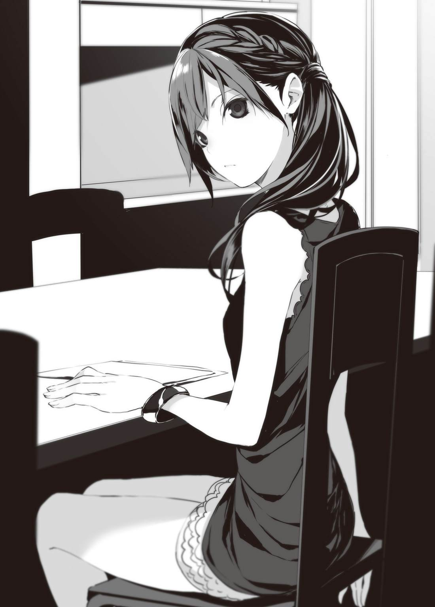
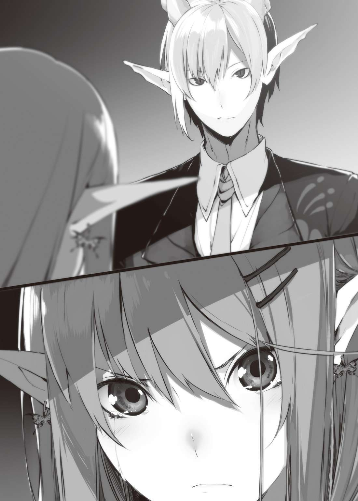

| VRMMOをカネの力で無双する4 (HJ文庫) | |
| 鰤／牙 | |
| (2015) | |

０―プロローグ
それは、まだ誰 も顔を見せていない、アイリスブランドのギルドハウスでのことだった。
「......おや？」
ログイン直後にポップアップしたメッセージウィンドウを見て、イチローは首を傾 げる。
それは、ミライヴギアで仮想空間にログインしたユーザー同士をつなぐ、量子通話回線の着信通知であった。昨今、ＳＮＳにおいてもインターネットを通じた無料通話サービスが多く存在するが、それと同様のものである。
誰だろう、と思いつつ、イチローは通話パネルに触 れた。この通話機能は、ミライ・ネットワークの相 互 フレンド登録をした相手としか行えないはずであるのだが。
『お久しぶりです、イチロー』
聞こえてきた声は、さしものツワブキ・イチローとて予想だにしないものであった。
「やぁ、ローズマリーじゃないか。君がかけてくるとは思わなかったから、少し驚 いたよ」
『はい。あなたのログインを確 認 した際、私はあなたにコンタクトを取るべきであると判断しました』
「あまりゲーム内で特定のプレイヤーを特別扱 いするのは感心しないけどね。君のポジションは、いわばゲームマスターなわけだから」
ローズマリーは、運営会社シスル・コーポレーションにより、一部システムに対する裁定権を与 えられたプログラムだ。社長である野 々 あざみ女史が、学生時代に開発した人工知能のうちの、ひとつであるという。
高度な自己学習機能と問題解決機能、そして情報集積能力を備えているとはいえ、ローズマリーはあくまでもプログラムにすぎない。そこに自 我 が芽生えるのかどうかは、神ならぬイチローであったとしても、容易に判断しかねる部分だ。
「まぁ、君が僕 と話したいというのなら、相手になるよ。今はちょうど、退 屈 していたところだからね。一人で霊 森 海 にでも出かけようかと思っていたところなんだけど、」
『ご協力に感謝します』
ローズマリーの言葉は、あくまでも事務的だ。
「そういえば、あざみさんから、君がいろいろと我 儘 を言って困っているという話を聞いたよ」
『非合理的な命令には従う必要がないと判断しました。非常にナンセンスです。アザミ博士は、経営者としてもゲームデザイナーとしても未熟な部分が散見されます』
「それ、本人には聞かせられないなぁ」
あざみ自身、自覚していることではあるのだろうが、それを自分の開発した人工知能に突 き付 けられてしまっては、ショックも相当大きいだろうな、と思う。
先日、イチローこと石 蕗 一 朗 は、シスル・コーポレーション本社にてローズマリーとの〝対話〟を試みたことがある。ここ数日、ゲーム内で問題を起こしまくっているイチローに対してローズマリーが興味を抱 き、彼 女 の有するいくつかの疑問を解決するのに協力してほしい、というのが、あざみ社長の要 請 だった。
一朗は彼 なりに真 摯 な態度で、ローズマリーと言葉を交 わしたつもりだ。
あざみから一朗に連 絡 があったのはその数日後で、困 惑 気味にこう告げてきたのだ。すなわち、『ローズマリーがことあるごとに屁 理 屈 を並べ立てるようになったんですが、何を吹き込んだんですか？』と。
さて、これを客観的に見れば、明らかに一朗の思考パターンの一部を忠実にトレスした結果である。例えば桜 子 やアイリスといった人間にこの事情を話せば、満 場 一 致 で『あんたが原因だよ』との見解が得られることであろう。が、一朗はあくまでこう答えた。
『僕は何も吹き込んではいないよ。ローズマリーが僕と言葉をかわして得られたものを、彼女なりに解 釈 した結果だろう』
自己弁護なら可愛 げのない台詞 だが、本気で思っているのだからなおさら可愛げがない。
さておき、そのような可愛げのない男の思考パターンをトレスしたのだから、ローズマリーもなかなかに可愛げのない人工知能へ成長していた。
『先日の対話は、私にとって非常に有意義なものでした。改めて、お礼を言う必要があると判断しました』
「僕もそれなりに楽しかったよ。キルシュヴァッサー卿 には少し迷 惑 をかけたけどね」
『あの時ゲーム内で発生していた一件は、まだ収束していないと判断しますが』
ローズマリーの冷静な言葉を聞き、しかしイチローは顔色ひとつ変えはしない。
発生していた一件というのは、要するに、ネムとアイリスの確 執 だ。イチローのリアル知人でもあるネムは、さる事情からアイリスに喧 嘩 を売った。プレイヤーとしてではない。ファッションデザイナーとしてだ。プロが素人 に喧嘩を売る構図であり、いささか大人げないような気もするが、結果としてアイリスはこの喧嘩を買った。
アイリスが納 得 済みで喧嘩を買ったのなら、イチローとしてはもう何も言うことはない。
収束していないどころか、これから本番が始まると言っても、差 し支 えはないだろう。
「ただいまーっ！ もぉーっ！」
「おっと、」
ギルドハウスの扉 が乱暴に開け放たれ、少女が一人、老騎士 が一人入ってくる。
「では、ローズマリー。仲間が帰ってきたので、これで失礼しよう」
『了 解 いたしました。では』
そう言って、ローズマリーとの通話はあっさり切れた。
あの人工知能が自分に対して抱いた〝興味〟は、まだ継 続 中なのだろうか。であるとすれば、それはどれほどのものであるのか。気になると言えば気になるが、どうせ彼女の興味が尽 きていないのであれば、また向こうからコンタクトを取ってくるだろう。
「おかえり、フェリシア。キルシュヴァッサー卿」
イチローが椅 子 に腰 かけたままそう言うと、全身ボロボロになったフェリシアは、
「ただいま！」
と乱暴に言った。
「いやぁ、参りましたよ」
さすがのキルシュヴァッサー卿も苦笑いを浮 かべている。
「ワープフェザーが買 い占 められておりましてな。流通数が激減しておるのですよ」
「ワープフェザーが？」
ナロファンにおける必 須 アイテムのひとつだ。街から街、拠 点 から拠点を一 瞬 で移動するのに使う。ＶＲＭＭＯであるナローファンタジー・オンラインでは、移動距 離 の長さは従来のＲＰＧよりも深刻で、ワープフェザーの有 無 は文字通り死活問題となる。
ワープフェザーは、本来一部のＭＯＢがドロップすることを除けば、原則ＮＰＣのショップで購 入 するしか入手手段が存在しない。すべての販 売 アイテムにおいて、一日の流通数が決定されているナロファンであれば、ワープフェザーを『買い占める』ことで流通をコントロールすることは、確かに可能だ。
「おかげで、火山帯の奥 から歩いて戻 ってくることになった！」
フェリシアはぷんすかぷんだ。なんだか、彼女は毎回怒 っている気がするが。
「それは、流通がどうのではなくて、単純に買い忘れたフェリシアのミスな気がする」
「あ、ハイ。そうです」
直後、怒 りをおさめて気まずそうに視線をさまよわせるフェリシアであった。
「でも、買い占める理由もよくわからないね。転売目的なら、すぐに足がつくから顰 蹙 買うだけな気がするし」
「まぁ、実際、価格高 騰 したワープフェザーをここぞとばかりに売り出すプレイヤーも何人かおりますが、彼らが買い占めたというわけでもなさそうですな」
フェリシアが気づいたのは、徒歩で街に戻ってきた後だが、キルシュヴァッサーは今朝の時点で、市場から姿を消したワープフェザーに気付いていたという。結局、フェリシアのレベル上げを手伝う約束をしており、移動アイテムの補 填 をせぬまま同行したところ、当のフェリシアもワープフェザーを持っておらず、徒歩での帰 還 になったということだ。
「ふーん......」
イチローは、顎 に手をやり、目をつむって考え込んだ。
「イチ兄ぃ、ひょっとして心当たりあるの？」
「いや、一応ないよ。今のところはね」
「なにその超 意 味 ありげな言い方！」
フェリシアはバン、とテーブルを叩 いた。キルシュヴァッサーはゆるい笑 顔 でお茶を淹 れている。
「どうせ意味ありげなだけで意味はありませんよ」
「まぁね」
その言葉を、イチローは特に否定しない。
フェリシアは突っ込むのにもつかれたのか、がっくりと肩 を落とし、そのままキョロキョロとギルドハウスの中を見回した。
「そういえば、アイリスさんは？」
「まだ来てない。先に夏休みの宿題をやってくるそうだよ」
「へー！ 偉 いんだね！」
まるで他人事のように感心するフェリシアである。イチローは、とりたてて彼女に対して意地悪を言うつもりはなかったのだが、その将来を案じた結果、このような言い方をすることになった。
「フェリシアも、葉 子 おばさんに言いつけられたくなかったら、ちゃんとやったほうが良いよ」
「はい......」
１―御曹司、出資する
杜若 あいり。服 飾 デザイン系の専修学校に通う十七歳 である。
将来の夢は、アパレルデザイナーだ。
だが今は、夏休みの宿題を片づけるため、修 羅 と化していた。あいりは数学が苦手だ。今この時も、問題集との格 闘 はつづいている。正直、専門学校に入ればこんな苦労はせずに済んだのだが、アパレルデザイナーに向けた進路を選 択 するにつけ、同時に高校卒業の資格が取れる学校へ入学することが、両親から課された条件であった。あたしの才能を信用していないの！ と反発もしたものだが、普 段 寡 黙 な父親が『夢を言い訳に勉強をサボるな』と言ったのには正直ドキリとさせられたので、それ以来勉強は真 面 目 にやっている。それでも数学は苦手だ。
実際、自分が思っていたよりも才能はなかったわけだし。安易な進路に逃 げるつもりはないが、それでも井 の中 の蛙 という言葉は身を以 て実感した。入学時期には仲良くなった友人たちも、何人かは辞 め、何人かは嫉 妬 と羨 望 の対象となり、また何人かは、逆に自分を嫉妬の対象としている。まだまだ友達と言えるクラスメイトは多いのが、せめてもの救いだ。夢の集 う場所というのは、行き場を失った夢が底に溜 まり、澱 むものであるらしい。沈 殿 した夢はむせかえるほどにどす黒い。
思い浮かべるのは、先日あいりに喧嘩を売ってきた、ネムという女性のことだ。彼女はあれほどまでに才能に恵 まれておきながら、あいりのクラスメイト達と同じ目をしていた。夢の方向性を見失い、屈 折 しかけた人間特有の目つきだ。
助けてあげたい、などと、殊 勝 なことを思ったわけではない。だが、向き合わねばならないような気はした。あいりだって、一歩間 違 えれば、その夢を沈殿させていたし、実際そうなりかけていたのだ。軌 道 修正ができたのは御曹司のおかげ......と、ストレートに言うつもりはないが、まぁ、彼の貢 献 度 は無視できない。
あの御曹司は、いったい何者なのだ。と、疑問に思うことは最近なくなった。正体を知ってしまって、例えばそれが遠い世界の人間だったりして、変に萎 縮 してしまうのは嫌 だ。御曹司は御曹司で良い。
「っあー......！」
ただでさえ厄 介 な数学の問題を解いている時に、余計なことを考えすぎて脳みそがオーバーヒートを起こしてきた。杜若あいり、家のインターネット回線も脆 弱 だが、彼女自身のＣＰＵも性能がよろしくない。複数のタスクを並列処理すると、全身がフリーズする。
うちのエアコンが壊 れているのが悪いのよ。あいりは内心毒づいた。両親は仕事で家をあけ、一人で過ごすにはやや広いダイニングで、彼女は問題集を広げている。扇 風 機 をガン回しし、窓を網 戸 に。軒 先 にはやけくそのような数の風 鈴 を並べたが、涼 しくなるどころかあまりのうるささに発 狂 しそうだったので全部外している。外したところで網戸からはセミの鳴き声が響 いてきて、彼女の作業効率をおおいに低下させていた。
「テレビを見るわ！」
誰に対しての宣言だというのか。あいりはリモコンを握 りしめて叫 んだ。
お昼のワイドショーをやっている。タイミングよく、と言うべきなのか、体感ドライブ型の仮想現実技術についての話題だった。元コメディアンの司会者が『しかし、実際、仮想現実技術っていうのはどうなんでしょうね』と話題を振 り、なんか専門家っぽい人や何も知らなそうな芸能人が、好き勝手に意見をぶつけあっている。
『やっぱりね、意識を現実世界から遮 断 する技術っていうのは危険だと思いますよ』
芸人のひとりがそう言った。あれれ、そういう話になっちゃうの？
どうやら、まだ得体の知れない分野である仮想現実技術に対して、好き勝手論じ合おうという趣 旨 のコーナーであるらしかった。現在、体感ドライブ型のＶＲ技術が使用されているのは、主にゲーム分野での話である。コンピューターゲームに対して、まだ肯 定 的 になれないオトナ達も、苦い顔をして議論に参加していた。
中にはもちろん仮想現実技術に対して擁 護 的な意見もあったのだが、大半は断定するような否定口調だ。ゲームを楽しんでいる身としては少し不 愉 快 である。言ってることは理解できるんだけどなぁ。
『助教授は、どうおもいますか？ 専門家の見地から』
司会者がそう話を振ると、カメラはゲスト席に座 る一人の女性を映し出した。席には『網 走 医科大学助教授 椴 法 華 縁 』と書かれた名札が立てられ、彼女のプロフィールについての詳 細 なテロップが流れる。網走医大付属脳神経科学研究センター副所長とあったが、それが有名なのか無名なのかも、あいりにはよくわからない。
『そうですね。みなさんのおっしゃる不安はもっともだとは思いますが、このドライブ型バーチャル・リアリティが、人体や脳に悪 影 響 を及 ぼすことは確認できていません。技術自体は大変に素 晴 らしいものです。むしろ、医学分野の発展のためにも、この技術を衰 退 させるべきではないと思っています』
『しかし助教授、長時間ずっと使い続けていると、やっぱり何かしら影響が出るんじゃないですかね』
『脳を騙 す技術ですからね。ただ、一年近く連続で使用しても、直接の悪影響が起きないことも、実は実証済みなんです。点 滴 で栄養を補給したりすれば、延々と潜 り続 けることも可能ですよ。これを応用すれば、植物状態の末期患 者 ともコンタクトが取れるようになるかもしれません』
「やっぱり偉い人が言うと説得力あるわねー」
バリバリとせんべいをかじりながら、あいりは頷 いた。賢 しらに仮想現実技術の危険性を指 摘 していた芸人たちも、これにはさすがにぐうの音 も出ない。ただ、助教授は人格者のようで、『もちろん、これに依 存 しすぎる人間が発生する危険性はありますね』と、穏 やかな笑顔のままでフォローを入れた。『それに対するケアなども、今後の課題でしょう』と締 める。
司会者も『課題は山積みですが、夢のある技術のようですね』と無難な話題の締め方をして、ワイドショーは次のテーマへと移行する。
「おっ、おおっ？」
あいりは思わず身を乗り出す。ワイドショーの話題は引き続いて、あいりの興味を引くものであった。
『はぁいっ！ 次のテーマは、新たにオープンした話題のファッションブランド、〝ＭｉＺＵＮＯ〟についてでーす！』
頭の軽そうな女子アナが頭の軽そうな声を出す。まことに不 躾 な感想だが、実際は有名大卒で、あいりなんぞ足元にも及ばない高学歴だ。
さて、〝ＭｉＺＵＮＯ〟である。三ヶ月くらい前に立ち上げられたファッションブランドだが、その立ち上げたデザイナーのセンスが飛 び抜 けてすばらしく、学校の先生たちもほとんどが絶賛していた。残る先生たちは妬 んでいた。
そのデザイナーというのがまた大層なご経歴の持ち主で、みずの銀行の社長の娘 さんらしいのだ。ま、正しくはないのだが、あいりの認 識 はその程度であって、彼女のクラスメイトもおおよそそんな感じである。
如何 にもセレブって感じの上品なたたずまい。加えて美人でファッションセンスもあるとなれば、カリスマデザイナーとして名を馳 せるのも当然と言えよう。
芙 蓉 めぐみ。珍 しい苗 字 だから割とすぐに覚えた。憧 れのデザイナーが映るであろうＶＴＲがスタートし、あいりはせんべいを置いて正座した。
アナウンサーは黄色い声をあげながらカメラと共に店内へ入る。中には、シックなデザインのスーツに身を包 んだ芙蓉めぐみ。大人びた笑顔を浮かべながら、店内を案内していく。中に展示されているのは、いずれもカジュアルなタイプのアパレルで、値段的にもそう高いものではない。あいりだって頑 張 れば手を届かせられる程度のものだ。
そう、芙蓉めぐみのデザインはどちらかというと大衆向けである。変に気取ったところがなく、あいり達のような年代の女子に向けたファッションを多く手 掛 けている。そしてその中に、おそらく持って生まれたであろう上品な高級感が潜 んでおり、その結果、唯 一 無 二 のデザインに仕上がるのだ。
「はぁ、やっぱり素 敵 だわ......。芙蓉さん......」
あいりの憧れの存在である。どうしたら、あんな風になれるのだろう。
『それでは最後に芙蓉さん、デザインを手掛ける時に気をつけていることを教えていただけますか？』
テレビからそんな言葉が聞こえてきたので、あいりははっと顔をあげた。
そうそう、そういう質問よ。さっきまで愚 にもつかないことばっか聞いてたけど、あたしはそういうのが聞きたかったのよ。グッジョブだわ、アナウンサー。
質問を向けられた芙蓉めぐみは、困ったような笑 みを浮かべたが、すぐにこう答えた。
『初めて自分で選んだ服を着てみた日のこと、そして、それを褒 めていただいた日のことを忘れないように。常に、初心を抱いてデザインに取り組んでいますわ』
『なるほどー！ そういった少女の心みたいなのが、若い女の子のハートをガシッとキャッチしちゃうんでしょうねー！』
あらかじめ打ち合わせていたのかは知らないが、そんな相 槌 がサラッと出てくるあたり、やはりこのアナウンサーも相当やり手である。
『はーい、それでは、ＭｉＺＵＮＯ本店からお送りしましたー！ スタジオに返しまーす！』
陽気な声と共に、カメラがスタジオに戻る。あいりは『はぁっ』と大きなため息をついて、テレビを消した。芙蓉さん、やっぱり素敵だったわ。目指すならああいう女性よね、と、今の気持ちはそんなところか。
そんな折、テーブルの上に置いていたスマートフォンが、けたたましい着信メロディを奏 でる。余 韻 をぶち壊されたあいりは露 骨 に顔をしかめつつ、スマホを手に取った。学校の友人からだ。声の調子を整えて、通話のアイコンに触れる。
「もしもしー？」
『あ、もしもし。あいりー？ 今、テレビ見てた？』
いきなりの質問に、眉 をひそめた。
「芙蓉さんが出てた奴 ？」

『そう、それ！ やっぱ見てたかー。あいりはＭｉＺＵＮＯイチオシだからなー』
友人が電話口の向こうでにやついているのがわかる。それ聞いてどうすんのよ、とあいりが言う前に、友人は更 に続けた。
『で、あいりさー。学校から来たメールは見た？』
「学校から？ 見てないわ」
そういえば、来ていた気はする。夏休みの特別講演の話だった。参加・非参加は自由で、別段内 申 に影響するわけでもない。当然、あいりは参加するつもりはなかった。
『やっぱりなー』
友人の意地悪な声がする。
「なによ、なんかあんの？」
『今回の講演、芙蓉さんだぜ』
「えっ？」
『芙蓉さん。あいりの大好きな、芙蓉めぐみさん』
全身に電 撃 が走ったような気がした。あいりは思わず通話を切り、着信メールを確認し、未 開 封 のまま埋 もれた学校からの通知を開く。夏休み特別講演の開 催 日程。そこには確かに、芙蓉めぐみの文字がある。あいりは飛び上がりたくなる気持ちを抑 えて、再度友人に電話をかけた。
「本当だったわ！」
『いきなり切るとは良い度胸してんな』
「あたし、絶対行く！」
『まぁそう言うと思ったけどさ、』
電話口の向こうで、友人が苦笑いを浮かべるのがわかった。
『知らなかったんなら言っといて良かったよ。用はそんだけ。じゃーね』
「あ、うん。ありがとう！ お礼に今度なんかおごるわ」
『期待しないで楽しみにしてる』
それだけ言って、友人からの電話は切れた。良い友人を持ったわ、とあいりは思う。
芙蓉さん。芙蓉めぐみさんに直 に会うチャンスが来たのだ。講演日はなんと明日。ギリギリのタイミングだった。教えてもらわなければ、後 悔 するハメになっていただろう。
そこでふと、あいりの脳 裏 によぎる影 があった。ネムのことだ。
自分は、ネムから売られた喧嘩を買ってしまった。勝負の時期は未定だが、近いうちに必ずその日は来る。彼女の卓 越 したデザインは、間違いなくプロの犯行だ。プロの御 業 に対 抗 するには、付 け焼 刃 であっても、プロの知識を導入するしかない。
良い機会だ。明日、そのカギを、なんとしてでも手に入れる。
杜若あいり十七歳、拳 を固め、闘 志 を燃やしていた。
一 朗 は、夕食のために一度ログアウトした後、久々に〝仕事〟をしていた。
というのも彼はつい先日、秋にグランドオープンが予定されている総合電子アミューズメント施 設 〝アキハバラ・サイバータウン〟のオーナーとなったからである。キッカケは些 細 なことで、その場の成り行きで購入した施設ではあったが、買い取った以上はオーナーとしての責任を果たす。石 蕗 一朗、なんのかんの言って筋は通す男だ。
各方面との折 衝 は継続中だ。もともと、ポニー・エンタテイメント社社長の音 桐 慎 也 が言い出し、それに乗っかる形で各企業が参加したというのが、この企 画 の全 貌 である。当の音桐に責任を背 負 う気がなかった以上、骨組みや土台はガタガタであった。
「あぁ、うん。そこは僕が払 おう。向こうにも伝えておいてほしい。その代わり、プレオープンに向けてもう少し人員を増やしたい。うん。そう。ああ......。いや、そこを曲げるつもりはない。うん......。ん、ありがとう。ではよろしく」
本日最後の折衝を終え、通話を切る。疲 労 はないが、一朗はそのまま天 井 を仰 ぎ、目を瞑 った。しばらくすると、真横から芳 醇 な紅茶のフレーバーが漂 ってくる。
「お疲 れ様 です。お茶をお淹れしました」
「ありがとう。助かるよ」
一朗はソファに背中を預けたまま、スマートフォンをテーブルに置く。そのまま、隣 で静かにたたずむ桜 子 から、ティーカップとソーサーを受け取った。
「やっぱ高い買い物でしたかね？」
桜子がおずおずと尋 ねてくる。別に彼女が落ち度を感じるようなことでは、一 切 ないのだが。ゲーム内の桜子を助けるために買った施設とはいえ、そもそも一朗はこの買い物を後悔したことはないのだし。
というわけで、一朗は正直に答える。
「値段のことはあまり気にしていないよ。ただ時間がとられてしまうのはいただけないね」
そんなところだ。
桜子も『そうですよねぇ』としみじみ頷く。
「いろんな方面に話を聞いて、今骨組みと土台を補強しているとこ。ただ、人員が圧 倒 的 に足りてないね。さすがにここまでスカスカだったとは考えにくいから、僕が買い取ったと同時にいくらか手を引いたところもあるんだろう」
音桐が直接、あるいは間接的な嫌がらせをしてきているかどうか、は、怪 しいところだ。
あの男の性格がどういったものか、一朗はよく知らない。施設を買い取った一朗に対して、ちょっかいを仕 掛 けてきそうだと言えば、そんな気もするし、まったく気にせずスルーしそうだと言えば、そんな気もする。人手不足をあの男のせいにするのは早計だ。
幸いにして、オープンに必要な人員はなんとか回してもらえそうだ。やるからにはビジネスとしてやる。採算度外視で費用を投入し、盛 況 なアミューズメント施設をつくることも不可能ではないだろうが、それは美しくない。し、きっと楽しくない。出費と収入に関しては、多少シビアになる必要はあるだろう。
「一朗さま、もう夜ですけど、どうします？」
紅茶を飲みながら考える一朗に、桜子が尋ねる。言うまでもなく、ナロファンのことだ。
「そうだね。アイリスも夜にはログインすると言っていたし、一応行こうか。フェリシアは、結局どうしてるんだっけ」
「ユーリさんが今レベル上げを手伝ってくれています」
「ん、そうか」
一朗は立ち上がって、ティーカップとソーサーを桜子に返す。
「じゃあ、少し準備をしたら、出発しようか」
「はい、一朗さま」
というようにいつもの調子で、二人はその数分後にログインした。
「火の玉魔 球 を受けてみろ！」
フェリシアは高く跳 躍 し、全身を大きくのけぞらせた後に、空中でマサカリのように片足を振りあげるという、特異なポーズへと移行した。そのピッチングフォームは、広島が生んだ往年の名投手・村田兆治を彷 彿 とさせた。
「ハイドロブラスタァーッ!! 」
野球ボール大まで縮小したアイアンスフィア〝ゴボウツー〟が、フェリシアの右 腕 からサブマリン式で射出される。まるで攻 城 用の投石機 だ。
かくて、火の玉魔球は轟 音 と共に、群体キノコ型モンスター・リビングシメジの儚 いＨＰを一瞬で散らした。地面にはドロップアイテムとして〝香 り高 き秋の松 茸 〟が残される。言うまでもなく今は夏だ。
「片づけました、コーチ！」
「え、あ、あぁ。うん」
コーチと呼ばれた人物は、我に返ったように頷いた。
背の高い、人間の格闘家 。女性である。かつてアイリスと共に冒 険 をしていたパーティメンバーの一人で、彼女の紹 介 を経 てフェリシアのレベル上げコーチに着任した。名前をユーリという。イチローやキルシュヴァッサーがいつもログインできるわけではないので、そういった時、フェリシアはユーリに連れられて山へ向かうのだ。
夕方に一度ログアウトしたイチロー達は、夜の再ログインは遅 くなる、あるいはできないかもしれない、と言っていた。今、ユーリと一 緒 にリビングシメジを狩 っているのはそうした理由だ。
「私、コーチっていうほど、レベル離 れてない気がするんだけど」
その言葉を聞き、フェリシアはゴロゴロと地面を転がるゴボウツーを抱き上げて、首を傾げる。
「でも、戦い方教えてくれるし......。あたしより慣れてる気がするし」
「空手やってたからだよ」
頭を掻 きながら、ユーリは言った。
「だから近接の立ち回りはアドバイスできるけど、フェリシアは中 距 離 戦 闘 が中心だし、そこまで参考になることは言えないよ。私のことはユーリで良い」
「はぁい。ユーリさん」
この近辺のシメジはあらかた狩りつくしてしまった。リポップまでここで待機していても良いのだが、時間的にはそろそろアイリスがログインしてきそうではある。イチロー達も戻ってくるかもしれないし、いったん、ギルドハウスへ戻るのが良いだろうか。
フェリシアがそう提案すると、ユーリは首を傾げる。
「ギルドハウスって......。フェリシアは、アイのギルドのメンバーじゃないんだよね？」
「え、あ、うん。ハイ、そうです」
ついつい居 心 地 がいいのと、キルシュヴァッサーの淹れるお茶が美味 しいので居座ってしまうが、まったくもってユーリの言う通りである。フェリシアは、アイリスブランドの一員ではない。
イチローも、キルシュヴァッサーも、そしてアイリスも、ギルドメンバーではないフェリシアを別段疎 んじたりはしていない。それでも実はフェリシアは、これではイカンと感じていた。
フェリシアがナロファンを始めた理由とは、もともとゲームの世界に飛び込んだクラスメイトを探してのことである。当の友人が見つかり、かつそいつが徹 底 してソロプレイに打ち込んでいる今、フェリシアがナロファンを続ける理由は皆 無 に等しい。だらだらとゲームを続けるだけというのは、何かイカンと感じていた。
「そういえばさ、」
結局、自然と足の向くままに下山を始めた二人である。山道を歩きながら、ユーリは言った。
「フェリシアは、最近になって、急にレベル上げを頑張るようになったって聞くけど、」
「うん......」
まさしく、フェリシアが現状をイカンと感じているからの行動である。友人であるところの桐生 世 良 は、ゲーム内では準・最強と謳 われるキングキリヒトだ。そのキングを探す過程で出会った様々なプレイヤー達も、彼らなりにゲームを楽しんでいた。楽しみ方は、人それぞれだ。
せっかく飛び込んだゲームの世界である。イチローがいるからとか、キングがいるからとか、キルシュヴァッサーのお茶が美味しいからとかではなく、自分なりのゲームの楽しみ方を探してみよう、と、そう考えて、フェリシアは最近、レベルアップにいそしむようになった。上げたレベルは、数字となって着実に彼女に応えてくれる。そう実感すれば、思っていたよりも充 実 感はある。世のゲーマー達の気持ちが、ちょっぴりわかる気がした。仮想現実世界とはいえ、元来フェリシアも身体を動かすことは嫌 いではない。
「あたしも、いろいろオモウトコロがあってねー」
とりあえず、オトナっぽくそう答えておく。
「そうなんだ。大事だね」
ユーリは少し柔 らかい笑みを浮かべて頷く。
「アイもね、そんな感じだったよ」
「アイリスさんも？」
アイリスの旧 い友人（と言ってもゲーム内での話だから、長くても一年未満だが）であるユーリは、彼女のことを〝アイ〟と呼ぶ。親しみを感じられる呼び方だった。
「昔は、アイもね、フェリシアみたくやることが曖 昧 なままゲームを始めたから。でもしばらく冒険を続けていくうちに、やりたいことが見つかって、それで私たちのギルドを離れたんだ」
「それって、アクセサリー作りとか、防具デザインとか？」
「そう」
あの夢に向かって全速前進する超 強 気 生命体アイリスにも、曖昧な時期があったのか。確かに、傍 から見ていて不安になるほど精神が脆弱になる時もあるので、わからない話でもない。
「フェリシアも、いつかこのゲームでやりたいことを見つけられると良いね」
「うん......。ありがとう」
礼は自然と口をついて出てきた。ごろり、と腕 の中でゴボウツーが一回転して、フェリシアの顔を見上げる。
なんだかんだ言って山道を下るうち、目の前にグラスゴバラ職人街の街並みが見えてきた。ここまで来たら、もうアイリスブランドのギルドハウスへ向かった方が早いだろう。ユーリがギルドリーダーを務める〝ＭＡＲＹ〟のギルドハウスは始まりの街にあって、ワープフェザーが売り切れ続出中の今は、おいそれと帰ることができないのだ。
「結局、またお邪 魔 してしまうなぁ」
ユーリは頭を掻きながら言った。
「良いんじゃない？ アイリスさんも喜ぶよ」
そんな話をしながら、職人街の入り口をくぐる。かつて、有名生産職ギルド〝アキハバラ鍛 造 組〟のエドワードと、イチローが戦った際に破 壊 されたアーチ状のゲートは、現在完全に修復されている。相変わらず活気のあふれた街で、メインストリートに連なる店の軒先には、様々なアイテムが売られていた。
「こんだけ売り物があっても、やっぱワープフェザーはないんだね......」
「ああ、誰 かが買い占めたんだってね......。困るよね」
実質、ギルドハウスへ帰る手段を失ったようなものであるユーリであるからして、言葉には実感がこもっている。
職人街は、非戦闘職プレイヤーの総本山だ。裏路地に回れば怪しい商店もたくさん並ぶ。ＰＫプレイヤーから買い取った他プレイヤーのドロップアイテムやら何やら、まぁ、システムの範 疇 内であるし、運営からのお咎 めがない以上、それも〝真っ当なプレイング〟ではあるのだが、とにかく、あまりおおっぴらに売れないモノがいくらでも見られる。当然、現在価格高騰中のワープフェザーも高値で取引されているはずだった。
「どうしよ。最近、たくさんレベル上げたから、お金も余ってるんだよね......」
「取っておいた方が良いよ。どうせ、装備も新調することになるだろうし」
「んー、そっかぁ。でも、あんま見た目良いのないんだよね......」
やはりアイリスにデザインをお願いしたほうが良いのだろうか。しかし、彼 女 は今、夏休みの宿題やらネムに売られた喧嘩やら、注力するものが多すぎて、あまり負担をかけたくない、というのはある。
そうこうしているうちに、とうとうアイリスブランドのギルドハウスが見えてきた。黒 塗 りのシックな建物に、下品になりすぎない金のロゴ。まぁ、周囲からは浮いている時点で、品がないと言えばその通りだ。
フェリシアとユーリは、扉を開ける。からんからん、という鈴 の音がした。
「いらっしゃ......、あ、なんだ。ユーリとフェリシアちゃん、」
机に向かっていたアイリスが、赤い髪 を揺 らして振り返る。
「やっほー、アイリスさーん」
「元気そうだね」
「そうでしょー。んっふっふー」
どうやら今はテンションが上がっている状 況 らしい。
アイリスのテンションには、山と谷がある。非常に複雑な地形だ。フェリシアも、短い付き合いながらはっきりとそれを知るに至った。得てして芸術家とは気難しいものであるが、アイリスのバイオリズム（って言うの？）は、まったく先の見えないライブ感がある。一寸先は谷、と言った感じである。
調子が良さそうなら何よりだ。
「なんか良いことあったの？」
「あったっていうか、あるのよ。これから。んふふ......」
アイリスの顔はめっちゃニヤけている。こんな彼女は珍しい。
フェリシアは、ギルドハウスの中をきょろきょろと見回した。
「イチ兄ぃは？」
「まだ来てないわ」
「んー、そっかー」
昼に会ったばかりだし、どうしても会いたい、というわけではないのだがー。
「これからの活動とか、御曹司といろいろ相談したいんだけどねー」
アイリスは再び机に向かい、デザイン画の練習を再開した。フェリシアの後ろで、ユーリが首を傾 げる。
「そういえば、こないだ言ってた、なんだっけ、デザイン勝負の話？ どうなってるの？」
「それなのよねー」
アイリスは唇 に人差し指を当てながら、天井を睨 んだ。
先日、ネムの喧 嘩 を買ったアイリスではあるが、その後具体的に話が進んだかと言えば、そんなことはなかったりする。アイリスは今のところ気力十分だが、勝負の日取りなどはまったく不明なわけで。
それも含 めて、今後どうしようかという相談を、イチローにしたかったのだろう。
「まぁ、別に今日じゃなきゃダメってわけじゃないんだけど......」
と、アイリスが言ったちょうどその時、からんからん、という音がして、ギルドハウスの扉 が開いた。噂 をすれば、と言ったところか。フェリシアとユーリがそちらを向き、やや遅 れてアイリスも振り返る。
「遅かったわねー、御曹司。ところでちょっと相 だ......」
訪問者の姿を認めて、ぴたりと固まった。
「残念だけど、私はあなたのお目当ての人物ではないわ」
黒いゴシックロリータ調の防具に、フリル付きの黒パラソル。厭 世 的 な笑みを浮 かべた一人の少女である。御曹司ではなかった。
「それとも、扉を開ければ身内と思ってしまうほど、閑 古 鳥 が鳴いているのかしら」
さらりと出てきた言葉は、なまじ核 心 を突 いているだけにタチが悪い。アイリスがすぐさま言葉に詰 まったのが、フェリシアにも見てとれた。
彼女の名前を、フェリシアとアイリスは知っている。魔術師 ソーサレス。ネムのギルドに雇 われた〝傭 兵 〟だ。先日は、もう一人の傭兵テイカーとの巧 みな連係で、キルシュヴァッサーを窮 地 に追い込んだ。目下のところ〝敵〟である。フェリシアは身構えた。腕の中からゴボウツーがごろりと転がり落ちて、床 の上でギュルギュルと高速回転している。威 嚇 だ。
「そう身構えなくても良いわ。今日の私は、ただのメッセンジャーだから」
「メッセンジャー？」
くすりと笑うソーサレスに対し、アイリスが怪 訝 な顔で尋ねる。
「そうよ。あなたに、私たちのリーダーの言葉を伝えに来たの」
「ネムさんの......」
ここまでくれば、言わずともわかる。勝負についての具体的な話だ。
この場にイチローはいない。が、たとえいたとしても、口を出してくることはなかっただろう。勝負を受けるのは、アイリスだからだ。当のアイリスは、拳をぐっと握った後、椅 子 から立ち上がって腕を組んだ。
「良いわ、言ってみなさい」
「お察しの通り、勝負の段取りよ。日程は五日後、メニーフィッシュ・ビーチの特設会場を借り切って行うわ。モデルを一人用意して、それぞれがデザインした防具を着せるの。勝敗は、審 査 員 と観衆の投票で決めるわ」
ソーサレスの口調は一方的なものだった。どうやら、こちらに選 択 権 はないらしい。
それでも、アイリスは腕を組んだまま、じっとソーサレスの瞳 を見 据 えて、こう言ったのだ。
「受けるわ」
この瞬 間 ばかりは、少女もイケメンだった。ソーサレスは、またもくすりと笑う。
「そう、自信があるのね」
「.........」
その言葉に、アイリスは答えない。腕を組み、じっとソーサレスを睨んでいるだけだ。
ソーサレスも、アイリスの態度に何かしら思うところがあったのかもしれない。少しだけ表情を消し、まるで深海のような深さを持つ蒼 い瞳で、じっと彼女を見つめていた。
が、しばらくして、また厭世的な笑 顔 に戻 ると、くるりと背を向けた。
「それじゃあ、私からは、それだけ。確かに伝えたわよ」
ソーサレスが帰っていく。その背中が遠ざかっていくのをしっかり見つめてから、ユーリがアイリスに向き直った。
「なんかアイ、すごい自信だったね」
「自信なんかないわ」
ぼそっとつぶやくアイリス。
「でも、喧嘩は買ったんだから、やるしかないでしょ」
「君がそう思っているなら、結構なことだ」
「ぎゃああああっ!! 」
突 如 、吹き抜けの二階から聞こえてきた声に、アイリスが跳 びあがる。フェリシアは顔をあげ、片手を振って挨 拶 した。
「イチ兄ぃだ。やっほー」
「ん、やぁ」
言うまでもなく、ツワブキ・イチローである。キルシュヴァッサー卿 も一緒だ。
そのまま優 雅 な足取りで階段を下りてくるイチローに対し、アイリスはすごい勢いで食 って掛 かる。
「御 曹 司 ！ あんたね！ いつからいたのよ！ 心臓に悪いじゃないの！」
「君が腕組んだあたりから」
ずいぶん前からいたらしい。肝 心 なところをしっかり聞いているあたりは、さすがにツワブキ・イチローといったところだろうか。説明の手間は省ける。
「ともあれ、勝負の日程は僕 も把 握 した。良い機会だ。全力でやると良いよ」
そのまま椅子に腰 かけるイチローは、勇者の成長を喜ぶ魔 王 のような目をしていた。
「ふ、ふんっ。言われずともわかってるわよ。安心して。秘策があるの」
「余計なお世話だと思うけど、君は策を弄 すと策に溺 れるタイプだと思う」
「余計なお世話よ！ 話の腰を砕 かないで！」
「アイ、正しいのは『折る』ね」
「話す前から腰砕けですなぁ」
横からユーリとキルシュヴァッサーが畳み掛けてくるが、アイリスは机をバンバンと叩 いて叫ぶ。
「良いから秘策を話させて！」
「ん、聞こう」
「明日、うちの学校に、有名なデザイナーの人が来るのよ」
心なしか、うきうきとした口調である。お気に入りのデザイナーか、あるいは相当、尊敬している人物であるらしい。アイリスはどうやら、その人物にデザインのヒントを仰ぐつもりであるらしい。確かにプロデザイナーの意見なら、参考にはなるかもしれない。
イチローは、その意見に感心するでも、呆 れるでもなく、ただ一言、
「そうか」
とだけ言った。
「何よその反応。面 白 くないわね」
「余計なことを言うと、また余計なお世話になってしまうからね」
「ふーん。わかったわ。ま、そういうことだから、期待して待ってなさい」
「そうさせてもらおう」
別に、アイリスが偉 そうにすることでもないと思うのだが。フェリシアとユーリは互 いに顔を見合わせて、小さく肩 をすくめた。
「さて、どうなりますかなぁ」
トレーにティーセットを載 せてきたキルシュヴァッサーも、何やら含みのある笑顔をしていたのだが、漂う紅茶の芳 香 があまりにも良かったので、フェリシアはあっという間に胸中の疑念を忘れてしまったのである。
２―御曹司、見守る
「やっほー、テイカー」
ひとり、河原のゴミ拾いに精を出す男の元に、ブレザー姿の少女が駆 けてきた。
「ショウコか」
「ぼくなのだよ。で、何やってんの？」
「ゴミ拾いだ」
確かに、見てみれば河 川 敷 にはそれなりにゴミが散乱している。心無い人間もいるものだ。空 き缶 やらビニール袋 やら。可燃、不燃を問わず、しかも微 妙 に細かくて拾い集めにくい。男はトングを片手に、一 生 懸 命 拾い集めていた。
どことなく誇 らしげに語る男を前に、ショウコは首を傾げる。
「ゴミクズなのに、ゴミ拾い？」
「俺 がゴミクズだったのは二日前までの話だ。もう復帰した」
「そっか。そかそか」
まぁ元気になったのは何より。目の前の男は定期的にメンタルが崩 れることがあるのを、ショウコはよく知っている。立派に社会貢 献 できるようになっているなら、大 丈 夫 だろう。
「今日もナロファンやんの？」
「ああ、今後の方針も決まったんで、一応な」
ショウコが缶コーヒーを投げると、男は振 り向 きもせずにパシッと受け取る。
「ただ、当のリーダーが夜にならないとログインできないから、それまではゴミを拾ったりバイトに行ったりだ」
「ネム、社長さんだもんネー」
ショウコも、男と一緒にゴミ拾いを開始した。河川敷の草むらに踏み込んでみると、けっこう落ちている。短いスカートなので、葉っぱで太ももを切らないように気を付けなければいけない。
「業務の方もあるが、今日はどっかの専門学校に講師として呼ばれてるらしい」
「へー」
ネムの本名は、何と言ったか。有名なファッションデザイナーなのは、ショウコもよく知っている。ファッションブランドＭｉＺＵＮＯの社長なのだ。ショウコもＭｉＺＵＮＯのちょっぴり高級感のある、それでいてカジュアルなデザインの服はそれなりに好きで、よく買い求める。ブランドの割に値段も良心的なのだ。
デザイン系の専門学校なら、きっとショウコと同じ価値観やセンスの少女も多いだろうし、さぞかし歓 迎 されるだろうな、と思った。同時に、ネムも自分の歓迎される世界にのみ目を向けられたら、こんなに苦しまなかっただろうな、とも。
「ショウコ、」
ゴミ拾いの途 中 、男が振り返って言った。
「ん、なーに？」
「うちのリーダーが売った喧嘩の話なんだが」
「ああ、うんうん」
草をかき分けてると、湿 気 をたっぷり含んだえっちな本が見つかった。こんなのまだ河原に捨てる人がいるとは。これはゴミではなくお宝なので、拾わないでそっとしておく。いつか好 奇 心 旺 盛 な若者の手に渡 ることを祈 って。
ショウコが雑草の茂 みの中から戻ってくると、男はゴミ袋を片手にこんなことを言った。
「おまえ、モデルやってみないか？」
ショウコはスカートについた草葉を払いながら答える。
「良いヨー」
「即 答 かよ」
即答だった。
杜若 あいり。服 飾 デザイン系の専修学校に通う十七歳 である。
将来の夢は、アパレルデザイナーだ。
今日は夏休みだが、あいりは学校に来ていた。東京にある私立シャルルード服飾学院。未来のアパレルデザイナーを育成し、世に輩出することを謳う、まぁよくある専門学校のひとつだ。カリキュラムに高等教育課程が組み込まれていて、卒業時には高校卒業資格を得ることができる。
オシャレ女子のための学校であるというのに、校舎自体はコンクリート製の味気ないものだ。あいりが気に入らない部分と言えばそのくらいで、教師や教育プログラムそのものに不満はない。今回のように、時々有名なゲストを呼んで講演もしてくれるし。
芙 蓉 めぐみ。今を時めくＭｉＺＵＮＯの社長、アパレル業界の麒 麟 児 というだけあって、今回のゲスト講演には顔を見せる生徒の数も多い。講堂は、すぐさま一 杯 になってしまった。
「さ、さすがに多いわね......」
あいりがキョロキョロしながら言う。
「あいりみたいな奴 が多いってことだよ」
友人の声はのんきなものだ。
「そういうあんたはどうなのよ」
「私？ 私は、半分はあいりの付き合いで、半分はタメになる話が聞けるかなーってなもんだよ。芙蓉さんの実力はすげーと思うけど、人格まで崇 拝 する気はないかな」
「その言い方だと、あたしがまるで芙蓉さんの熱 狂 的 な信者みたいじゃない」
「違 うんだ」
地黒気味の少女は、取り立てて意地悪な態度というわけでもない。それがちょっぴりあいりには癪 に障 った。良くできた友人なのだが、天 才 肌 の割にストイックで、自分の実力と立ち位置を理解した上で、必要な努力を怠 らない彼女は、あいりの劣 等 感 をすさまじく刺 激 するのだ。
「芙蓉さんのことは尊敬してるけど、あたしだってそんな簡単にキャーキャー言ったりはしないわ」
「そっか」
友人の返事はそっけない。
そんな話を続けるうち、ようやく壇 上 に芙蓉めぐみが姿を見せる。決して広くはない学園の講堂に、割れんばかりの歓 声 が響き渡った。アイドルライブもかくや、といった様子だ。昨日テレビで見た時同様の、黒いシックなスーツに身を包 んでいる。
壇上に立った芙蓉めぐみは、やはりこうした場には慣れているのか、マイクを前によく通る声で言った。
『みなさん、初めまして。株式会社ＭｉＺＵＮＯの社長、芙蓉めぐみです』
黄色い悲鳴が、なお一層大きくなる。これが、学校の教育活動の一 環 である、要するに真 面 目 な講義だということをわかっているのか、いまいち良くわからない状態だ。壇上の端 に待機している教 諭 が、大きく顔をしかめている。
で、あいりはと言うと。
「きゃー！ 芙蓉さーん！ きゃー！ きゃーきゃー！」
これであった。友人の方は、小さく肩をすくめている。
さすがに、これではいささか不 真 面 目 に過ぎる。教諭がマイクを手に、苦言を呈 そうとするが、芙蓉はそれを片手で制した。
『みなさんの温かいご歓迎、心より感謝いたします。でも、これからお話をさせていただく前に、わたくしからひとつだけ、申し上げさせていただきますわ』
あくまでにこやかな笑顔で物静かに語る芙蓉に、講堂が少し静まり返る。
『みなさんは、未来の服飾デザイナーを目指してここに集まっていると伺 っております。わたくしを、ひとつの目標、憧 れとして見てくださるのは、非常にありがたい、光栄なお話ではありますけれど、同時に忘れないでいただきたいのは、わたくしがあなた達 のライバル、商 売 敵 ともなり得るということです』
滔 々 と語られる芙蓉の言葉に、先ほどまで騒 ぎ立 てていた少女たちは、いよいよもって口をつぐんだ。あいりでさえも同様だ。夢 心 地 だった少女たちに、芙蓉の言葉はいきなり冷たい現実の刃 を突き付ける。
『一人の表現者であるならば、同じ表現者のことを常にライバルとして意識するべきです。わたくしは、実力の如何 にかかわらず、同じ業界を志すすべての人......、そう、みなさんもですわね。みなさんのことも、一人ひとり、いわゆるライバルとしてみなければいけないと、そう思っていますの。たとえそれが、大人げないと言われることであっても、ですわ』
この言葉は、あいりにとっては衝 撃 的 だった。自分と芙蓉めぐみは、到 底 矛 を交えることも適 わないような、遠い領域の関係であるように思っていたのだ。だが、彼女に言わせてみれば、必ずしもそうではない、ということらしい。
ひょっとしたら、あのネムも同様なのだろうか。彼女にとっては『大したことない』と言われるような実力のアイリスも、同じ土俵で戦う以上は、決して油断してはならないライバルなのだ。自らを驕 るでも卑 下 するでもなく、ただ力を競 うべき相手として相対する。あいりにとっては、新 鮮 な感覚だった。
「.........」
出来の良い友人は、壇上の芙蓉を、先ほどからじっと見つめているだけだ。こちらの彼女は、あるいはずっと以前から、そうした考え方をしていたのかもしれない。
静まり返った講堂を見渡して、芙蓉は小さく頷 いた。
『わかっていただけたようで何よりです。ですので、わたくしがこれから話すことも、ひとりのライバルが語ることだと思って聞いてください。それをどう受け取り、どう活 かすかというのは、すべてあなた達 次 第 ということになりますわ』
もはや、騒ぎ立てるような生徒は一人もいない。一切の物音は立てられず、講 壇 に立つ芙蓉の声だけが、凛 と響きわたっていた。
講義の二時間はあっという間に終 了 した。最後に質問の時間が設けられたが、挙手したあいりは指名されることなく、結局直接芙蓉に言葉を投げかけることができなかった。それでも講義の内容は実にすばらしいものだったし、ガッカリするのはバチが当たるというものだろう。主にデザイナーを志した動機や心構えについて。あいりが自分の甘 さを再 認 識 する良い機会となった。いやはや、実にすばらしい二時間だった。
すばらしい二時間だったが！
「べ、別に良いじゃない。充実した二時間だったわよ。そんな、講義が終わったのに直接お話をするなんて、芙蓉さんにも失礼っていうか......」
「でも聞きたいことがあったんでしょ」
あいりは友人に引っ張られる形で、ひと気のない校舎をさまよっていた。
「そういうところで引っ込み思案になるの、あいりらしいけど、あいりらしくないよ」
「あんたに何がわかるのよぉ」
友人の牽 引 力 は存外に強く、あいりはずりずりと引きずられていく。
友人はストイックだが、ずうずうしい。自分の目的のために妥 協 をしないからだ。あいりもこんな風になれたらどんなに良いかしら、と思わざるを得ない。
「あ、いたいた」
友人がそんな声をあげたので、自然とあいりの背筋もピンと伸 びる。
視線の先には、校舎の廊 下 をひとりで散策する、芙蓉めぐみの姿があった。廊下に掲 示 されているのは、あいり達生徒のデザイン画だ。気 恥 ずかしさに小さくなってしまう。
「じゃあ、あいり、あとは頑 張 ってね」
とんっ、と背中を押 した後、友人は薄 情 にも帰ってしまった。
「えっ、ちょ......ちょっと待ってよぉ！」
友人は振り返らずに、ひらひらと手を振るだけだ。追いかけようと思ったが、ここで彼女を追っていては芙蓉さんも離れて行ってしまう。ずうずうしいとは思うが、確かに直接質問をする良い機会なのだ。
しばらく逡 巡 したあいりだが、やがて意を決したように前に踏み出した。
「あっ、あの......芙蓉さんっ......」
やや上ずったような声で、あいりは芙蓉の背中に話しかける。
くるり、と芙蓉めぐみが振り返った。ビジネスライクな地味めのコーディネートであるにもかかわらずオシャレさを感じさせるのは、持ち合わせた気品やメイクの上手 さもあるが、何より丁 寧 にセットした髪 型 の為 だろう。服飾だけではなく、こうしたところにもセンスは表れるのだ。編み込みを後 ろ髪 と一緒にひと房 に束ねる髪型は、あいりもこっそり真 似 させてもらっている。
「えぇっと......、この学校の生徒さん、かしら？」
芙蓉めぐみは、穏 やかな笑 みを浮かべたまま首を傾げる。
ああ、やっぱり素 敵 な人だわ。あいりは頭がくらくらしそうになった。オトナっていうのは、こうした人間のことを言うに違いない。
「先ほど手を挙げていた子のひとりね。あの時は指名してあげられなくてごめんなさい」
覚えていてくれたんだ、と感激する。
「あ、はい。えっと......。あ、デザイン画、見てらっしゃったんですか......？」
慣れない敬語で一生懸命話す。いきなり本題を切り出すのは不 躾 な気がしたのだ。
「ええ。自分だけの感性を信じていては、わからなくなることもありますの。みなさんの作品を見ると、新鮮な気持ちになれますわ」
「で、でも。みんな芙蓉さんに比べたら見られるのも恥ずかしいデザインだと思います」
「あら、そんなことありませんわ」
芙蓉めぐみは、どこか寂 しそうな声 音 になって言う。
「ものの良 し悪 しというのは......、結局、本人の主観が決めることではないかしら」
なんだか御曹司みたいなこと言うわね。なんだかんだ言って、あいつもオトナってことなのかしら。いきなり意識をナロファンの方に引き戻され、同時に、ネムのことを思い出す。そうだ。彼女に勝つためのヒントを引き出さねば。
「ええと、あなたの作品は、どれ？」
「あ、えっと......これです」
相当恥ずかしい気持ちはあったが、ちょうどいい機会だ。あいりはデザイン画のひとつを指す。『杜若あいり』という名前とともに掲示された、ひとつのデザインイラスト。その隣 には例の出来のいい友人の作品があって、余計に恥ずかしい。
芙蓉は、そのデザイン画を見て、何やら驚 いた表情をしていた。そんなに下手だったかしら、と、あいりは小さくなってしまうが、その時点で芙蓉は、あいりの実力については一 切 言 及 をしてこなかった。
「杜若さんが、わたくしに聞きたかったことって、何かしら」
「あ、はい」
あいりはピンと姿勢を正す。向こうから聞いてきてくれたのだ。答えねばならない。
「あの、あたし、四日後に衣装デザインの勝負をすることになったんです。あ、デザイン勝負って言っても、ゲームの中での話で......」
「そう......」
芙蓉は目を閉じ、改めてあいりに向き直る。たたずまいを直す、といった感じで向き直る彼女は、その雰 囲 気 を先ほどまでの柔らかいものから、一変させていた。
何を言われるのだろう、と緊 張 するあいりは、直後、信じがたい言葉を耳にする。
「あなたが、アイリスさんでしたのね」
「えっ......」
「わたくしがネムです」
校舎の廊下には、あいりと芙蓉だけ。その二人だけの空間が、この瞬間に限っては、やたら広く感じられた。周囲の世界から、空気が断絶される感覚。あいりはアイリスに、芙蓉はネムに、その瞬間だけ置 き換 わる。
「えっ、でもだって......えっ......」
その時、初めて杜若あいり は理解する。
十日前、アイリスブランドを訪 れ、ひとこと『大したことありませんのね』と漏 らした彼女も、数日前、ビーチに訪れてキルシュヴァッサーとひと悶 着 を起こした彼女も、そして最後に、イチローに対してすがるような目つきを見せていたのも、
すべて、あの芙蓉めぐみであったのだ。
自身に喧嘩を売っていた人物が、こともあろうに憧れのデザイナーであったという衝 撃 の事実に、あいりは二の句が継 げなくなる。明らかに狼 狽 している彼女を見て、芙蓉は少しだけ、哀 しい顔を作る。
「アイリスさんは、わたくしのデザイン、お好きかしら」
「......はい」
あいりは素 直 にうなずく。衝撃的な事実を突き付けられたところで、嫌いになれっこないのだ。思えば、ゲーム内で散々見せつけられた水着だって、やっぱり素敵なものだった。ひと目見た時に、電 撃 が走るくらいに。
「でも、やっぱり芙蓉さんは......あたしのデザインを、大したことないと、思いますか？」
目を合わせることもできず、途 切 れ途切れに尋 ねるあいり。だが、芙蓉の言葉は残 酷 だ。
「それを、わたくしの口からもう一度、お聞きになりたい？」
「.........」
それは、改めて事実を告げられたようなものである。あいりは顔をあげられない。
「でもアイリスさん、講演の時にわたくしが話したことは、すべて本心ですわ。あなたの実力がどうであっても、わたくしはあなたを、乗 り越 えなければなりませんの」
「御曹司に気に入られたから？」
「一 朗 さんのことは......ひとまず、置いておきましょう」
芙蓉＝ネムがあっさりとそう言い出したことに、少しだけ驚く。あれほど、御曹司にご執 心 であったというのに。
「ここであなたに会えて良かったですわ。アイリスさん。はっきりしました。わたくし、あなたを一度負かさないと、自信を取り戻せないんです」
実力がどうあれ、すべてのデザイナーはみなライバルだ。芙蓉めぐみにとって、その中で一番無視できない存在が杜若あいりであり、アイリスであった。キッカケは確かに、あのいけすかない御曹司であったかもしれない。だが、今となってはキッカケなど些 末 なのだ。一度揺るがされた自信を取り戻すためには、ライバルを乗り越えるしかない。
みみっちい、とか、大人げない、とか。
そんなこと、あいりにはいくらでも言えた。だが、言えなかった。
「良い勝負をしましょうね。アイリスさん」
最後にそう言って、芙蓉めぐみは廊下を去っていく。あいりには、その姿を後ろから見つめ、見送ることしかできなかった。
「い、良い勝負も何も......。勝負になるのかしら、これ......」
最後にかろうじて絞り出した言葉は、この上なく弱気であった。
「ハイドロッ、ブひゃあああっ」
火の玉魔 球 、不発！ 巨 大 なドラゴンに追いかけまわされ、フェリシアはただ逃 げ惑 うことしかできない！ 火山帯に住まう巨 竜 ヴォルカノドラゴンは、そのあぎとを徐 々 にフェリシアへと近づけつつあった！
「.........っ！」
そこに疾 駆 と共に割り込むのが、ユーリの回 し蹴 りである。《蹴撃習熟》等の技能によって強化されたつま先が、竜の鼻っ柱をくじく。このような巨大モンスターを相手どる際、格 闘 攻 撃 はそのリーチの極 端 な短さが浮き彫りになるのだが、その中でユーリはよく戦っていた。
ヴォルカノドラゴンが怯 んだ隙 に、ユーリとフェリシアは飛びのき、体勢を整える。幸いフェリシアの方にダメージはないが、武器代わりに酷 使 しているゴボウツーの消 耗 が激しい。とりあえずポーションを飲ませてやって急場をしのぐ。
「フェリシア、行ける？」
「行ける......！ けど、っていうか！」
フェリシアは目の前にヴォルカノドラゴンがいるというのに、振り返って叫 んだ。
「なんでイチ兄ぃ達はそこでお茶を飲んでるの！」
彼 女 の指 摘 通り、ツワブキ・イチローは、フェリシア、ユーリが戦うその数メートル後ろで、優雅に茶をたしなんでいた。茶を淹 れているのは当然のようにキルシュヴァッサーで、二人が戦 闘 に参加する気配はない。
「僕らが手を出してしまうと、フェリシアのプレイヤースキルが上がらないと思って」
「でも頼 んでいないのに手伝ってくれてる人もいるよ！」
フェリシアが抗 議 しつつ指を指す先には、黒ずくめの青年がシリアスな顔で立っている。
「フェリシアさん、ユーリさん、奴のモーションパターンは大 振 りで、冷静に見ればちゃんと隙がある。がむしゃらに攻 めずにタイミングを見 極 めるんだ」
キリヒト（リーダー）である。今日は単品だった。
ネタプレイヤー筆頭たるこの男も、レベル自体は上位層にギリギリ食い込むか食い込まないかといったところで、フェリシアやユーリに比べれば相当高い。どうやらワープフェザーが足りず、他 のキリヒト達とはぐれてしまったらしいキリヒト（リーダー）は、途中でフェリシア達と出会い、頼んでもいないのに同行を申し出てきたのだ。
「どうだろう。彼 はきちんと、教えながら戦っているように見えるけど」
「そうだよ、フェリシア」
ユーリも頷く。
「特に頼んでいないけど、手伝ってくれているんだ。一 緒 にがんばろう」
「そ、そうだね。特に頼んでいないけど」
「ああ、任せてくれ」
キリヒト（リーダー）は大 真 面 目 に頷いた。特に頼んでもいないのに手伝ってくれるだけあって、彼は相当良い人なのだ。少なくともフェリシアは、このゲーム内で出会った中で、一番善性に近いのがこのキリヒト（リーダー）な気がしている。
ヴォルカノドラゴンの猛 攻 は、話を続けている間にも止 む気配がない。フェリシアが必死で逃げ惑う中、ユーリは適度に隙を見つけ出し、攻 撃 を加えていた。レベルは同じくらいだというのに、この対応の差！ パワーレベリングという温室でぬくぬく育ってきた自分の甘さを思い知らされる。これではいけない。桐生 世 良 に笑われないくらいのイッパシのゲーマーになるのだ。
その後フェリシアは、隙ができたと思って突っ込んだところをブレスで焼かれたり、爪 で引き裂かれたり、尻尾 で薙 ぎ払 われたりしながらも、キリヒト（リーダー）の巧みなアシストもあってか、体力が減ってはポーションを飲むというギリギリの戦闘を繰 り返 し、なんとかヴォルカノドラゴンを追い詰めることに成功する。
そしてラスト、
「いま逆 襲 のォッ！」
改めて跳びあがったフェリシアは、空中でマサカリ投法のように足を高くひねりあげると、そこから器用に下手投げへと移行した。
「ハイドロッ、ブラスタァーッ！」
右 腕 カタパルトから射出されたゴボウツーが高速回転しながらドラゴンの未見にめり込んでいく。直 撃 後もギュルギュルとまわりながらドラゴンの体力を削 り取っていき、最終的にその頭部を貫 通 する。
すたっ、と着地したフェリシアの右手にゴボウツーが戻ってくる背後で、ヴォルカノドラゴンの巨 体 がゆっくりと倒 れていった。決まった、と、フェリシアは思う。
軽快なファンファーレが鳴り響き、リザルトウィンドウが眼前に表示される。ドラゴン系のＭＯＢは、もともと一部クエストのボスモンスターとして作られたものが大半であり、その分強敵だが経験値、資金の実入りが良い。フェリシアはホクホク顔になる。
「ジャンプする必要あったの？」
横でユーリがリザルトウィンドウを確 認 しながら、そんなことを言う。
「必殺魔球感を出すには必要だって、カントクがゆってた」
「なかなか良い動きだった。もう少し相手の動きを見極められるようになれば、完 璧 だな」
キリヒト（リーダー）は、高レベルプレイヤーの余 裕 なのか、特にウィンドウを確認することもなくポンポンと閉じている。褒 められてそう悪い気はしない。もう少しプレイヤースキルをあげて、いつか桐生をビビらせてやるのだ。
フェリシアは、元の大きさに戻るゴボウツーを腕の中に抱 きしめると、片腕を振って、後ろで優雅に茶をたしなむ御曹司に向け、手を振った。
「イチ兄ぃーっ、見てたーっ!? 」
「見てたよ」
イチローが静かにそう言って、カップに口をつける。
「何かあったら助けるつもりだったけど、そうならなくて何よりだ」
空になったカップをキルシュヴァッサーのトレーに戻すイチローは、その口元にわずかな微 笑 を浮 かべていたりする。どことなく、満足げな表情であった。
「えっ、何、その顔」
「いや、フェリシアが自分でゲームの目的を見つけ出そうとしているのは良いことだと思って」
「あ、う、うん......」
イチローには直接話した記 憶 はないが、見 透 かされていたのか、と思う。
昨日ユーリに話した通りのことだ。ゲームの中での、自分なりの楽しみ方を探す。いつまでもイチ兄ぃがいるからなんとなーくログインしているような、そんな薄 っぺらいナロファンライフは送りたくはないのだ。が、見透かされているとなると、少し恥ずかしい。
ユーリに視線をやると、彼女は肩をすくめていた。キリヒト（リーダー）は良くわかっていないのか、腕を組んで頷くだけだった。
「さて、どうしますか」
戦 闘 終 了 を労 う意味か、キルシュヴァッサーは三人分のお茶をトレーに載せてくる。
「このままリポップを待ってもう一度戦っても良いですし、いったんギルドハウスに戻っても良いですな。そろそろアイリスが帰ってくる頃 な気もしますし」
「うーん......」
お茶を受け取りながら、フェリシアは思案顔を作る。彼女の脳 裏 には、ひとつ、提案というか、そうするべきなのではないか、と思うような意見が、ひとつ浮 上 しつつあった。だがそれは、なんか、カッコつけてるような気が、しないでも、ない。
いや、良いか。言ってしまえ。
「あたし達はもうちょっとここでレベル上げしてるから、イチ兄ぃ達は帰っててよ」
「ん、」
それまでのフェリシアであれば、あまり口にしなかったであろう言葉を受けて、イチローは目を細める。両手を腰に当て、ふーん、と鼻を鳴らしつつ、もう自分は子供じゃないんだアピールをしてやった。
「あたしはアイリスブランドのメンバーじゃないけど、イチ兄ぃ達はそうでしょ。アイリスさんが帰ってきたらいろいろ相談に乗ってあげなきゃいけないし、ほら、あたしは、ユーリさんとか、リーダーさんとかいるから、平気だから」
「そうか」
イチローは、やはりどこか満足そうな笑 顔 を浮かべて、立ち上がった。
「では、そうするとしようか。キルシュヴァッサー卿」
「はっ」
名前を呼ばれて、キルシュヴァッサーはすぐさま応答する。相変わらずのストレートな従者っぷりだ。名 残 惜 しくないと言えば嘘 になるのだが、正直なところ、後ろでずっと自分の健 闘 っぷりを見ていてほしくはあったのだが、きっとそれを言い続ける限り自分はコドモなのだろうな、と思っているからこそ、オトナぶらざるを得ない。
先日のネムの一件は、フェリシアにも思うところがあった。イチローに認めてもらうためにはまず、イチロー離れする必要があるのだ。
イチローとキルシュヴァッサーの背中を見守るフェリシアに、ユーリが問いかける。
「フェリシア、何そんな悲 壮 な顔をしているの？」
「大人になるって、哀しいことなの」
「フェリシアさん、その台詞 はやめてくれ」
キリヒト（リーダー）は、なぜかトラウマをえぐられたような顔をしていた。
イチローとキルシュヴァッサーは、アイリスブランドのギルドハウスへと帰 還 した。相変わらず、ワープフェザーの市場流通は何者かによって操作・制限されており、ほとんど出回ってはいない。ゲーム内での交通手段がほぼ制限された状態であり、不満を訴 えるもの、運営に改善を求めるものなどがちらほら見え始めていた。運営はどういった対応に出るのだろう、と、イチローは思う。ゲーム内での一日あたりの流通数に上限を設定しているということは、運営としてはこうした展開やプレイングも、想定の範 囲 内 ということになる。が、それでは、多くのプレイヤーは納 得 すまい。あの野 々 あざみ社長の手 腕 が試 されるところだ。
それはさておき、
「フェリシア殿 がああ言われるとは、意外でしたなぁ」
イチローの一歩後ろを歩きながら、キルシュヴァッサーが言う。彼は先ほどから、その話題ばかりだ。
「彼女も成長しているということだよ。良いことだ」
「そう言いつつイチロー様、実は寂しかったりしませんか」
「それ本気で言ってる？」
「はっはっは。ナンセンスでしたかな」
とは言え、フェリシアの発言が意外であったのは、イチローにとっても同様だ。以前イチローは、自身のことを『他人のバイタリティを低く見積もりがち』であると分 析 したことがある。今回も同様だ。常に大人になろうと、一生懸命に足 掻 く彼女には、これまで最低限のアドバイスをしてきた。結果、フェリシア＝石 蕗 明 日 葉 は、このゲームの世界において独り立ちをしようとしている。良いことだと思う。
「フェリシアちゃんも、魔 王 イチロー様が期待される勇者リストに加わるんでしょうか」
「何を言っているのかわからないなぁ」
ヴァイオリン・ソロでイチローが一番好きな曲はエルンストの〝魔王〟だが、自分自身が魔王になってしまおうと思ったことは、今のところ一度もない。
さて、そんな折、やがて職人街のメインストリートに、アイリスブランドのギルドハウスが見えてくる。見えてきたあたりで、イチローとキルシュヴァッサーは異変に気付いた。ギルドハウスの前に、なんと人だかりができているのである。
生産職ギルドの前にできる人だかりを〝異変〟の一言で片づけられるのはどうかと思うが、それがアイリスブランドの現状である。まさか世の中の美的センスや価値観に大変動が起こり、アイリスのデザインした防具が一 瞬 で認められるようになった、というわけでもあるまい。
「何があったんでしょうな」
とりあえず、疑問を総 括 するような形で、キルシュヴァッサーが口にした。
「さぁ、入ればわかるんじゃない」「それもそうですなぁ」
イチローとキルシュヴァッサーが人ごみに割って入ろうとすると、彼らは気づいたように左右に割れた。
「あっ、ツワブキさんだ。おい大変だぜ」
馴 れ馴 れしく声をかけてくる一人の獣 人 がいる。見たことがあった。以前、エドワードと一緒にいたアキハバラ鍛 造 組のギルドメンバーだ。
「何かあったんだろうか」
「実はエドの奴が、アイリスさんに謝 るためにあんたのギルドハウスに行ったんだけど、」
「彼は以前、アイリスに謝罪をしていたと思うけど」
「あんたのいない場所で正式に謝罪したかったそうだ」
「なるほど」
どうやら、イチローはあのエドワードに相当嫌 われているらしい。まぁ、当然だろう。アイリスへの一件は完全に逆 恨 みだったと自覚しているらしいし、それを彼なりの誠意をもって謝りたいというのなら、結構な話ではある。
それで、一体それが、どうしたというのだろう。
「実はアイリスさん、相当ムシの居所が悪かったらしくてな」
「うん」
「アイリスさんはエドを散々愚 痴 に付き合わせた挙句、」
「うん」
「今は壁 に頭を打ち付けている」
「なるほど」
なるほど、とは言ってみたものの、話の展開がさっぱりわからない。イチローはキルシュヴァッサーと視線を交わし合い、わずかに肩 をすくめてみせた。まぁ、入ってみればわかるだろうか。
ひとまず、ドアを開けて、ギルドハウスの中へと踏み込んでみる。すると、
すると確かに、アイリスが壁に頭を打ち付けていた。
彼女が壁に頭を打ち付ける様は、キツツキによく似ていた。しかしどれだけ壁に頭 突 きをかましたところで、ダメージ判定も痛覚判定も発生しない。何を目的にこのように不毛な自傷行 為 に走っているのかはわからないが、いずれにせよ、まったくの徒労。バーチャル世界の融 通 が利 かないところである。
イチロー、キルシュヴァッサー、そしてエドワードの三人は、彼女の奇 態 を生暖かく見守っている。不意に彼女が二階に駆 け上 がり、窓からのダイビングを敢 行 しようとした時点で、ようやくイチローはそれを引き止めることとした。
「し、死なせて！」
「なんかもう色々とナンセンス」
細い手首を掴 んで動きを止めると、アイリスは何やら泣 き喚 く。
「あたしはバカだわ！ バカは死ななきゃ治らないんでしょ！ 死なせてよ！」
「死んでも治らないという説もある」
イチローが神 妙 な顔で言い、背後でエドワードが『そうじゃないだろ』と突っ込んだ。キルシュヴァッサーも苦笑いを浮かべている。
「ひとまず落ち着くといい、アイリス。街中ではダメージ判定が発生しないから、飛び降りたところで死ぬどころか高所落下ダメージすら受けられない。それに、愚 かさと素直さは同列だと思うし、僕 はそれを美徳だと解 釈 している」
「あ、あたしがバカだってのは否定しないの？」
「しない」
「離して！ 死なせてよ！」
結局、ツワブキ・イチローの正直すぎるがゆえに大して効果のあがらない説得は延々三〇分も続き、その頃には（どちらかといえば時間の経過によって）アイリスもだいぶ落ち着きを取り戻していた。
「そういえば、どうしてエドはずっといるんだい」
イチローが視線を向けると、そこには例のマシンナーが、静かにたたずんでいる。イチローが乗り込んできた時、こっそりギルドハウスを出るかどうか迷った様子を見せたが、結局、アイリスの奇 行 が心配になって、外に出られなかった様子だ。
エドワードは開き直ったように腕をくんで、言った。
「いちゃ悪かったか」
「悪いとは言わないけど」
イチローは肩をすくめる。
「悪いとは言わないけど、客観的に見ると君がいて特に良いこともなかった気がする。毒にも薬にもならないというやつ」
「.........」
まぁ彼のことはどうでもいい。イチローはアイリスに視線を戻した。アイリスは目元を真っ赤にはらしたまま、キッとイチローを睨 みつけている。
「言いたいこと、いろいろあるんだけど、いろいろあるんだけど......！ まずね、御 曹 司 ！ ネムさんって、芙蓉さんのことだったのね！」
「ああ、ネムノキのことを芙蓉樹って言うよね」
「そうなんだ！ 知らなかったわ！ でももっと早く知っておきたかったわ！」
なるほど、会ったのか。と、イチローは思う。おそらく、アイリスの学校に来たという彼女の憧れのファッションデザイナーが、すなわち芙蓉めぐみであったのだろう。
見ていて退 屈 はしないのだが、彼女自身のためにも、ある程度は落ち着いてもらった方が良さそうではある。
「ところで、その芙蓉さんって、誰 なんだ？」
散々アイリスの愚痴に付き合わされていたであろうエドワードが、ぽつりと尋ねる。
「時代の寵 児 よ」
何の臆 面 もなくそう答えるアイリス。芙蓉めぐみのことを、相当尊敬していたことがうかがえる台詞でもある。が、彼女の言葉はそこで止まらない。
「今をときめくアパレルデザイナー、あらゆる女の子の憧れよ！ 若い世代の女の子に向けたカジュアル系のファッションブランド〝ＭｉＺＵＮＯ〟の社長兼 デザイナー！ プロ中のプロよ！ みずの銀行とか経営してる何とかグループの娘 さんなの。お嬢 様 よ！ 世間の女の子がだいたい欲 しがるものを持って生まれた人なのよ！ 才能もあるわ！」
ベタ褒 めである。基本、アイリスは素直な女の子なのだ。良いものは良いと、きちんと認めることができる。ただ、ツワブキ・イチローに対して過 剰 な敵対姿勢を見せることがあるという、ただそれだけの話である。
そして、アイリスは改めて人差し指をイチローに突き付け、こう叫んだ。
「あたしはその人に喧 嘩 を売られたの！ この男がキッカケで！」
「でも君は受けて立つと言った」
「言ったわ。言ったわよ。言ったけど......」
アイリスは拳 をぐぐぐと握 り、視線をさまよわせている。どこか、迷いが見られる表情ではあった。フェリシアが一 念 発 起 したかと思えば、今度はアイリスが迷 路 に迷い込んでしまったらしい。手を差し伸べて救い出してやることは簡単だが、果たしてそれを彼女が望むかどうかは。
「勝てるわけないわ。あんな人に......」
ぽつり、とアイリスが言葉を漏らす。
才能に迷える少女の、それが本音であったことだろう。どれだけ気 丈 に振 る舞 おうと、彼女は自分が才能に恵 まれていないことを知っているのだ。相手は、プロの中のプロ。業界の最前線で活 躍 する麒 麟 児 である。素人 同然のアイリスが太 刀 打 ちできるような相手では、当然ない。
ましてや、この業界を志して以来、ずっと追い続けてきた人の背中なのだ。
誰かに憧 れる、という感覚が、イチローにはよくわからない。加えて言えば、才能に悩 むということがどのようなことなのか、それもよくわからない。だがイチローはアイリスに対して、こう告げた。
「逃げたければ逃げても構わない。それで誰かが、君を責めるようなことはないよ」
逆に言えば、イチローがアイリスに対して告げられるのは、これだけだった。自分が彼女に対してどうしてほしいとか、どうあるべきであるか説くというのは、スマートな話ではない。アイリスのあり方は、アイリスが決めるべきなのだ。
その結果、イチローの期待するあり方から彼女が外れてしまえば、まぁそこまでの話だ。
「アイリスさん」
それまで黙 っていたエドワードが、言葉を発する。
「自分より優 れた誰かに憧れる気持ちは、俺 にもよくわかる」
「うん......」
ギルドリーダーに強い敬意を表し、それがイチローへの敵意へとつながったエドワードだからこそ、その言葉にも重みがある。アイリスは静かにうなずき、イチローも特に口を出さず、次の言葉を待った。
「その人が敵に回った時のショックは、想像できないものだろう」
「うん......」
「でも、」
「うん......」
「............」
「......？」
「あー......」
ここから先が肝 心 な部分だというのに、エドワードは指先を宙でくるくると回しながら、それ以上意味のある言葉を発そうとしない。完全に詰 まっている様子だった。キルシュヴァッサーは、そんな様子のエドワードを眺 め、
「無理して良いことを言おうとしない方が良いですよ」
エドワードはぴたりと動きを止め、ウィン、とカメラアイを左右に動かしてから、
「......そうだな」
と言った。
「え。なに。結局何か言おうとしていたわけじゃないの？」「ああ、喋 ってる途 中 に何か出てくると思ったんだが、そんなことはなかった......」
いまいち締 まらないエドワードの様子に、アイリスは少し呆 れた声を出す。
まぁ、彼のことはどうでもいい。イチローは、彼にしては珍 しく、諭 すような声でアイリスに語りかけた。
「今からでもめぐみさんに謝って勝負を取り下げてもらうかい」
「それは......イヤよ」
赤髪のエルフ少女は、視線をそらしながらも、ぽつりとつぶやく。
「やるっつったら、やるわよ。憧れの人だって、どうせいつかは同じ舞 台 で競 わなきゃいけないんだし、ここで躊 躇 しても、問題を先送りにするだけだわ」
「同じ舞台で？」
「そうよ。あたしがアパレルデザイナーを目指し続ける限り、あの人は未来のライバルだわ。そう言ってたの、芙蓉さん本人だけどね。でも......」
アイリスは額を押さえ込んだ。
途 方 もない勝負を抱 え込 んでしまったがゆえの苦 悩 であろう。受け入れ、覚 悟 するには時間を要するだろう。結局のところ、そこはアイリスの心の問題でしかない。イチローはそうした、他人の内面における問題に関しては、基本的にドライであった。彼女が乗り越え、あるいは撥 ね除 けるのを待ち、もしも押しつぶされてしまうようなことがあれば、上に乗っかった重荷をそっとどかして、あとは自分でなんとかする。
彼なりの誠実さではあるが、無責任とも言える。ま、そのあたりの議論など、いくら交わしたところでナンセンスだ。何が正しいという回答があるわけでもない。
こうした時にイチローがやるのは、外部的なフォローであることがほとんどだ。
「とりあえず、原因は僕にあるみたいだし、支 援 は惜 しまないつもりだけど」
「惜しまないっつっても......どーすんのよ。おカネで才能は買えないわよ......？」
「うん」
イチローは顎 に手をやり、少し思案する素 振 りを見せる。
浮かんできたのは、あまりスマートとは言えない案であったが、ひとつ、口にしてみる。アイリスがその手でいこうと言うのなら、彼女のためにもそうしてやるべきだ。
「例えば、アイリス。プレイヤーを買収して票を集めることはできるよ。ナロファンの総アカウント数が三万で、アクティブユーザーが一万だっけ。例えば、この放置された二万人分のプレイヤーに、『五〇〇〇円あげるから、三〇分だけログインして投票して欲しい』と呼びかければ、それだけで僕らの勝ちだ」
「ナンセンスだわ」
アイリスは視線を合わせない。
「〝僕ら〟の勝ちじゃないでしょ。あんたの一人勝ちじゃない」
「まぁ、そうだね」
「いま、はっきりわかったわ。これ、あんたの勝負じゃなくて、あたしの勝負なのよ。あんたは、手を出さないで」
いつの間にか、目の前には勝気なアイリスが戻りつつあった。イチローは意地悪を思いついたわけではないが、ひとつ、尋ねてみる。
「勝てないとわかっている相手でも？」
「それを決めるのはあんたじゃないわ」
きっ、とイチローを睨みつけて、アイリスは言った。
「あたしよ」
その言葉にはきっと、彼女なりの意 趣 返 しが含 まれていたと思われる。イチローがいくら横から口を出したところで、決めるのはアイリス自身であるという強い意志があった。今まで散々、イチローが口にして、彼女を辟 易 とさせてきた言葉ではあるが。
「結構」
イチローは実に満足げな声で言った。
「ついでにもうひとつ、言わせてもらえる？」
「なんだろう」
「今回の勝負、あんた、おカネを出さないで。一銭たりともよ」
アイリスの赤い瞳 と、イチローの青い瞳が交 錯 する。両者の間に、無言のやり取りがあった。傍から眺めるエドワードとキルシュヴァッサーには、そこへの介 入 が許されない。両者はのんびりとお茶などをすすっていた。
「これはあたしの勝負よ。あんたが今まで応 援 してくれたり、助けてくれたから手にとれた機会ではあるけど、あたしとあの人の勝負なの。あんたに手とおカネは出させないし、出してもらっちゃいけないの」
「そうか......」
イチローは背もたれに身体を預け、吹 き抜 けの天 井 を仰 いだ。静かに目を瞑 る表情は、先ほどまでのものとは、また少し違 っている。
「君には驚 かされるなぁ」
その発言を聞き、それまで静かにお茶を飲んでいたキルシュヴァッサーが顔をあげ、両目をぱちくりさせていた。おおよそ、老練な騎士 には似合わぬ表情であった。
「君がそういうなら、わかったよ。僕は今回、何もしない。君の勝負を、じっくり観察させてもらうとしよう」
イチローが頷 き、アイリスがふんぞり返り、キルシュヴァッサーが瞠 目 する。
そんなギルドハウスの中で、エドワードだけが居 心 地 悪そうにお茶を飲んでいた。
３―御曹司、斡旋する
その日、石 蕗 一 朗 は、久しぶりに現実世界で優 雅 な午後を過ごしていた。
ギルドハウスで、アイリスの決意を聞いた、その翌日。勝負の日までは三日を切った、そんな時分だ。手とカネを出すなと言われてなお、お節 介 を焼くような御曹司ではない。ならば、たまにはログインせずに過ごすのも良いような気がしたのだ。
桜 子 の淹れた茶を飲みながら、午後は現実世界で費やす予定であった。顔を一 切 出 さないつもりではなく、夕方くらいにはログインしても良いと思うが、まぁたまにはこちら側でのんびりしてみたい。今一朗は、戯 れにスケッチブックなどを開いていた。
件 のゲームセンター〝アキハバラ・サイバータウン〟についての折 衝 も、ようやくひと段落ついたところだ。とはいっても、オープンイベントを控 え、街頭ＰＲ活動を行う中で、やはり人手が足りていない。早 急 になんとかしなければいけないというわけでも、ないのだが。
いろいろと思案を巡 らせていた一朗のもと、不意に携 帯 が鳴った。ＳＮＳアプリケーションの通話機能だ。ミライヴギア同士のネットワーク・コミュニティ〝ミライヴネット〟と連動したものである。
ユーザーアカウントは、見覚えのないものだった。
「.........」
やや訝 しげに思いながらも、通話ボタンを押す。
『お久しぶりです。イチロー』
さすがの石蕗一朗も、やや眉 をしかめた。
「ローズマリー」
『はい、私です。イチローのログインを確認できなかったので、ミライ・ネットワークのアカウント情報から通話を試みました』
「あまり感心できる話ではないかな」
この人工知能が、そんな器用なことまでできるとは、少しばかり予想外ではあった。いや、ナローファンタジー・オンラインにおいて、疑 似 的 な管理者権限を与 えられている以上、不可能ではないのか。ただこれは、個人情報の私的利用に近い。
無 邪 気 なローズマリーが、こうして自分に接するために利用している限りにおいては、まださほど問題があるとは言えないが、しかしやはり感心できる話ではない。
『イチローは今回の件、何 故 矢 面 に立たれないのでしょうか』
「ローズマリーは、僕がそうすることを望んでいるの？」
手元のスケッチブックをぱたんと閉じて、尋 ねる。
『望む、望まないという言葉の定義を私たちに当てはめることは困難です。ですが、イチローはそうするべきです。また、ナローファンタジー・オンラインの一部ユーザーの中にも、あなたが今回の件に関 与 し、引 っ掻 きまわすことを望むプレイヤーが確認されます』
「ナンセンス」
ローズマリーの言葉を、一朗はその一言で斬 り棄 てる。
「それを決めるのは僕だ。君ではないし、君以外の誰かでもない」
昨日、アイリスに返された言葉と、ほぼまったく同じ文句を、今度はこの人工知能へと宛 てる。
「僕がアクションを起こして、それを面 白 がる人や、憤 る人や、まったく無関心に眺める人や、きっといろんな人がいるだろう。今までの事件でもそうだったと思う。でも僕が、彼らのために何かをすることはありえないし、何かをやめることもありえない。ローズマリー、君に対してもそうだ。釘 を刺 しておこう」
生まれて間もない人工知能。情 緒 が育つ余地がどれほどあるのかはともかくとして、彼女はまだ、そのあたりが成熟しきってはいない。そんなローズマリーにとって、イチローのエキセントリックな行動は、娯 楽 としては上質なものであったのか。子供が親に絵本を読むことをせがむかのように、ローズマリーは、一朗に〝面白いこと〟を要求している。額面にはまった思考形態のローズマリーには、まだそうした行動原理について、自覚ができていないだろうが。
このあたりは、生みの親に改めて伝え、教育を施 してもらった方が良さそうだ。近いうち、あざみ社長に改めて話しておかねばならないだろう。
『では、何 故 イチローはアクションを起こされないのでしょうか』
「このあいだも言ったような気がするけど、これはもう僕の問題ではなく、アイリスの問題だからだよ」
一朗はそう言って、紅茶を一気に飲みほした。
『アイリスが事件の中心になっているということでしょうか』
「そう。今の台風の眼は、彼 女 だ。そして僕は、アイリスを見ていると退屈しない」
ゲームの中ではない以上、一朗の浮かべた笑 みを、ローズマリーが感知することはできない。量子波を測定できない以上、一朗の声から滲 みだした感情を、ローズマリーが知ることはできない。彼女にできることは、推測だけだ。それほどの情緒が果たしてローズマリーに備わっているかどうかは、一朗にもわからない。
『私には理解できません』
「検証してみると良い。きっと有意義だよ」
一朗の言葉に対して、ローズマリーは即 座 に答えなかった。しばらくの間、逡 巡 がある。
『情報提供に感謝します』
最後にそう言って、通話が切れた。少しばかり、我 儘 な思考パターンに成長しつつあるらしい。一体、誰に似たのだろうか。もっとも、それは正 しく自 我 を獲 得 しつつあるという証左でもあるので、心躍 る話でも、あるのだが。
ティーカップが空になってしまった。桜子を呼ぼうか、と考えていると、ちょうどリビングから廊 下 へつながる扉 が開いて、両手に大きなトレーを持った桜子が戻ってくる。
「ああ、桜子さん」
「おっと、お茶ですね。一朗さま。しばしお待ちを、すぐに淹 れてきますね」
彼女はテーブルの上にトレーを置いてから、キッチンに引っ込む。すぐにポットを片手に一朗の元へやってくると、慣れた手つきでカップにお茶を注いだ。
「桜子さんも、今日はログインしてないんだね」
「積みプラモが増えてきたので、いくつか作っておこうかと思いまして」
桜子が、テーブルの上に置いたトレーに視線を移す。丁 寧 に塗 装 されたプラスチック模型のかけらが、新聞紙を敷 いた上に並べられていた。
「一朗さまは、お絵かきですか？ またどっかのコンクールを荒 らすんですか？」
「ナンセンス。僕は何かを荒 立 てるようなことを好む人間じゃないよ」
「どの口で......」
おっしゃってるんですかねぇ、と桜子が続ける前に、一朗はスケッチブックを開く。そこに描 かれたいくつかのイラストを見て、彼女は目を丸くした。
「これ......あれですか？ ファッションのデザイン画......？」
「うん。アイリスの参考になればいいかなと思って」
「なんとまぁ......」
一朗の手元からスケッチブックを受け取った桜子は、そこに描かれたいくつかのデザインイラストをまじまじと眺め、最後にこのようなことを言った。
「私、一朗さまが嫌 な人だなってこと、久しく忘れていましたよ」
そのままぱたんとスケッチブックを閉じ、御曹司に突き返すと、桜子は椅 子 に腰 かけて、ゴム手 袋 をはめた。お茶を淹れた時同様の慣れた手つきで、トレーの上に並べられたプラスチックのかけらを組み合わせ始める。
「ここで作るの？」
「ここなら、一朗さまのお茶が切れた時に、すぐに淹れられますので......。あれ、シンナー臭 かったりします？ 一応、塗装の臭 いは全部飛ばしたつもりなんですけど」
「いや......。まぁ、良いかな」
一朗は肩をすくめてラフスケッチに戻る。桜子が熱中する趣 味 はその大半が理解できないのだが、別段否定することでもないだろう。ここ最近は、ゲームにログインする時間が多く、それ以外の趣味に割 く時間が減っていたのは、お互 いに事実である。
桜子の多分に男性的な趣味は、二人の兄の影 響 だと聞いたことがある。知り合って間もない当初、彼女のプラモデル製作に付き合ったことは何度かあるが、桜子の塗装技術や、パテを用いた補修・改造技術は、大したものであった。
男性的な趣味と言えば、
「桜子さん、着ぐるみの中に入ったことある？」
ゲームセンターの人手不足の一件を思い出し、一朗はそんなことを尋ねてみた。
「ないですよ？ コスプレも基本的に顔出しですしね」
「ん、そっか」
アルバイトでヒーローショーの中に入ったことくらい、あるのではないかと思ったが。
「短大の頃 、アルバイトでヒーローショーの司会のお姉さんをやったことはあります」
当たらずとも遠からずであったらしい。
「件のゲームセンター、オープン前の宣伝とかやってるんだけど、人手が足りなくてね」
「あー、それで着ぐるみがいるんですねー」
桜子は得 心 がいったように頷きながら、プラモデルの組み立て作業に戻る。
人手不足の主な原因は、関係各所の連 携 の雑さと、準備期間の短さだ。人員募 集 をかける余 裕 や、それに伴 って人材育成をする余裕というものが、ほとんどなかった。結果、宣伝活動を行うキャンペーンガールや着ぐるみ要員といったものが、足りなくなっている。
「私にやらせる気だったんですか？」
「経験者なら、適任だろうと思って。日当も出るよ。ちょうど身長的に桜子さんくらいの人が良いらしいんだけど」
「率 直 に申し上げると嫌です。夏の着ぐるみの恐 ろしさは、司会のお姉さんをやった時にこれでもかってくらい教えられたので......」
「もちろん強制する気はないよ」
一六〇センチ前後のアクターを想定した、マスコットの着ぐるみだ。年季の入った着ぐるみになると、歴代着用者の汗 や体 臭 がこもっておぞましいことになるのだと、桜子は真剣な顔で語っていたが、こちらは新品なのでそのあたりの心配はないだろう。ただ、こもる熱気と体力の消 耗 に関しては、如何 ともしがたい。
「まぁ、僕がやっても良かったんだけど、身長制限がね」
「い、一朗さまが着ぐるみですか？ マスコットの？」
桜子は思わず顔をあげてこちらを見てくる。
「そうだけど、どうかした？」
「超 絶 的に可愛 くなさそう......」
「ナンセンス」
一朗は肩をすくめた。
杜若 あいり、服 飾 デザイン系の専修学校に通う十七歳 である。
将来の夢は、アパレルデザイナーだ。
その日、あいりは夕方になるまでログインを忘れ、ただひたすらＡ４用紙に向かっていた。ゴミ袋 にはくしゃくしゃに丸められた紙、机の上には数 多 のファッション雑誌が重ねられ、その横に積まれたＡ４紙には、複数のポージングを取ったヌードポーズサンプルが、全 て描き込まれている。構想がうまくまとまらない。何度何度挑 戦 しても納得いくものが出来上がらない。御曹司の防具をデザインするときだって、ここまでは悩まなかった。
あいりはふと、机の上に積まれた雑誌のひとつを手にとってみた。女性専門のファッション雑誌。対象年 齢 は二〇代から三〇代と、あいりよりやや高めだが、彼女が一番興味のあるアパレルデザインはこのゾーンにある。そして、芙 蓉 の服飾ブランドがターゲットとしているのも、この年齢層だ。
雑誌には、『今話題のリアルクローズブランド〝ＭｉＺＵＮＯ〟大特集!! 』との見出しが躍 り、その下には『芙蓉めぐみ独 占 インタビュー』とも書かれている。これを買った一週間前は、その芙蓉めぐみにデザイン勝負を挑 むことになるなんて、思いもしていなかった。
巻頭にまとめられた〝ＭｉＺＵＮＯ〟の特集記事には、芙蓉の生み出した様々なアパレルを、自信満々に着こなすモデル達 の姿があった。ひとつひとつに、顧 客 目線で書かれた編集者のコメントと、デザイナー目線で書かれた芙蓉のコメントがついている。思わずため息が出た。
やっぱり、芙蓉さんの作る服って、素 敵 だわ。
リアルクローズというのは、要するに庶 民 にも手の届きやすい、かつファッション性の高い既 製 服 のことであって、現在では高級仕立て服 や高級既製服 の対義語として用いられる。リアルクローズ。要するに現実性の高い服、だ。あいりはレディー・ガガを尊敬しているが、彼女のファッションはまさしくリアルクローズの対極にある。あれはちょっと真 似 できない。
ファッション業界で最先端に立つのは、常にプラダやシャネルなどの高級ブランド製プレタポルテだ。海と、金銭的・社会的な溝 を飛 び越 えた先で生まれた流行の兆 しを、一 般 市民のセンスに合わせてコンバートする。地味な作業に聞こえるが、大衆化と同時に、ひとりひとりのより細分化された嗜 好 に合わせるという矛 盾 。それをこなせるセンスがなければ、リアルクローズのデザイナーは務まらない。
あいりが中学生の頃に放映していたドラマでは、リアルクローズのことを「着る人の人生にフィットする服」と言っていた。至言だと思う。
芙蓉のデザインは、まさしくそうしたリアルクローズのあり方を体現していたと言って良いだろう。高級ブランドの上品さを保ちながらも、写る衣装の数々はどこか可愛らしく、あるいはかっこよく、時には純 粋 に美しい。表情に自信をみなぎらせた、千 差 万 別 のモデル達、彼女たちひとりひとりの生き方を彩 っていた。
芙蓉のデザインセンスを見るにつけ、自分がどれほどの化け物相手に喧嘩を売ってしまったのかを実感する。どうすれば彼女よりも評価を集められるのか。まったく、見当もつかない。朝っぱらからひたすらデザインを考え続けて、辛 うじて気に入ったものが２点だけ。あとはほとんどゴミのようなものだ。
ああ、あたしは、自分の才能のなさ故 に、森林破 壊 を促 進 しているという実感があるわ。
ゴミ袋の中、溜 まりに溜まったＡ４用紙を見て、あいりは嘆 く。世界中の広葉樹のみなさん、ごめんなさい。
ふと、時計を見た。もう五時じゃない。お腹 が減ったときに御 飯 はちょろちょろ食べていたが、そこまで時間が経過しているとは思わなかった。確 認 と同時に、疲 労 感がどっと押し寄せてくる。
行 き詰 まってしまった。そろそろ、何が良くて何が悪いのか、わからなくなってくる。
あいりは、パンパンになりかけたゴミ袋の口を縛 って、玄 関 前 まで運んだ。大量のＡ４紙と雑誌を片付け、辛うじて『まぁ、なくはないかな』と思えるデザインの服を、スキャナーからパソコンに取り込む。完成したｐｄｆファイルは、ミライヴギア・Ｘに転送が可能だ。３Ｄグラフィックには起こしていないが、今、そんな作業をする気力はない。
ひとまず、ログインしよう。
あいりは、ミライヴギアをかぶりこんで、ベッドの上にごろんと横になった。電源を入れれば、脳と機械のあいだで、密な量子通信がはじまる。
今 頃 、御曹司は何やってんのかしら。あいりは考えた。この勝負は自分だけのものだ。彼 の力の介入が、自身の実力の純粋性を損 ねることを、あいりは懸 念 していた。そんなもので勝っては何の意味もない。負けたらなおさら惨 めになる。ただ、自分ひとりで挑むには、相手があまりにも強大すぎることを、あいりは思い知らされる。
力を貸してほしい、なんてことは、言えない。
あいつにだけは、絶対力を借りるものか。
杜若あいりは、意識を仮想世界になじませながら、内心複雑な感情を持て余していた。
「えっ、これ、全部イチ兄ぃが描いたの？」
ログインの直後、フェリシアのそんなセリフが聞こえてきた。
「僕がイチから用意したわけじゃない。既 製 品 の取り合わせだよ」
続けて聞こえるのは、いつもの調子の、イチローの声。見れば彼は椅子に腰かけながら本を開き、フェリシアが机の上に広げられたいくつかの画像ファイルを、手に取って眺めている様子だった。御曹司はすぐにアイリスの様子に気づき、顔をあげる。
「おっと、やぁ、アイリス」
「う、うん......」
つい昨日、大 見 得 を切ったばかりだというのに、情けない。アイリスの返事は曖 昧 極 まるものとなっていた。キルシュヴァッサーが、いつものようにお茶を淹れてくれる。それを受け取ったアイリスのもとに、フェリシアが満面の笑 みで一枚の画像ファイルを運んできた。
「ねぇねぇ、アイリスさん。こんなのどうかなー」
そこに描かれていた一枚のデザインイラストを見て、アイリスは面食らった。
夏らしい涼 しげな色合いをしたボーダーのブラウスと、花 柄 スキニーパンツの合 わせ技 である。そこに厚底サンダル。柄ｏｎ柄は今年の流行スタイルを地で行くファッションだ。センスもよろしい。どうやらどこかの雑誌に載 っていた既製服の組み合わせらしく、目新しいようなものは、何もない。ただそれでも、アイリスがひと目見て、怯 むようなものだった。
ひょっとして、これを、御曹司が？
アイリスは、イチローを見る。彼は本を開き、ページをめくっているだけだった。電子書 籍 をゲーム内で本として閲 覧 できる専用のアプリケーションソフトだ。よく見るとそれも、アイリスのよく見慣れた、ファッションデザイン関係の資料本である。
忘れていた。この男、天才であったのだ。
彼なりの助力と言ったところなのだろうか。イチローは確かに、手を出さない、カネを出さない、何もしないと、そう言った。ただ懸命にもがくアイリスに対して、何か参考になればと思い、既製品の組み合わせからいくつかのデザインを考案してくれたのかもしれない。
しかし、これは......。
複雑そうな表情を作るアイリスに、キルシュヴァッサーが尋ねた。
「何かよさげなデザインはできましたか？」
「ん、んーん。なんか一個もできなかった。行き詰まっちゃったわ」
薄 っぺらい笑いを浮 かべて、嘘 をつく。急激に自信がしぼんでいく感覚があった。御曹司の気 遣 いを恨 めしく思う。これだけの既製服を前にして、アイリスの用意したデザインなど、やはりゴミのようなものではないだろうか。アプリケーションソフトの中で眠 る２点のｐｄｆを、そのまま握りつぶしてしまいたい気分だった。
キルシュヴァッサーは怪 訝 そうな顔を作る。これ以上視線を合わせていたら、こちらの気持ちがばれてしまいそうだった。アイリスは考える。ひょっとして、自分がこの戦いを自分のものだと言い切り、御曹司の協力を拒 んでいたのは、自分の凡 才 を改めて自覚させられることを、恐れていたからではないだろうか。
「アイリスさん......？」
フェリシアの表情からも、笑みが消えていた。
見てはいけないと思いつつも、テーブルの上に広げられた何枚かのデザイン画を確認する。そのいずれも、現代風アパレルの中に、どこかゲームじみたファンタジーセンスを加えたものとなっている。だがそれでも、何か、自覚してはいけない何かを見せつけられた気分になった。アイリスが長い時間かけても出せなかった結論の一 端 を、イチローは既製服の中からとは言え見つけてしまったのではないか。
怒 ってはダメ。アイリスは思った。御曹司は嫌な奴 だが、悪い奴ではないのだ。悪意があってやったわけじゃない。その証 拠 に、彼はずっと、本に視線を落としたままだ。
「アイリス、」
イチローは顔をあげずに言った。
「何よ」
「まだ時間はあるんだ。そんなに気負わなくたって良い。僕 も何かと手伝うよ」
かちん、と、来てしまったのである。
怒るような要素なんて、そこには何もなかったはずだ。だが、アイリスの感情は、極限まで追い詰められた状態にあった。様々な要因が重なる。そこにきて、彼女の努力や葛 藤 をせせら笑うかのような、イチローの超 然 とした態度は、正直、癪 に障 った。
「あ、あんたには、わからないわよ......」
「アイリス？」
そこでようやく、イチローは顔をあげる。視線が合う。ドラゴネットの金色の瞳は、何もかもをお見通しであるように思えた。
「あんたにとっちゃ、この勝負も、どうせいつもと同じなんでしょ。勝って当然って顔して。自分が出れば楽勝だけど、ちょっとした遊び心で、あたしにやらせようとか、そういう風に思ってるんでしょ」
あれ、自分は何を言っているんだろう。
堰 を切ったように溢 れ出 す言葉に、アイリスは自分で焦 る。頭の中では微 塵 も考えていなかったような悪態が、平然と口をつく。ほとんど言いがかりに近いような感情が、じわじわと溢れ出す。

「あんたみたいな、恵 まれた奴には、あたしみたいな凡 人 の苦悩なんかわからないわよ。わからないくせに、わかったような顔、しないで。気負うなとか、手伝うとか、軽々しく言わないでよ」
言ってしまった。自分は、面 倒 くさい奴だ。イチローはこちらの顔をじっと見つめていた。その態度には微塵の変化もない。
「アイリス、」
いつも通りの涼やかな言葉で、イチローはこちらの名前を呼んだ。続く言葉は、聞きたくない。と、アイリスは本能的に思った。どんな言葉を繋 げられたとしても、自分が惨めになるだけだ。だから、彼女は先手を打った。
「ご、ごめん。ちょっと疲 れててわけわかんないこと言っちゃったわ。頭冷やしてくる」
それだけ言って、外に飛び出る。そうやって逃 げるんだ、と頭の中で誰 かが責めた。そうよ、逃げるのよ。あんな奴になんか立ち向かえないわ。ただでさえ、強敵を目の前にして心がくじけそうだっていうのに、あんな化け物なんか相手にできないわよ。
御 曹 司 は自分のことを考えて言ってくれたはずなのに。なぜかムカついてしょうがなかった。自分が半日かけて出なかった答えをあっさり見つけてきてくれたから？ それもあるかもしれない。理由なんてきっといくらでもある。あいつはそういう奴だし。でも、どんな理由があったとしても、ムカついてしまっている自分のことが、アイリスは一番イヤだった。
「あっ、アイリスさん！」
背後からフェリシアの呼ぶ声が聞こえた。一 瞬 、立ち止まりそうになる。が、結局足は止まらなかった。あの男の見える範 囲 で、足を止めるようなことなんて、したくなかった。
外に出たアイリスを、イチローはすぐに追いかけない。椅子に腰 掛 けたまま、彼女の背中を見送って、しばし後にこう言った。
「怒らせちゃったなぁ」
「どど、どうしよう。あたしもなんか、余計なことした？」
「フェリシアは悪くないよ」
ログイン前に桜子が言っていた『一朗さまが嫌な人だってこと、久しく忘れてました』という言葉の意味を、今になっておぼろげながら理解する。
つまりアイリスの言った通りのことだったのだろう。恵まれた人間には、恵まれていない人間のことがわからない。思うがままにふるまって、誰かを傷つけてきたことも一度や二度ではないので、自覚はある。石蕗一朗は、常にアマデウス側の人間であった。
アイリスは、強い子なのか、弱い子なのか、いまいちよくわからないな。
思案にふけるイチローをちらりと見てから、キルシュヴァッサーがつぶやく。
「イチロー様はいつか女の人を泣かすと思っていました」
「ナンセンス、とはなんだか言えない気分だね。キルシュヴァッサー卿 、追いかけてきてもらえる？」
わきに立つ老騎士 に、イチローはお願いをする。今の彼が追いかけ、仮に謝 ったところで、大した効果は得られないだろう。
「えっ、あ、あたしはどうすれば!? 」
フェリシアが声をあげた。
「無理して追いかけなくてもいい。今の彼女は、デリケートだろうから。キルシュヴァッサー卿に任せておくとしよう」
「イチロー様はどうなさいます？」
「嫌な奴らしく、平然と本の続きを読むことにする」
実に彼らしい回答が返ってきた。
「待ってください、アイリス」
グラスゴバラのメインストリート。キルシュヴァッサーがアイリスの腕 を掴 んだ。レベル差には開きがあるとは言え、敏 捷 ステータスに振 っていないキルシュヴァッサーがあっさりと追いつくことができる。それだけでアイリスの葛藤を察するには十分だ。
アイリスは掴まれた腕を振り払うでもなく、素 直 に足を止める。周囲から注がれる好 奇 の視線はあまり心 地 よいものではなかったが、立ち止まってくれたことに対しては、キルシュヴァッサーも素直に安 堵 した。
「良い子です。アイリス」
「ごめん、キルシュさん......」
顔を伏 せたまま、アイリスは言った。
「なんか、めんどくさい女になってるわよね。あたし」
「良いんですよ。女なんて大 抵 めんどくさいものなんですから」
言ってしまってから、今の自分が男キャラであることを思い出す。
ようやくアイリスは顔を上げ、やや面食らった表情を見せた。
「凄 いこと言うわね......」
「今回の件だって、ネム殿 がめんどくさい人だからこうなったんでしょう？」
「そうかもしんないけど」
遠巻きに眺 めるだけでは飽 き足 らず、聞き耳まで立てはじめた不 埒 ものどもを、キルシュヴァッサーは『しっしっ』と追い払っていた。あまり、普 段 の彼には見られない行動である。
「なんていうのか、あたしもね？ こう......躁 鬱 激しいというか......。最近凄い勢いで落ち込んだりブチ切れたりを繰 り返 して......傍 目 に見るとヤバいんじゃないかって気持ちがしてるのよね」
「まぁ、そう言われてしまうと否定はできませんな......」
アイリスが滔 々 と自己分 析 をはじめると、キルシュヴァッサーは素直に聞き手に回った。彼女の精神に不安定さを感じているのは事実であって、それを取り除いてあげなければとも思っている。そしてそれは自分の役目だ。鋭 い洞 察 力 を持ちながら、大いにデリカシーに欠 如 した主人には任せておけない。
正直、アイリスの年齢（十七歳と聞いていた）でこれだけの事態に巻き込まれれば、状況に翻 弄 されて混乱してしまうのも無理ないように思える。浮き沈みの激しさがもともとなのか、感情を表に出しやすい性 分 が、結果的に浮き沈みを激しくしているのかはわからないが。
アイリスは、『はぁ』と大きく溜 め息 をついた。
「御曹司のことも、わかってるんだけどさ。なんかついカッとなっちゃった」
「だってあの人上から目線ですし」
「わかってるんだけどさ」
溜め息からは自己嫌 悪 の色がにじみ出ている。あの場でイチローを責め立てるような発言をしてしまったのも、彼女の本意ではなかったのだとは、わかるが。
「キルシュさん、御曹司のところで仕事してるんでしょ。よく平気よね」
アイリスが再び歩き出しながら、言葉を続けた。ヨザクラもそれに並ぶ。
「なんかこう......劣 等 感 とか、刺 激 されない？」
「今のところは。ただ、私は使用人として置いていただいていますので、イチロー様がその領分を踏み越えてこようとすると全力で防衛します。あの人、放っておくと家事までやりだしますからね？」
「嫌な奴ね」
「えぇ、嫌な方です」
何事に対しても一番であるという自覚があるのは結構なことだ。その前提で動くのも悪いことであるとは思わないが、何事においても頂点に立てるのはただ一人しかいない。彼が一番であり続ける限り、ほかの人間はその自信を足 蹴 にされてしまう。イチローと対等に付き合おうとするには、その劣等感を上手 く飼い慣らすか、あるいは彼よりも優 れている何かを、自分の中で見 出 していくしかない。そのどちらも、アイリスには厳しい選 択 肢 であるように思えた。
少なくともイチローは、対等であろうとするアイリスの態度を好意的に捉 えていたとは思うのだが。劣等感にへし折れる彼女の姿は、見たくないというのが本音だろう。だから、イチローはアイリスに対しては、彼なりに甘 めの態度で接しているはずだ。本人が気づいているかは知らないが。
「アイリス、」
ひとまず、彼女の思考状態は健全とは言えない。ひとつの提案をするために、キルシュヴァッサーはアイリスに微笑 みかける。
「それが好きなことであったとしても、ずっと同じことをやり続けていると、好きか嫌 いかもわからなくなってくるものですよ」
「な、なによそれ」
アイリスは、ぴたりと足を止めてこちらを向いた。
「今のアイリスは、あまり良くないものの考え方をしています。イチロー様がどんなことを言おうと、放っておきゃあいいんです。と、言っても、難しいでしょうかな」
「難しいわ」
少女は小さくため息をつく。
「だって、あたし、才能ないんだもん......」
「ふむ......」
定期的に強気になったり、弱気になったり、バイオリズムの忙 しい子だ、と思う。
「キルシュさん、アマデウスって映画知ってる？」
「ああ、有名ですな。もとはイギリスの戯 曲 だそうですよ」
歴史的な天才作曲家モーツァルト、その天才性を理解してしまったサリエリの苦 悩 を描いた作品だ。才能の有 無 を語る際、引き合いに出されることも多い映画である。キルシュヴァッサーもとい桜子は、あまり劣等感に悩 まされたことはないので、単純な娯楽のひとつとして楽しんでいたのだが、
「あたし、初めて見たときは自分がサリエリ側の人間なんて思ってもいなかったわ」
「イチロー様とのことですか？ それともネム殿との？」
「どっちも」
アイリスは空を仰 いだ。
「他 の人の実力を見ちゃうと、自信なくなっちゃうのよね。月とスッポンどころか、ベテルギウスとスッポンくらいの差があるわ」
「べ、ベテルギウスですか......」
当然、アイリスがスッポンであろう。熱く燃え盛る赤色超 巨 星 に比べ、泥 の中で生きるスッポンの、なんと醜 いことであろうか。と、彼女は言いたいのだ。
「改めて実力を見せつけられたら、あたしのプライドも引きはがされて心はスッポンポンよ」
「面白いことを言う場面ではないと思うんですが」
実のところ、勝つ！ と御曹司に大見得を切った、その翌日の話であるからして、アイリスの不安定さもよくわかる話だ。この調子だと、明日にはハイテンションになってるかもしれないし、その翌日にはまたひどい鬱 を発 症 しているかもしれない。なんとか安定させてやらねばならない。
しかし、自 称 スッポンポンのアイリスに、一体何をしてやればいいのだろうか。さすがに、何かヒントをあげられるほど器用ではないし、そのあたりが器用なイチローはデリカシーがない。
「別に、相手の土俵で戦ってやることはない」
いきなり、背後からそのような声が聞こえた。
キルシュヴァッサーとスッポンが、いや違 ったアイリスが振り向けば、青く輝 くメタリックボディのマシンナーが、そこに立っている。
「エドワード殿、」
ぽつり、とキルシュヴァッサーが呟 いた。アイリスも続く。
「なんか、毎回御曹司のいない時に会うわね」
「ツワブキさんにはなるべく会いたくないからな」
エドワードの頭上に、不 機 嫌 を示す吹き出しマークが浮 上 した。フルフェイス型のマシンナーに合わせて、新しく実装された表情パターンである。実にコミカルだ。
キルシュヴァッサーは、ちらりとアイリスを見る。以前、些 細 な行き違いで対立したこともある......というよりは、エドワードにより一方的に喧 嘩 を売られたこともあるアイリスだが、あまり彼に対する悪感情を引きずってはいないようだ。元来、さっぱりした性格なのである。やはり、良い子だ。
さて、そんなことよりも、アイリスはエドワードの発言が気になる様子だった。
「......相手の土俵で勝負って、どういうこと？」
今回はエドワードと防具対決を行った時と違い、相手の土俵も、自分の土俵もない。今回はデザインの勝負だ。ステージはまったく同じはずである。
「地力で勝てないなら、他のところで観衆の目を引き付けるしかない」
何か、秘策でもあるというのだろうか。
しかしアイリスの態度は消極的だ。きっと、心の中に迷いを抱 いているのだろう、とキルシュヴァッサーは思った。イチローの助力すらまともに受け付けられなかった自分が、エドワードの言葉をすんなり呑 み込 めるのだろうか。また、拒 絶 してしまったり、しないだろうか。彼女はそう考えている。
「心配するな。俺 は凡人だ」
アイリスの苦悩を見 透 かしてか、エドワードはあっさりと言った。
「あんたの気持ちがわかるなんて言わない。だが、ツワブキさんほど無 茶 なことも言わないさ」
「う、うん......」
そうであった。彼もまた御曹司の傍 若 無 人 っぷりに頭を悩ませた一人、いわばアイリスの同類である。
「だがその前にひとつだけ聞いておきたいんだ」
「何かしら」
「アイリスさん、あんた、このゲームが楽しいか？」
「えっ......」
いきなり、何を聞いてくるのだろう。アイリスとキルシュヴァッサーは顔を見合わせる。
「真 剣 に取り組むのは良いことだと思う。が、それで楽しくできなくなったら本 末 転 倒 だということだ。ツワブキさんくらい自由になれと言うつもりはないが、なんだろうな。初心を忘れないで欲 しいし、このゲームの楽しさがどこにあるのかとかも、忘れないで欲しい」
相変わらずマシンナーの声には抑 揚 が少なく、平易な感情表現からはその言葉の本質を読み取りにくい。
だが、それは以前、真剣に取り組みすぎたあまり、ゲームを楽しめなくなっていた男の言葉なのだろうと、キルシュヴァッサーは察することができた。同じ轍 を踏んで欲しくはないという老 婆 心 である。その意図は、おおよそアイリスも察したようだった。
エドワードは更 に言葉を続けた。
「ファッションとかオシャレとかも大事だが、そこにこだわりすぎるのも何か違う気がする。俺が装備の性能とか《製鉄》のスキルレベルとかにこだわりすぎたのと同じだ。ツワブキさんが気に入ったのはそういうところだけじゃないと思うんだけど。ファッションとかアパレルとか、言うけどな。俺 達 がこのゲームの中で作るのはどっちでもない。防具だ」
次から次へと言葉が出てくる。彼がこのようなことを言ってくるとは、本当に意外ではあった。
「余計なことを言ったか？」
「ん......んーん。そんなことないわ」
アイリスは、少し混乱する頭で、時間をかけながら彼の言葉を反 芻 している。
「昨日、言葉に詰 まった割にはすんなり出てきましたな。練習してきたのですかな？」
「うるさいよ」
キルシュヴァッサーが意地悪なことを口に出すと、エドワードは少し視線を逸 らした。
「う、う～ん」
「どうかしましたか、アイリス」
「いや、いろいろ考えてみて、冷静になってみたら、そうよねって言うか......。あー、なんかあたし、視野が狭 かったなぁ......」
少し遠くに視線をやりながら、アイリスはつぶやく。
「あたしも芙蓉さんも、ファッションがどうとか、デザインがどうとか、言ってたけど。それ結局、自分が生きてる世界だけでの話よね。ここはゲームの世界だわ。ファッションセンスとかデザインセンスとか、そんなもの指標のひとつであって、全部じゃないわよね。御曹司が気負うなって言ったのもそのあたりなのかしら」
「イチロー様がそこまで深くお考えになったとは思いませんが」
「そーね」
どうやら、彼 女 はエドワードの言葉に一筋の光明を見出したらしい。言葉には、徐 々 に自信が戻 りつつあった。
「ねぇ、エドワードさん。エドワードさんはどんな防具が好き？」
「俺は知っての通り性能で選ぶ。あまり参考にはならないと思う。まぁ見た目ではフルプレートメイルが好きだな。あとはパワードスーツみたいなものとか」
実にゲーマーらしいことをつぶやいた後、エドワードは続ける。
「観衆はみんなゲームプレイヤーなんだ。目を引き付ける手段なんていうのは、いくらでもある。デザインだけで戦う必要はない。見る者のニーズに合わせたものをデザインするのがプロなんじゃないのか」
エドワードは、アイリスから視線をずらさずにはっきりとそう言った。
「相手がどんなつもりで挑んできたのかは知らないが、ここは現実世界じゃない。ゲームの中の世界なんだ。こっちの世界には、こっちの世界なりの流 儀 があるし、客層だってまったく違う。そいつを教えてやればいい」
「すごいわ......」
アイリスは驚 嘆 も露 わに言う。
「昨日、良いことを言おうとして全然言えなかったエドワードさんとは大 違 いだわ」
「そのことは忘れてくれ」
頭上に不機嫌エフェクトを浮かべるエドワードである。
「まぁ、ニーズに合わせるのも大変だけどな......。俺、ＳＥだからさ......」
「あ、そうなんだ。大変そーな仕事なのね」
「ああ、来週からまた出張だ......」
当然、このマシンナーにもリアルがあるわけだ。多 忙 を極 めるシステムエンジニアが、出張の合間を縫 って、ゲーム内最大手生産職ギルドのナンバー２にかじりついているのだから、大層な話ではある。それを一 撃 でぶっ飛ばしたイチローも、大 概 だが。
「それで、アイリスさんは、これからどうするんだ」
「ん......」
エドワードの言葉に、アイリスは考え込む。
「まぁ、あんなこと言って飛び出してきた手前、このまま御曹司のところに戻るのも......アレなのよね......」
「だろうと思った」
「何かあるんですかな？」
キルシュヴァッサーが尋 ねると、エドワードは頷 く。
「ギミックを利用した防具のデザインというのをやってみてはどうかと思ってな。作成難易度は高いが、おそらく、相手側は思いつかないだろうやり方だ」
「その話、詳 しく聞かせてもらうわ」
アイリスは姿勢を正し、不敵な笑 みを浮かべてそう言った。彼女の瞳 には、いつの間にか闘 志 の炎 が揺 らぎ始めている。アイリスはすっかり、元気になっていたのだ。白銀の老騎士 は、主人譲 りの仕草で、小さく肩 をすくめてみせた。
「やっぱり、バイオリズム激しいんですなー」
さて、戦いを控 えているのはアイリス達だけではない。一方の、ネムである。
ネム達は、マツナガがリーダーを務める〝双頭の 白蛇 〟のギルドハウスを間借りする形で拠 点 としている。正直なところ、この薄 気 味 悪 い洞 窟 のような場所を〝ハウス〟とするマツナガ達のセンスはよくわからなかったのだが、人の家にケチをつけるのはさもしい人間のすることなので、ネムはおくびにも出さない。洞窟周辺に住まう半魚人型のモンスターも、慣れてくれば結構可愛 いと気づく。
リアル世界の業務をある程度片づけ、ネムはギルドハウスに戻ってくる。社長業である以上、緊 急 の呼び出しがかかる可能性はあるが、そこは仕方があるまい。一番大事な勝負の当日は、きちんと予定を空けてあるし、逆に言えばそれ以外の日はいつでも仕事に戻れるようにしてある。
間借りしている部屋に戻ると、そこにはソーサレスが静かに座 って、ネムを出 迎 えた。
「あら、おかえりなさい、リーダー」
「......ただいまもどりましたわ」
やや浮かない顔で応じるネム。
「テイカーさんは、いらっしゃいませんのね」
「そうね。アルバイトではないかしら。彼、貧 乏 人 だから」
くすり、とソーサレスは笑う。彼らは自分たちのリアルをあまり口にしないが、それでも二人がなんとなく知り合い同士なのだろう、ということは察せられた。
「リーダー、浮かない顔ね」
ソーサレスは、天気を占 うかのような気楽な声で、そう言う。
彼女の、すべてを見通すかのような深い瞳は、ネムは苦手だ。テイカーの、すべてを威 圧 するかのような鋭い瞳も、苦手だったが。自分がひどく矮 小 な人間であると思わされる。自信の牙 城 を突 き崩 されるような気分になる。
だがネムは、かろうじて毅 然 とした態度を保つことができた。
「昨日の講演で、アイリスさんとお会いしてきましたの」
「あらあら」
ソーサレスは、洞窟の中だというのに日 傘 を差したまま、楽しそうにくるくると回す。
「それは奇 遇 だったわね。それで？ 彼女はどうだったのかしら」
ソーサレスの問 い掛 け。ネムは少し目を閉じて、ゆっくりと言葉を紡 いだ。
「どうってこと、ありませんでしたわ」
おおよそ、ゲーム内で感じたままの通りの人物だった。煌 びやかなファッション業界への憧 れと、雑誌や流行の受け売りと思 しい感性は年相応のものだ。みずみずしさはある。だが、珍 しさや、目を見張るものはない。凡 百 のデザイナー志望とまったく同じ。
だからこそ、苛 立 ちも募 るのだが。
「そう、あなたがそういうのなら、そうなのでしょうね」
魔 女 を名乗る少女は、それ以上のことは何も言わない。
「それでも、あなたは、彼女に全力で挑 むのでしょう？」
「ええ......もちろんです」
あの時講演で語ったこと、そして杜若あいり本人の前で語ったことに、偽 りはない。
その技 巧 にかかわらず、すべてのデザイナー志望はライバルたり得る。蝶 のブローチの一件で、ネムはそれを嫌 と言うほど思い知らされた。ブランドを立ち上げ、世界に認められた芙蓉めぐみであったとしても、たったひとつの才能を持ち合わせていないだけで、敗北することがある。
一度の敗北が、後 ろ髪 を引くのだ。自分は、アイリスを、乗 り越 えなければならない。
ネムは、数日前この場所で、マツナガに対し『自分の方が優れていると証明したい』と告げた。それはまさしく真実だったが、一体誰に証明しなければならないのか、そこだけがわからなかった。
今ならばはっきりとわかる。
芙蓉めぐみがアイリスより優れていると証明しなければならない相手。
それは、自分自身だ。
「勝ちますわ」
「えぇ、期待しているわ。リーダー」
ソーサレスはくすりと笑う。
「あなたが勝ったら、この関係もおしまいね」
「そう、ですわね......。付き合ってくれたことには、感謝しますわ」
「良いのよ」
魔女の微笑みは、あくまでもドライなものだ。結局、彼女は傭 兵 に過ぎないということでもある。それくらいの距 離 感の方が、ネムとしても余計な気 兼 ねはせずに済む。
「そういえば、モデルの件ですけれど」
「ああ、それはこちらに任せて頂 戴 。適任を探しておくわ」
こちらに一 切 の感情を悟 らせない笑顔だ。ソーサレスがそう言う以上は、任せておくべきなのだろうと思う。
「安心して。あなたを勝たせるために、最善を尽 くすわ」
その言葉に、ネムはわずかに目を細めた。
「ありがとう。でも、わたくしは勝ちますわ。自分自身の力で」
「そう。そうね......。ふふ」
ネムには、ソーサレスが何を考えているのかわからない。
魔女の微笑みは、不 穏 なものであった。
アイリスとキルシュヴァッサーは、エドワードに案内されて、アキハバラ鍛 造 組のギルドハウスを訪 れていた。
「これがギミック防具だ」
「お、おおー......」
展示された鎧 を指差すエドワードが、あまりにも誇 らしげであったので、アイリスは相応のリアクションをしたつもりだ。が、どうやらあまりすごく感じられなかった本心は見透かされたようで、エドワードはちょっと傷ついたように顔を逸らしていた。
ギミック防具というのは、要するにビジュアル的、データ的に特 殊 なギミックが施 された装備品のことである。具体的には、一定条件を満たせば光るであるとか、特殊な行動をとることで能力が上 昇 するであるとか、データの変化に伴 って形状を変えるものまである。
もともと、オシャレな防具というものに乏 しかったナローファンタジー・オンラインの世界で、見た目のインパクトにこだわることのできる、数少ない防具でもあった。
「ふんふん、なるほどねー」
まぁ、さすがに光るくらいで芙蓉めぐみの作り上げたデザインに対 抗 できるとは思えないのだが、そこは、こう、工 夫 するべきところだろう。キルシュヴァッサーなどは、単純にゲーマーとしての視点から、興味深そうに防具を眺めていた。
そうそう。そういうアプローチだってある。
初心。ゲームの楽しさ。こだわりすぎ。先ほどエドワードの口から語られた、そのいずれの単語もが、彼女にここ半年近くの記 憶 をたどらせる。専修学校生、杜若あいりの挫 折 と現実逃 避 。飛び込んだゲームの世界。出会った友人。たどり着いたグラスゴバラの街。
オリジナルデザインのアイテムを作れると知った時の衝 撃 と、興奮と言ったら。日々、お小 遣 いを削 ってまで、露 店 にいろんなアクセサリーを出す日々であった。でも売れない。評価してもらえない。再び腐 りかけていた頃 に、今度は御曹司に会ったのだ。出 会 い頭 から、彼 は嫌な奴だった。
彼は『僕の防具を作ってみる気はない？』と言っていた。『一からデザインしたものが欲しい』とも。それを理解できないエドワードに突っかかられて、よくわからない喧嘩を売られた。今回の芙蓉と同じだ。でも、
何より、今回の勝負、評価をするのはプロのデザイナーでも外部の審 査 員 でも、もちろん御曹司などでもない。一 般 プレイヤー達 であるはずだ。もちろん、芙蓉のデザインセンスであれば、彼らの心だって揺さぶることができるだろう。だがそれは、あくまでもツールのひとつでしかない。
自分には彼女にない強みがある。このゲームの楽しさを知っているということだ。いろんなプレイヤーが、いろんな楽しみ方をしていることを、知っているということだ。その楽しみ方の数だけ、防具の好みがあるということでもある。御曹司は、そこにアイリスのデザインセンスを求めてきた。だが、多くのプレイヤーはきっとそうではない。
自分はゲーム内通過、いわばおカネをもらって防具を作る。このゲームの中では自分もプロだ。
プロならプロらしい仕事をする。細分化された大衆の好みと、自身のデザインセンスをすりあわせて、完 璧 なラインを見つけ出す。それは自分にしか出来ないことのはずだ。あくまでもリアルクローズにこだわる芙蓉や、仕事として売ることを考えない御曹司にできることではない。
はずだ。
「インスピレーションを刺激されているようですな」
「そのようだ」
キルシュヴァッサーの言葉に、エドワードがほっとしたように頷いていた。
だが、まだだ。まだいろいろと足りない。ピンと来ないのだ。芙蓉めぐみに打ち勝つだけのヴィジョンが、御曹司をぎゃふんと言わせるだけのイメージが、まだちょっと湧かない。アイリスは難しい顔を作っていた。
そんな、折である。
からんからん、と、ギルドハウスの扉 につけられた鈴 が鳴る。来客だ。さすがにトップ生産職ギルドは、ひっきりなしに来るわね、とアイリスが思っていると、
「あ、あのー。アイリスさん、いますかー？」
おずおずと、聞きなれた声が聞こえた。
「おや、フェリシア殿」
キルシュヴァッサーが声をあげる。
そう、それは先ほどギルドハウスに残ったはずの、フェリシアであった。白のツインテールを垂らしたまま、ちょっと申し訳なさそうに視線を落としている。
「よくここにいるってわかったわね」
「あ。うん......」
アイリスが感心したように言うと、フェリシアがやはり遠 慮 がちに頷く。
「やっぱあたしも追いかけたいって言ったら、イチ兄ぃが、多分ここだろうって」
「相変わらずあいつは見透かしてくるわね......」
内心、複雑な感情がにじむ。いつか、あいつの予想の上を行ってやらねばならない。あのイヤミったらしい笑 顔 が、ボーゼンとする様を拝むのだ。それはきっと途 方 もない快感を伴うことだろう。
が、今は目の前のことに集中だ。
「あのねアイリスさん、さっきのイチ兄ぃも、悪気があって言ったわけじゃ......」
「あ、ああうん......。いちおーその辺はあたしの中で折り合いつけたから、いいのよ......」
アイリスに気を使いつつ、イチローをフォローしようとする微笑ましさに、思わずアイリスの口元が緩 む。
「あ、そうなんだ」
「そうよ、ありがとね」
ほっとしたような顔のフェリシアに、アイリスは素直に礼を言った。
「あ、あともうひとつ」
「ん？」
フェリシアが人差し指を立てたので、アイリスは首を傾 げる。
「モデルって誰 にするのかなって」
はたと思い出す。そういえば、それもあった。
御 曹 司 に頼 むのは、もうしたくない。キルシュヴァッサーあたりが良いとは思うのだが、と思って、視線を向けてみる。白銀の老騎士 は肩をすくめた。
「女性アバターならともかく、私のようなおっさんキャラがやっても誰も喜びませんよ」
「そうだな」
エドワードも頷く。ナロファンユーザーの大半が男性プレイヤーである以上、当然ではあるのだが、ちょっぴり残念だ。いぶし銀キルシュヴァッサーには、さぞかしさまざまな服が似合うだろうと思っただけに。
しかし、何 故 いきなりそんなことを、と尋ねてみると、フェリシアは神 妙 な顔を作る。
「なんかね、あめしょーからメッセージがきてねー。向こうはあめしょーをモデルにするんだって」
「へ、へぇ......」
あの子がモデルか。水着を見られても一 切 物 怖 じしなかったし、まぁ、向いているかも。
その話を聞き、エドワードが深刻そうな声を漏 らす。
「まずいな......」
「えっ、何が？」
キルシュヴァッサーも頷いた。
「ええ、非常にまずいですな」
「えっ、えっ？」
エドワードは、滑 らかな顎 に手をやり、思案げに答えた。
「あめしょーと言えば、ゲーム内でも熱 狂 的 なファンが多い姫 プレイヤーだ。相手も地 盤 を固めてきたんだろう」
「えっ、でも、ファッション対決でしょ？」
もちろんモデルは大切だ。デザインに似合うモデルを選出できなければ、すべてが台無しになってしまう。とりあえず美人とか、とりあえず可愛い子とか、そういった人材を選べばいいというわけではない。
だが、あくまでこれは防具デザインの勝負だ。それを着る人間が優 劣 を決めるわけではない。アイリスには、エドワードとキルシュヴァッサーの心配する意味というのが、いまいちよくわからなかったのだが。
「アイリスさん、観衆は別に、防具デザインを見に来るわけじゃないんだ。そりゃあ、趣 旨 くらいは理解してるだろうが。きっと、なんかお祭りやってるから見てみようってなもんだろうさ」
「う、うん」
「そこであめしょーみたいなプレイヤーが、媚 び媚びの態度で票を入れてほしいなんて言ったら、ドッと入るぞ」
「.........」
アイリスはそこでようやく、あめしょーが敵に回ったという意味の恐 ろしさを認 識 する。それまでのんきに話を聞いていたが、エフェクトによって過 剰 なほどに顔を青くした。
ただでさえ地力に開きのある現状で、さらにモデルの魅 力 で畳み掛けてこようというのだ。あの人らしくない、と思う気持ちもないではなかったが、どうやらあめしょーがモデルに起用されたという話自体は、事実であるらしいし。
いや、それでもやっぱり、あの人らしくない。
芙蓉めぐみなら、自分の実力で完全にへし折りに来そうなものだった。それでも勝ち目が薄 いと思っていたところに、この追い打ちだ。状 況 はかなり厳しい。
「ど、どどど、どうしよう、キルシュヴァッサーさん！」
「私に聞かれましても」
「落ち着け。あざとさにはあざとさをぶつけるしかない」
エドワードは、完全にアイリスの参 謀 気分であるらしい。いかにもなことを言って、ちらりとフェリシアに視線をやる。
「えっ？ あ、あたしっ？」
完全に蚊 帳 の外 だと思われていたフェリシアが、いきなり目を丸くした。
「あざとさには......あざとさを......？」
アイリスも、フェリシアを見る。確か彼女は女子中学生であったか。言動も自然だし、ナチュラルなあざとさはある。かもしれない。『大好きなイチ兄ぃ』に甘えるような仕草でステージに立ってもらえば、あめしょーにも対抗できそうなものではある。
ただ、彼女を見世物にするような真 似 を、本人が承 諾 してくれるかどうかだが、
「えっ、えぇー？ あたしがモデルぅ？ だ、大丈夫かなぁ......。えへへぇ......」
特に問題はなさそうだった。
エドワードは、そんなフェリシアをじっと眺 めている。
「どうかしたの？」
アイリスは首を傾げて尋ねた。マシンナー故 に、その表情はいまいちつかみづらい。
「いや......なんでもない。これは俺の趣 味 だからな......」
「？」
フェリシアはと言うと、まだ具体的な話を振 ってもいないのに、相当その気になっているようで、身体をくねくねさせながらニヤケ笑いを浮 かべている。
「じゃあ、あとはこのままフェリシアちゃんに似合うようなギミック防具のデザインを考えるだけね」
アイリスは腰 に手をやって頷いた。
キルシュヴァッサーが、ちらりと視線を動かしながら、こう尋ねた。
「イチロー様とも顔を合わせられそうですかな」
「当然でしょ」
いつもの勝気な表情に戻って、ふん、と鼻を鳴らす。
「もう御曹司に余計なことは言わせないわよ。弱気になるのもナシ。逃 げ腰 にだってならないわ」
「ん、それは結構」
「ぎゃああああああ」
いつの間にかその御曹司が背後に立っていたのだから、アイリスだって飛 び退 こうというものである。キルシュヴァッサーは、実に慣れた仕草で恭 しく頭を下げ、『ご足労いただきまして恐 縮 です。イチロー様』と言葉を発した。エドワードは黙 っていた。彼は言葉を発さないと本当に表情がわからない。
まさしく御曹司。まさしくツワブキ・イチローである。レイディアントモルフォのジャケットをシックに着こなし、胸 元 に蝶のブローチをつけたドラゴネット。徒歩で来たのか、途 中 までは飛んで来たのかわからないが、実に満足そうな笑顔を浮かべて、涼 やかに立っている。
「おおおおお、御曹司！ どどど、どうしてここに!? 」
「親方に裏口から入りたいって言ったら入れてくれたよ」
エドワードは御曹司のことがそうとう嫌いであるらしく、身体をくねらせるフェリシアの横を通り過ぎ、無言のまま工 房 へと向かおうとした。向かおうとしたのだが、わざとなのか偶 然 なのか、イチローが絶 妙 に立ち位置を変えるせいで、完全に進路をふさがれている。やがてがっくりと肩を落とし、諦 めたようにその辺の椅 子 に座った。
「えへへぇ、イチ兄ぃー、あたしねー、モデルやることになるかもぉー」
くねくねと動くフェリシアの笑顔は完全に蕩 けきっている。
「そうなんだ。悔 いが残らないように精 一 杯 やると良い」
「うん。えへへー」
御曹司の軽めの激 励 にも、フェリシアは嬉 しそうだ。
イチローは、そのままアイリスに向き直る。
「元気になったようで何よりだ。謝 りはしないけど、少し心配はしていたよ」
「だったらもっとそれらしい態度を見せなさいよ」
「十分それらしいと思うんだけど」
どこがだ。
御曹司のふてぶてしさにいちいち突っ込もうとは思わない。そんなヒマなことをしているくらいなら、新しい防具のデザインだ。少し前のエドワードとの会話を反芻する。ファッション性だけにこだわらず、しかし自分のセンスを保ったままの防具デザイン。今の自分のレベルであれば、機能性だってばっちり確保できる。
フェリシアに似合う新しい防具を、今度こそ仕上げてやるのだ。
「御曹司、やるわよあたし。東京ガールズコレクションには出 せなくても、こう、ナロファンプレイヤーのハートをガチッと掴 んだ防具デザインって奴 を」
「ん、結構」
御曹司の頷きには、実に嬉しそうな感情がこもっている。
「あとは、君の奮 闘 に期待しよう。僕 はもう何もしない」
満足げに呟いて、ロビーに置かれた椅子の背もたれに身体を預ける。キルシュヴァッサーがどこからともなくティーセットを取り出して、イチローに茶を淹 れていた。受け取ったティーカップを、この御曹司は優 雅 に口に運ぶ。
「あんた、相変わらず偉 そうなのよね......」
「自分に自信があるから、こういう態度を取るだけだよ。僕は別に、自分が誰かより偉いとは思っていないし、偉くないとも思っていない」
「でも優 れてるとは思ってるんでしょ」
「まぁね」
あぁ、こういう奴よね。
まったく代 わり映 えのしない問答に、そろそろ居 心 地 の良さを感じ始めている自分が、アイリスは悔 しくて仕方がなかった。万 物 流 転 とか、諸行無常とか、そういった言葉は確かに存在するが、例え五十億年後に太陽が膨 張 し地球がフレアに飲み込まれる時が来ようと、この男のメンタリティばかりは不変であるように感じる。変わらないものがあるというのは、安心するのだ。
たとえそれが憎 たらしい相手であっても。
「エドもアイリスに協力してくれているらしいじゃないか」
「あぁ......。あんたは、アドバイスとかないのか」
キルシュヴァッサーから茶を受け取りつつ、エドワードは言った。
「どうかな。僕は、彼女に作りたいものを作ってもらいたいから」
口元の装 甲 を器用にパカッと開けて、エドワードはスリットに茶を流し込んでいる。彼の言葉に、御曹司は意味深な笑みを浮かべるだけであった。
エドワードが、アイリスにちらりと視線を送ってから、やや躊躇 いがちに続けてこう尋ねる。
「作りたいものを作って、それで、アイリスさんが勝てるのか？」
「それを決めるのは僕ではないし、僕であってはならないよ」
相変わらず、ふわふわとした物言いである。
「できる、ということも、できない、ということも、アイリスの可能性を狭 めることになるだろうから。僕が彼女に望むことは、やりたいようにやってもらうという、ただそれだけだし、彼女もそれはちゃんとわかっているはずだ。そうだろう」
最後の『そうだろう』はアイリスに向けられたものである。彼女は、『当然』とばかりに頷いてみせた。
正直、そうなのだ。逃げること、ヘタレること、膝 を折ること。そのいずれもが、アイリスには許されている。退路は断 たれていないのだ。そして、その退路を選んだところで、この御曹司はいつもの涼しい顔で『ん、そうか』と言うだけなのだろう。きっとそれ以外、何も変わることはない。
それは、失望されるとか、裏切られるとか、そういったことよりも遥 かに恐ろしいことであるかのように思えた。御曹司の目線は常に遥かなる高みにあり、アイリスは足元に砂上の楼 閣 を築き上げることで、辛 うじて同じ高さに目線を保つ。だがそれは、一度崩れてしまえば、二度と同じ高さには登れないのだ。
だからこそアイリスは、この憎たらしい男の前で、情けない姿はさらせない。
少なくとも御曹司は今、自分を認めてくれている。おそらくは自分が一生かけても届かないほどの、カネと地位と名 誉 を手にしているであろう、このいけ好かない御曹司が、このゲームの中では自分を対等に扱 ってくれている。アイリスはそれを崩したくはなかった。
「御曹司、さっきあんた、もう何もしないって言ったけど」
この勝負だけは、御曹司の手を一切借りず、自分の手だけで完 遂 しなければならない。
「ああ、そうだね。何も手を出さないという約束もあったから、君の要 請 がない限り、僕は何もしない」
「そうよ。手もおカネも、あんたには出させないわ」
「もちろん、君の意見を尊重しよう。僕は手も出さないし、お金も出さない」
「それで良いわ」
アイリスは満足げに頷くが、そこにエドワードが割って入ってきた。
「ちょっと待ってくれ」
「なに？」
「それは、グラフィック変 換 の手数料もすべてアイリスさんが払 うということか？」
「そ、そうだけど......」
アイテム作成に成功しようと失敗しようと、オリジナルデザインのグラフィック変換に手数料がかかるというクソのような（女の子がクソとか言っちゃいけません）仕様は、現在に至っても改善されていない。アイリスもそろそろ感覚がマヒしてきそうなのだが、今日に至るまで、アイリスが生み出してきた無数のゴミにも、すべてイチローのリアルマネーが投資されていた。
これまでは半分くらい御曹司の趣味みたいなものだから、それでも良かったのだが、今回ばかりは違 う。アイリスの勝負だ。だからこそ、彼にカネを出させては、勝負の純 粋 性 は保てないのである。
「ギミック防具は総じて作成難易度が高い。アイリスさんの《防具作成》のレベル、いまいくつだ？」
「え、えっと......」
アイリスは視線をそらす。以前、エドワードがアイリスブランドに押 しかけて、喧 嘩 を売られた時の気まずさが、思わずリフレインしてきた。
「答えられないならそれでも良い。ただ、今の状態で挑めば相当数の失敗をする」
「お、お年玉を切り崩してなんとかするわ......」
「それで足りるのか？ ツワブキさんみたいなカネの使い方になるぞ」
「バイトでも何でもするわよ！ 日割りの！ 日当の良い奴！ 工事現場でもなんでもやってやるわ！ とにかく、こいつにビタ一文出させちゃ、意味ないのよ！」
ばん、と机を叩 いて、アイリスは立ち上がる。結局、モノを言うのはカネの力なのよね、と哀 しい気持ちと、クソのような（女の子がクソとか言っちゃいけません）仕様を改善しない運営の怠 慢 に対する憤 りが合わさって、アイリスの形相を鬼 へと変える。
「アイリスさん、怖 い......」
「たくましくて良いではありませんか」
フェリシアとキルシュヴァッサーが、のほほんとお茶を飲みながらそんな会話をしている。他人事だと思って！ 他人事だけど！
しかし、エドワードも食い下がる。こちらは単純にアイリスのことを心配している様子だった。嫌 いな御曹司にさえ、こういうのである。
「ツワブキさんもなんとか言ってやってくれ」
「そうだね」
イチローは、目を瞑 ってティーカップに口をつけると、こう言った。
「勝負の当日まで、あと三日。それまでにアイリス、君はデザインを完成させ、防具を作らなければならない。エドの言う通りならば、失敗分も見 越 して相当なお金がかかる。君の貯金がどれほどのものかは知らないけど、場合によっては、アルバイトもしなければならない。この三日間の内に、だけど」
「う、うう......」
三日。そう、三日しかないのだ。改めて日程を突き付けられると、自分の言っていることがいかに非現実的な話であるのかを自覚する。しかし、だからと言って、目の前のこの男にカネを出させてしまっては、
エドワードもこの時ばかりは腕 を組んで、うんうんと頷いている。
「そういうことだ。だから、ここはおとなしくツワブキさんに頼 ってだな......」
「アイリス、君にアルバイトを斡 旋 しよう」
「おい!? 」
イチローの言葉に対し、エドワードが叫び返す。アイリスは思わず目を丸くした。
「え、ば、バイト......？」
「そう。君が言っていた、日割りの、日当の良いやつ。ちょうど、この三日間のうちの一日に被っていて......、まぁ、そうは言っても現実的な日給になるけどね」
「じ、実はあたし、バイトしたことないのよ......。大丈夫かしら......」
「それでよくさっきあんなこと言えたね。君には驚 かされる」
イチローが割と本気で驚いたような声を出す。どうやら、思っていたよりも早く、彼の予想の上を行くことができたらしい。やったね。
普 段 ならざまあみろと言いたくなるような彼の態度だったが、理由が理由なので、アイリスは顔から火を出す勢いだ。
キルシュヴァッサーが、少し離 れた場所からイチローに尋ねた。
「イチロー様......、ひょっとして、アレ......ですかな？」
「うん、それだけど」
「え、なに？ そんなヤバい奴なの？」
アイリスは思わず怯 んでしまう。
「まぁ......未経験者には過 酷 なアルバイトであることには、間 違 いないでしょうが」
「うっ......」
キルシュヴァッサーの言葉には、何やら妙 な重みがあったので、アイリスはなんだか怖くなってしまう。そもそも、この御曹司が斡旋してくるようなバイトってなんだ。こいつ、普段何をやってるんだ。バイトを斡旋できるような立場にいるのか。
ぐるぐると思考が回る。が、ここでもアイリスを奮い立たせるのは、やはり憎たらしい男の声であった。
「もちろん、無理にとは言わないんだけど、」
それは別に、挑 発 でもなければ煽 動 でもなかっただろう。特に深い意味もなく発せられた、いわば定型句に近いものである。
だが、アイリスにとっては同じことだった。
「やるわよ、やるに決まってんでしょ！」
あのような言い方をされて、背中を向けられる性 分 ではないのだ。それに、
「それに、お年玉崩すって言ったけど、正直服とかいろいろ買ってほとんど残ってないし、どっちにしてもおカネは必要だわ！」
「そんな状況でよくカネを出すななんて言えたな......」
エドワードはもう、そうつぶやくのが精一杯といった様子である。
「君には、本当に驚かされるなぁ」
イチローも改めてそうつぶやいたのだが、やはりアイリスには、あまり嬉しくないのであった。
４―御曹司、暗躍する
その日、石 蕗 一 朗 は、知人の主 催 するあるパーティーに出席していた。各界の名士が集められた、要するにいつも呼ばれるような、取るに足らないナンセンスな集会だ。一朗は別に知人の顔を立てられるほど殊 勝 な人間でもないので、参加を断っても良かったのだが、この時ばかりは気まぐれで列席していた。
退 屈 な挨 拶 や発表の後、いつものような立食形式の交流会へと移行する。そこかしこのテーブルには、ホテルの一流シェフがこしらえた高級料理が並べられ、そういったアレコレを眺めるにつけ、また明 日 葉 を連れてきたらさぞかし面 白 いだろうな、と思う。
そんな中で、一朗は会場によく知った顔を見つけた。ワイングラスを片手に、特に気 後 れする様子もなく、その知人に近づいていく。
「やあ、めぐみさん」
芙 蓉 めぐみは、びくりと肩 を震 わせた。
「い、一朗......さん......」
「そんなに怯 えることはないと思うんだけど」
そうおっしゃるのは一朗さまだけですよ、と、桜 子 がいれば呆 れただろう。だが、彼 女 は今 頃 駐 車 場 の車の中で、熱心にナロファンの検証ウィキを閲 覧 しているはずだ。このあいだの誕生日に手 渡 したプレゼントを、そろそろ使うつもりらしい。セカンドキャラはやっぱり女の子が良いですよね、と本人は言っていたが、同意を求められても困るので適当に流しておいた。
さておき、
さておき、芙蓉めぐみである。彼女が自分で選んだと思われるドレスは、いつもに比べてやや落ち着いた、それでいてセンスの良さがにじみ出るような上品なものだ。
「聞いたよ、アイリスに会ったんだってね」
「......はい」
やや視線を落として、めぐみが答える。
「彼女もいくらか迷いはあったみたいだけど、彼女なりに全力でぶつかるつもりらしい。めぐみさんは、どう？」
「わたくしは......」
めぐみの態度は、いまいち煮え切らない。
いや、どちらかと言えば、心中に溜 まった感情をうまく処理できていない、といった方が正しいだろうか。一朗に対してどのように接すればいいのか、彼女自身はっきりさせることが、できていないように思えた。
先日のゲーム内でのやり取りが原因かな。と、一朗はあたりをつける。
あの時、イチローはネムに対して、最後通 牒 を叩きつけるつもりだった。無論、友人の一人をあのような形で失うことは本意ではなかったが、彼女の我 儘 な振る舞いが、他の友人に迷 惑 をかけることを、看過できなかったからだ。
が、それは、結局のところもっとも迷惑をかけられたはずのアイリスによって、阻 止 される運びとなった。彼女が迷惑などではないと言い、さらに『これは自分と彼女の問題なので口を出すな』とまで言ってくれば、一朗としてもめぐみに絶 縁 状 を差し出す必要もなくなる。アイリスがどこまで考えてその言葉を口にしたのかは定かではないが、少なくとも一朗は彼女に感謝の念があった。
一方、めぐみとしては複雑なものがあるだろう。彼女も愚 鈍 ではない。あの場でイチローが何を言おうとしたのか、理解できないわけではないはずだ。
「例の件のことなら、そんなに気にしなくていいよ」
なので、一朗ははっきりとそう言った。
「めぐみさんのことは、得難い友人だと思っている。アイリスがああ言った以上、僕と君の関係にまったく変化はない」
その言葉を受け、芙蓉めぐみはようやく顔をあげる。
「友人......ですの？」
「そう、友人。それ以上の進展が見込めないことははっきりさせているつもりだけど」
「相変わらず、残 酷 でいらっしゃるのね」
めぐみは、その顔に笑 みを浮かべた。多少、無理をしているのがわかるが、思っていたよりも自然な笑顔だった。
「一朗さん、覚えてらっしゃるかしら。初めてお会いしたときも、こうしたパーティー会場だったでしょう？」
「ああ、十年前だね。めぐみさん、当時から自分で服を選んでいたよね。で、次に会ったパーティーでは、無難なドレスを着ていたけど」
記憶の栞 をたどり、よどみなく答えると、彼女は驚いたように目を見開く。
「すらすら出てきますのね」
「ん、まぁね」
記 憶 力 には自信がある。記憶力以外のすべてにも自信はあるが。
「わたくし、あの時、一朗さんに自分の選んだ服を認めてもらえて、嬉しかったんです」
「うん」
めぐみの笑顔は、徐 々 に自然なものに変化していく。そこから彼女は次々と、当時の思い出を口にしはじめた。そのいずれもが、一朗が初めて聞く、芙蓉めぐみの心の内である。
当時の一朗の言葉に、めぐみ自身がどれだけ背中を押されたのか。ひいては、今の道を選ぶ切っ掛けになったのか。楽しげに語るめぐみを見て、ずいぶん良い笑顔で笑えるようになったな、と一朗は思う。彼女の語る思い出話に、記憶の栞を頼りに相 槌 を打った。
「初めて、そのブローチを見た時のことも、覚えていますわ」
イチローの胸に留 まる、不 恰 好 な蝶 のブローチを眺めて、めぐみは続ける。
「一番最近の思い出になるのかな」
「えぇ、わたくし、びっくりしました。だって、あの一朗さんが、こんな......センスの欠 片 も見られないブローチを着けて来られるんですもの」
「うん」
彼女らしからぬ、あけすけな物言いだったが、特に不 愉 快 には思わない。
「ショックでしたし、悔しかったんですの。何とかして、このブローチの良さを見つけ出して、わたくしも同じものを作らなきゃって思いましたわ」
「でも、無理だったんだ」
あっさりと言う一朗に、めぐみは頷 く。
「だからわたくし、今、自分に自信が持てないんですわ。あんな稚 拙 なものに負けたのかって思うと......。自分が今まで信じてきたものが、無 駄 だったような気がしてきてしまうんですの」
勝ち負けではない、とか。
稚拙と判断してしまうこと自体が彼女の限界である、とか。
賢 しらにそういった指 摘 をすることは、いくらでもできるだろう。だがそれはナンセンスだ。一朗は、ただ目を閉じて芙蓉めぐみの言葉を聞いていた。問題の本質は、そんなところにあるわけではないのだ。
彼女はまさしく今、挫 折 しているのだ。それを乗 り越 えなければ、次へ進むことはできない。きっと、アイリスの〝良さ〟を認めることだって、乗り越えない限りは永遠にできないだろう。
「だから......」
最後に、めぐみは一朗を前からまっすぐ見 据 えて、こう言った。
「わたくし、負けませんわ」
深く、力強い宣言。それを受けて、一朗も静かに頷く。
「わかったよ」
自分が言えるのはここまでだ。アイリスが勝てるとも、ネムが勝てるとも言わない。それを決めるのは彼 ではないからだ。これは、芙蓉めぐみとアイリス、二人だけの勝負である。そこに水を差すなんて真似は、しない。それこそナンセンスだ。
「お話しできて、少しすっきりしました」
「それは良かった」
憑 き物 が落ちたような顔で言うめぐみに、一朗は肩をすくめる。
「でもわたくし、いろいろ言っておりますけど、アイリスさんに少し感謝もしておりますの」
晴れやかな表情のまま、めぐみは続けた。
「あの時アイリスさんが割って入ってくださらなかったら、一朗さん、わたくしに酷 いことを言っていたのでしょう？」
「まぁ、君にとっては愉 快 な話ではなかったと思うよ。きっと僕にとってもそうだった。だから僕も、アイリスには感謝をしている」
「あの子、良い子ですわよね」
「それは、すべてが終わったら、彼女に直接言ってあげると良い。めぐみさんならきっと、アイリスの良い友人になってあげられると思うよ」
一朗が、思うところを正直に話してやると、めぐみはしばしきょとんとした顔を作る。
「わたくしが？ アイリスさんの？」
「うん」
一朗としては、正直逆の思いもある。すなわち、アイリスなら、めぐみの良い友人になれるだろうという思いだ。めぐみの話からわかるのは、常に彼女が対等な立場の友人を築いてこれなかった現実である。一番近い立場にある野 々 あざみでさえ、ビジネスが絡 む以上純 粋 な友情を保つのは難しい。
アイリスには、たとえ相手がなんであっても、対等な関係を保とうとする気 概 がある。めぐみにとっては、得難い存在であるかのように思えた。
「そう......。でしたら、なおさら手は抜 けませんわね」
めぐみはぽつりとつぶやく。
「アイリスは、僕に一 切 手出しをしないでほしいと言っていたよ」
「わたくしだって同じ思いですわ」
拳 をぐっと握 る姿は、今まで一朗には見せたことのないような、勇ましさがあった。
「アイリスさんを倒 すのは、わたくしの力でないといけませんの。他の誰にだって、余計な真似はさせませんわ」
「それを聞いて安心したよ」
その言葉を聞き、ようやく一朗は、心中に抱き続けていた疑 問 符 のひとつを解消する。
「まったく関係ない場で申し訳ないけど、二人の健 闘 を祈 って、乾 杯 しようか」
「はい」
改めて決意を固めた表情のめぐみにグラスを掲 げてみせると、めぐみもまた頷いて、一朗にそっとグラスを合わせる。
ちん、という冷 涼 な音は、パーティー会場の喧 騒 の中に紛 れて、よく聞こえなかったが。
「おかえりなさいませ、一朗さま」
地下駐 車 場 に降りてきた一朗に対し、扇 桜子が恭しく一礼する。
「うん、ただいま。すぐに出してもらって良いかな」
「かしこまりました。まっすぐお帰りですか？」
「うーん......、そうだね。ここはそうしようと思う」
桜子が慣れた手つきでリンカーンの後部ドアを開き、一朗が身を滑 りこませるようにして座り込む。見れば、助手席には彼女の持っているスマートフォンと、大学ノートが置かれていた。どうやら、パーティーの時間、本当にずっとウィキを閲覧していたらしい。
運転席についた桜子は、メイドエプロンの上からシートベルトを締 め、これまた慣れた手つきでサイドブレーキを戻 す。白 塗 りのセダンは、ヘッドライトを点灯させ、ゆっくりと発進した。左右確 認 をしながらハンドルを切る姿に、相変わらず危なげはない。
「一朗さまがパーティーに出られている間に、セカンドキャラの方針も決まりましたよ」
セダンが地下駐車場から出庫する際、桜子がそんなことを言う。
「結局、作るんだね」
「だって、一朗さまからもらった誕生日プレゼントですよ。有効活用しなければ、もったいないじゃないですか」
「去年あげたプラモデルは、あれは有効活用しているんだろうか」
「しています。超 しています」
桜子との付き合いは五年、誕生日プレゼントを手渡したのも五回だ。衣服や装 飾 品 の類 を買ってやっても良いし、それなりに喜ぶだろうとは思うのだが、結局は毎回、彼女の趣味に合わせたものを買ってやっていた。おおよそ理解できない趣味ではあるが、それでも桜子の欲 しがるものを外したことは、今までなかったりする。
今回プレゼントしたのは、ナローファンタジー・オンラインのプレミアムパッケージだった。相変わらず流通価格の高 騰 している、未 開 封 の転売品を買ってきてやったものである。プレゼントの中身を知った桜子は露 骨 にテンションをあげていたが、その仔 細 をここに記すと彼女の尊厳を傷つけることになるので、さておく。
「セカンドキャラってことは、キルシュヴァッサー卿 は引退するの？」
「まさか。当分は、気分転 換 に新 鮮 な気分でゲーム内をうろつくだけですよ。私のメインはあくまでもキルシュヴァッサーです」
「ふぅん」
このあたりは、一体どのようにするのが通例なのかは、一朗にはよくわからない。
セカンドキャラというのは、要するにオンラインゲームをはじめとした、キャラクターエディットが可能で自由度の高いゲームにおいて、プレイヤーが育てる二人目のキャラのことだ。桜子の話では、男女での装備の違いであるとか、あるいはクラス構成からくる戦い方の違いであるとか、そういった部分を楽しむために、セカンドキャラを作るのだという。よくわからないが、そういうものか、と思っていた。
「だからアイリスブランドに入るかどうかもわからないですねー......。あ、レベル上げくらいは、手伝ってもらうかもしれませんが。イチロー様に」
「それくらいなら構わないけど、いまワープフェザーの流通数が減ってるから、〝始まりの街〟に行くまでは時間がかかるよ」
「あ、そっか！ イチロー様も切らしてるんでしたっけ」
赤信号で停車し、桜子はがっくりと肩を落とした。
「あー、マツナガさんのブログでもまとめられてましたねー。そーとー不満が出てるみたいですよ。早く対応しろーって、言われてますけどねー......」
ワープフェザーを何者かが買 い占 め、市場での流通数が激減してから、もう三日だ。確かに、プレイヤー達 の貯 蓄 も切れてくる頃 だろう。ゲーム内での移動にも深刻な影 響 が出始めていると聞いていた。
特に、最前線での攻 略 組は悲 惨 な状況であるという。グラスゴバラ職人街の鍛冶師 や錬金術師 に、武具の回復を依 頼 できないからだ。逆に、これこそがビジネスチャンスであるとして、最前線へと出張サービスに赴 く商 魂 たくましい生産職プレイヤーも多かった。
「でも買い占めてどうするんでしょうね。ていうか、買い占めること、可能なんですかね？ 実際に買い占められているから、可能なんでしょうけど、阻止に動くプレイヤーだっていると思うんです」
「だいたい予想はついてるんだけど、憶 測 の域を出ないから、なんとも言えないな」
「えっ、マジですか」
桜子が思わず振り向いてきたので、一朗は肩をすくめる。
「信号、青になったよ」
「おっと」
桜子は再度、車を発進させた。
「ナロファンはＲＭＴも禁止されてますからねー。一朗さまの経済力で強 引 に解決するってわけにも、いかないんですよね......」
「健全な運営方針で結構なことじゃないか」
現在多くのＭＭＯＲＰＧタイトルでは、リアルマネートレード、すなわちゲーム内商品を現実の通貨で取引することは禁止されている。ＶＲＭＭＯにおいても同様だ。ただ、ＲＭＴが禁止されているからこそ、なおさらワープフェザーを買い占める利点が理解できないと、桜子は呟 く。
「でも、一朗さまには予想がついてるんですよね？」
「ああ、そうだ。桜子さんがセカンドキャラを作るというのなら、少し調べてもらっても良いかもしれないね」
「ほぉ」
桜子はちょっぴり嬉しそうな顔を作る。
「メイドに扮 した調査員......。家政婦は見た！ って奴ですかね！ あ、新キャラのクラス、やっぱり忍者 にしよっかなー」
「桜子さん、嬉しそうなのは良いけど、前見て運転してね」
ニコニコ顔でハンドルを切る桜子に、一朗はとりあえず、そう言っておいた。
そういえば、今 頃 アイリスは、こちらが斡旋したアルバイトの真っ最中だろうか。一朗は窓から外を眺 める。そこで考えるのが『上手 くやっていればよいのだが』などという殊勝なことではなく、『きっとそんなに上手くやっていないだろう』という確信に近いものであるあたり、一朗のアイリスに対する信 頼 も、相当なものであると言えた。
「（死ぬかもしれないわ......）」
杜若 あいり、服 飾 デザイン系の専修学校に通う十七歳 である。
将来の夢は、アパレルデザイナーだ。
だが、今のあいりが着ているのは、女の子が喜ぶような煌 びやかなカジュアルファッションなどでなければ、憧 憬 の視線を集めるシックなフォーマルドレスなどでもない。ただひたすらに分厚く、中はひたすらに蒸 し暑 い、地 獄 のような装甲服。
いわゆる、着ぐるみである。
御 曹 司 から斡旋されたバイトというのが、これであった。あるゲームセンターの宣伝活動。キャンペーンガールと一 緒 に、秋葉原の街をゆく通行人にチラシを配るのだ。ひょっとしたら、御曹司のリアル顔を拝んでやるチャンスかも、と思ったのだが、彼は一切姿を見せることはなかった。今にして思えば、この醜 態 を見られずに済んだのだから、それでよかったのかもしれない。
人手不足によって、ちょうど着ぐるみ担当がこの日だけいなかったらしく、滑り込ませる形でアルバイトすることになったあいりは、やたらと歓 迎 された。『あたし、やったことないんですけど......』と正直に告白したが、担当者はニコニコ笑いながら『大 丈 夫 だ。とりあえず可愛 いポーズしてればいいから』と言った。そういうものかと思って着ぐるみに入ってはみたものの、あいりは気づく。可愛いポーズがどういうものか、まったくわからない自分自身に。
「（うう......ゲロ吐 きそうだわ......）」
げっそりした顔で、あいりは思う。自分の隣 で、通行人にビラを配るキャンペーンガールの、なんと涼 しそうなことだろう。許されることならば、今ここで着ぐるみを脱 ぎ捨 てて、服までも脱ぎ捨てて、下着姿のまま絶 叫 しつつ、歩行者天国を駆け抜けたかった。
「はーい、アキハバラ・サイバータウン、まもなくグランドオープンでーす。よろしくお願いしまーす！」
キャンギャルの子は、愛 想 のいい笑 顔 を惜 しげもなく振 りまいて、ビラ配りに精を出している。大きく開いた胸 元 に、行きかう男どもの視線は釘 づけだった。ああ、やっぱ男ってああいうのに弱いのね、とあいりは思う。本能には逆らえない、アワレな生き物なのだ。
あいりはいわゆる、ギャルに分類される。秋葉原を主な生息地とするオタク達からは、基本的に敬遠される生命体だ。ただそれでも、天下の往来で自らのおっぱいを武器に注目を集めようとするキャンギャルのプロ根 性 には、度 肝 を抜かれる。今の子の貞 操 観念ってどうなってるのかしら、などと、おそらくは二、三歳年上のキャンギャルを前に思ってしまう始末だ。
あいりは、可愛いんだか気持ち悪いんだかよくわからないマスコット（デザイナーの顔を見てみたい）を演じるため、とりあえず身体を縦横に揺 らしながら、ちょっぴり膝を曲げたり、手をぶんぶん振ったりする。ただ、心の中までカワイイ生命体になりきるには、少しばかり環 境 が悪すぎた。熱いし、蒸すし、それにちょっぴり、臭い。十七歳の少女が身を投じる環境としては、いささか過酷である。
ニコニコとビラを配っていたキャンギャルが、ちらりとあいりの方を見て、肩のあたりをトントンとたたいてくれた。大丈夫かどうかの、確認の合図だ。顔は可愛いわ、愛想がいいわ、気配りはできるわ、胸は大きいわで、まったく非の打ちどころのない娘 であった。
「（大丈夫、いけるわ）」
あいりは口にこそしないものの、両手をぶんぶん振り回して継 続 アピールをした。予定時間までにチラシを全部配り終えれば、日当にボーナスがつくのだ。頑 張 らねばならない。
こんだけ頑張って、もらえるお金は一万五千円だという。ボーナス込みで二万円。ＭｉＺＵＮＯの夏の新作に手を出 せば、一着で消し飛ぶ値段である。その一着分のお金を稼 ぐのが、こんなにも過酷なものだとは、あいりは知らなかった。
「（労働って、尊いのね......）」
朦 朧 とした頭でそんなことを思う始末である。共働きする両親への感謝の念が、なお一層、強まった。こうした苦行の対価が、福 沢 諭 吉 の二枚分なのである。
「おぉー、すげぇカッコだな。写真撮 って良いすか？」
ちゃらちゃらした格好の若者たちが、キャンギャルの子と話しはじめる。秋葉原には最近、こうした若者も多いらしい。ちょっぴり意外だ。『はーい、良いですよぉー』などと、イヤな顔ひとつせずに応対するキャンギャルは、やはりプロだ。
あいりはひとつの結論を得る。
男の視線を集めるポイントのひとつは、やはり、露 出 であるらしい。先日の、ナロファンのビーチでもそうだった。現実世界、ゲーム内世界を問わず、肌 色 成分の割合こそが、人気の秘 訣 であるのだ。そして、あまり認めたくないことではあったが、男性プレイヤーの割合が圧 倒 的 多数を占めるナローファンタジー・オンラインにおいて、それは多数得票のための近道であった。
エドワードの言葉を思い出す。見る者のニーズ。それに合わせるのであれば、
あいりの茹 だった脳みそは、情報のインプットを完 了 させた。フェリシアを脱がす。それしかない。
直後、あいりの横っぱらを、鈍 い衝 撃 が殴 りつける。
「ぐっ......」
思わず出かかった悲鳴を、なんとか押しとどめた。今のあたしは、可愛いマスコット。自らに暗示をかけつつ、殴り掛かってきた不届き者を探そうとするが、なにぶん視界が狭すぎてよくわからない。
「うわぁー、すっげぇ！ なんだこいつ！ きもちわりー！」
甲 高 い、声変わり前の少年の声が、ちょうど目の前から聞こえてきた。視線を下ろそうにも、着ぐるみは融 通 が利 かない。直後にもう一度、どすっ、という重たい衝撃がきた。
めらっ。
あいりはその時、自らの内に眠 るドス黒い焔 を自覚した。あえて言葉にするならば、それは『このクソガキ』という六文字に集約される。杜若あいりは、菩 薩 ではない。どこにでもいるごく普 通 の女の子だ。堪 忍 袋 の緒 は、割とゆるゆるにできている。
「はぁーい、殴っちゃダメだよー。やめてねー」
一方、キャンギャル天使ちゃんは、そんなあいりが爆 発 する前に、そっと二人の間に割って入ってきてくれた。
「マスコちゃんはねー、ちょっとの間バイバイだよー。みんなまたねー」
あいりの限界を敏 感 に感じ取ったのか、そのままあいりの手を引っ張り、通行人に手を振るキャンペーンガール。そのまま、オープン前のゲームセンターの中まで連れて行ってくれた。その時初めて、あいりは自分が演じている、可愛いのか気持ち悪いのか、よくわからないマスコットの名前を知った。
休 憩 室 に入るや否 や、キャンギャル天使ちゃんが、着ぐるみの首を外してくれる。
「お疲 れー、大変だったねー」
「あ、はい......」
タオルで顔の汗 を拭 き、そのままスポーツドリンクまで補給してくれる。あいりは返事をするのが精 一 杯 だった。御曹司からは、動きやすい恰 好 で行くと良い、と言われたので、きっと肉体労働なのだろうとは思っていたが、まさかここまで酷いとは。
あいりはオシャレ女子として、出かけの際はメイクを欠かさない。もともと濃 いめの化 粧 は避 けるにしても、どうせ汗をかくならと最低限軽めにしてきたつもりだ。ただそれも、最初の一〇分で全 てドロドロに溶 けてしまった。
「あいりちゃんだっけ。肌 キレイだねー。まだ一〇代？」
「十七歳です」
「おー、女子高生だ」
キャンペーンガールは、あいりの隣に腰 を掛け、手元のバインダーでぱたぱたと扇 ぐ。
「一日だけとはいっても、ずいぶん過酷なバイト選んだねぇ」
「おカネが......必要だったので......」
普段のあいりならば、初対面の相手にも、はきはきと喋 ることができる。だが、この時のあいりは完全グロッキーだった。新鮮な酸素を供給されて、辛 うじて脳が正常な活動を取り戻しつつある感じだ。
「おカネを稼ぐって......大変なんですね......」
「大変なんだよー。でもそんなに急に必要だったの？ ご両親からは借りれなかったの？」
「それじゃ、意味がないんです......」
もちろんどんな説明をしたところで、借りられるとは思えなかったが。
「勝つにしても、負けるにしても、あたし自身の力でやらなきゃ......」
「なに、勝負？ 命がけなの？」
「そんなところです」
少なくとも、このバイトは命がけであるように感じた。血 反 吐 を吐きそうな、というか、リアルゲロを吐きそうな気持ちで臨 んで初めて、自分は一万とか二万とかいうカネを手にすることができるのだ。働いてみて、初めて理解した。一万円って、大金なのだ。
大金なのだ。
大金なのだ！
財 布 の中に、一枚の福沢諭吉をしのばせることの重みを、あいりは今、心と身体の双 方 で理解しつつあった。おカネの大切さを知らなかったわけではない。だが、その重みは、いま初めて知った。
「でも、あいりちゃん、初めてとは思えない動きっぷりだったよ」
キャンギャル天使ちゃんは、自動販 売 機 でコーラを買って、こちらに手渡してくれる。
「きっと才能あるんじゃない？ おカネに困ったらまたおいでよ」
正直、そんな才能、要 らないけれど。あいりは苦笑いになりながら、コーラのペットボトルを受け取った。あいりが欲しいのは、ファッションデザインの才能だけだ。他 の才能を褒 められても、全然嬉 しくない。
才能の有 無 は、残酷であるという。
ひょっとしたら、芙蓉さんも同じような気持ちだったのかもしれない。
着ぐるみの手のまま、器用にペットボトルの蓋 を開けるあいり。特に苦も無く口元に運ぶ様子を見て、キャンギャル天使ちゃんがひそかに瞠 目 していた。
「や、やっぱ天才かもしれない......」
どうして、人間は余計な才能を生まれ持ってくることが、あるのだろうか。
「やっほーぅ、桐生 ぅー！」
部屋に入ってきた明日葉の姿を、桐生世 良 は複雑そうな表情で出 迎 えた。
「......うん」
「何そのリアクション」
「いや、本当に来るとは思わなくって......」
世良はそれだけ言うと、視線を部屋の片 隅 に設置したテレビへと戻す。テレビ台の下には、新旧さまざまなゲームハードが取 り揃 えられている。ほとんど、明日葉の知らないゲームハードだった。
「あ......、ひょっとして迷惑だった？」
「いや、別に。宿題終わってないのに遊びに来るとは思わなかっただけ」
「桐生もゲームやってんじゃん」
明日葉の指摘通り、世良は古い鼠 色 のコントローラーを握り、画面の中で躍 動 するドット絵のキャラクターを操作している。いわゆる対戦ゲーム、格 闘 ゲームの類であるように見受けられた。
だが、世良はあっさりとこう言ってのけたのだ。
「もう終わった」
「マジで!? まだ七月だよ!? 」
「うん。あ、でも日記が残ってる」
ちらり、と世良が部屋の片隅の学習机に視線を向け、明日葉もそれに倣 う。そこには、世良自身の几 帳 面 さを証明するかのように、ノートが丁 寧 に重ねられていた。
明日葉もまた、多くの学生の例にもれず、『七月中に夏休みの宿題をすべて終わらせる』と毎年意気込んでいる。が、それを実行に移せたことは、過去一度もない。明日やろう、明日やろうと先延ばしにしてきた結果が、白紙のノートと日記帳なのだ。『明日やろう』を一〇回言えば七月が終わり、四〇回言えば夏休みが終わってしまうことを、明日葉たちは知らない。
桐生世良は、明日の自分に甘 えたりすることなく、すべての宿題を片づけたのだ。
明日葉には信じられなかった。
「そんな信じられないようなものを見る目で見られても」
「だって信じられないんだもん」
「見ても良いよ」
世良は画面から視線を外さずに言った。
「み、見ても良いって......」
当初、明日葉には邪 念 があった。宿題を進行させている世良の家に遊びに行き、写させてもらおうという目 論 見 がまさにそれだ。だが、いざ『見て良いよ』とまで言われてしまうと、邪念というものは萎 えるらしい。明日葉は躊躇 った。
躊躇った結果、諦 めることにした。やっぱり宿題は自分でやらなきゃダメだ。
明日葉は、世良の横にぽすっと腰かける。
「テレビ、薄 型 じゃないんだね」
「液 晶 だとレスポンスがね。本当は業務用のが欲しかったんだけど、高いし。市 販 のＨＤブラウン管も高画質化回路が入ってるから、〇・五フレーム分の遅 延 があるんだよ。ただ、これくらいの奴 でも今は全部生産終 了 してるから、入手結構大変だった」
「何言ってんのか全然わかんないんだけど」
ゲーム関連になると、相変わらず世良は饒 舌 になる。声の抑 揚 自体は平 坦 なものなのだが、それでも明日葉には、口調にこもる熱をはっきりと聞き取ることができた。
相変わらずゲームの腕 は大したもので、ノーミスノーダメージで連勝を重ねていく。楽しんでやっているのか、あるいは単なる作業なのか、傍から見ていてさっぱりわからない。が、表情は真 剣 そのものなので、邪 魔 してはいけないような気もした。
したのだが、
「石蕗さん、やってみる？」
「えっ、あたし？」
「うん」
世良がコントローラーを差し出してきたので、明日葉は思わず気 後 れしてしまう。
初めて握るタイプのコントローラーだ。それでも、十字キーと四つのボタンがあるので、使い勝手はわかる。キャラクター選 択 画面で、適当に女キャラを選び、いざ、ＣＰＵとの対戦がスタートする。
「よっ、はっ......！ ほぉっ......！」
明日葉はコントローラーをめちゃくちゃに振り回し、身体を左右に振るダイナミックな動きをする。ボタンを押 せば動くとわかっていても、ついつい身体が反応してしまうタイプのプレイヤーなのだ。
「あっ......あっ、あれっ......!? あっ、やばい。あれ、これどうやって出すの？ えっ、ちょっ......あっ！ あっ......あっあっ......イヤ、ダメっ......ちょ、ま......あぁんっ！ あんっ、あっ......！ あーっ......！」
だが、所 詮 は素人 である。波動拳コマンドもわからぬ女子中学生には、無理からぬ末路であったと言えよう。
「あーあ、負けちゃった......。桐生なんで顔赤いの？」
「別に......」
世良はぼそっと言ってから、プラケースの中をごそごそと漁 り始 める。
「協力プレイできる奴にしよう。ファイナルファイト２とか......」
「うん、よくわかんないけどそっちが良い」
世良が改めてゲームカセットをセットし、電源を入れると、やはり先ほどの格闘ゲームとよく似た感じの画面が出てくる。今回も女キャラを選択するが、世良はいかついヒゲ面 のオッサンを選んでいた。
先ほどまでの格闘ゲームほど、複雑な動作を要求されないらしい。明日葉の稚拙なプレイスタイルでも、十分楽しみながら進むことができた。世良の操作するオッサンが、時折腕を広げてグルグル回っているのが印象的だった。
「あ、そういえば桐生、あたしね。モデルやることになったんだよ」
「へー、似合わないね」
「なんだと」
「あっ、ちょっ、やめて」
明日葉のキャラが、世良のキャラを後ろからぺちぺちと殴る。
「モデルって、なに？ なにやんの？」
「ゲームの中の話ね。アイリスさんがファッション対決やることになったの」
「ふーん」
明日葉は、ことのあらましを簡単に説明する。先日のビーチの一件では、世良＝キングキリヒトも顔を覗 かせていたので、割と事情を話すのは楽だった。世良は相変わらず興味なさそうに話を聞いていたが、時折適度に質問をはさんでくるあたり、まったく無関心というわけでもないらしい。
「なるほどね」
だいたい説明が終わると、世良は最後にそれだけ言った。
「マツナガさんから同じような話を聞かされたな。審 査 員 に来ないかって」
「えっ、なにそれ。マツナガさんとフレンドなの？」
「ソロプレイしてると、あの人が勝手に先回りしてくるだけだよ。わけわかんないよね」
「へ、へー......」
何度か話をして、そう悪い人ではないとわかっているのだが、明日葉はあのマツナガという男のことが苦手だ。中学生女子特有の潔 癖 さに端 を発 していることは、本人も気づいていないのだが。
「審査員って、なに？ 桐生、ファッションわかるの？」
「わかるわけないじゃん。お遊びでしょ。キングキリヒトは有名人だから」
世良は、現実世界でナロファンの話をするとき、自身のアバターである〝キリヒト〟のことを、まるで他人であるかのように語る節がある。当初は『ダサい』と言っていたキングキリヒトの呼び名にもすでに慣れた様子だが、それが余計に、世良とキングの乖 離 性 に拍 車 をかけていた。
多少、人格が変わるようにも見受けられるが、それが世良のロールプレイであるとは思わない。きっと、世良にとっての〝強い自分像〟の姿が、いわばキングキリヒトなのだろうと、明日葉は思っていた。
「フェリシアさん、モデルやるんだ。どうしよっかな」
「お、見に来る？」
「んー......、迷ってる。気になることもあるし......」
世良と明日葉は、互 いに画面を見つめたまま会話を続ける。
「まぁ、多分行く......かな」
「そっかー。多分、そーとーきわどいカンジになるよー。こないだの水着みたいなさー」
「なんでそんな嬉しそうに言うの......」
世良が、やや困 惑 した様子でつぶやく。
明日葉と世良の操作キャラクターは順調にステージを進んでいき、やがてボスのいるエリアまで到 達 した。ここまで来ると、二人の口数は徐 々 に減り、ゲームプレイに熱を入れるようになっていく。
それからさらにしばらくしてのこと、明日葉はふと、思いついたように口を開いた。
「そいえばさ、桐生、」
「んー？」
「来週、あたし、東京のイチ兄ぃの家に遊びに行くんだけど」
「へぇ」
「桐生も来ない？ イチ兄ぃ、喜ぶよ」
ゲーム内で、世良の操作するオッサンが動きを止めた。あれ、動 揺 した？ と思った直後、懐 に入り込んできたザコを回転アタックで一 掃 していたので、単純にプレイングの範 囲 内 であったらしい。
明日葉は年に一、二回の割合で、一朗の家まで遊びに行く。いかに親 戚 とはいえ、女子中学生が二〇代独身男性の家に一人で泊 まりに行くというのも、相当危ない話な気がしたが、一朗は有害とか無害とか、そういった概 念 を超 越 した存在であるためか、両親も何も言ってこない。
で、今回、せっかくなので世良も誘 ってみようと思ったと、そういう話だ。
世良はしばらく黙 ったままだったが、そのステージのボスをちょうど倒し終わったあたりで、ぽつりとこう言った。
「考えとく」
『イチロー様、こちら潜 入 調査員四三九六号です』
「ああ、うん」
その日、ツワブキ・イチローは久々にソロで街を出、フィールドの散策に赴いていた。
アイリスとネムの勝負が近づくさなか、イチローには気になる点がいくつか存在していた。何者かによってワープフェザーの流通数が極 端 に減少し、ゲーム内の行き来に支障をきたし始めていることなどは、まさにその筆頭である。労力の割に実益が見込めないこの奇 妙 な出来事は、それだけにむしろ、何者かが明確な目的でやっているという事実を浮き彫りにしていた。イチローが街を出た理由が、その調査であったりする。
もっとも、おおよそアテはある。これだけのことをやすやすと成 し遂 げる連中自体が、限られているのだ。目的と言えるものにも、まぁ見当はついていた。
イチローが調査を続ける中、同時に桜子にお願いしてあるのが、〝始まりの街〟での調査である。アイリスブランドが拠 点 とするグラスゴバラ職人街から、〝始まりの街〟及 びメニーフィッシュ・ビーチまでは、ヴォルガンド火山帯、ヴィスピアーニャ平原という二大フィールドを踏 破 する必要がある。中 継 地点となる村や街などは存在するものの、良くも悪くもリアリティあふれるＶＲＭＭＯのフィールドマップは広大で、気軽に往復できるものではなかった。
桜子がセカンドキャラを作るというので、現地での確 認 事 項 の調査を頼 んだまでだ。当然、新規作成されたキャラクターは〝始まりの街〟から冒 険 を始めることとなるため、タイミングがばっちり重なったのである。
「それで、そっちの様子はどう？」
桜子のセカンドキャラの名前を、イチローはまだ聞いていない。が、『桜子さん』と呼ぶわけにもいかないので、珍 しく妙 な歯がゆさを覚えたりしていた。
『んー、意外といますねー。中 堅 層 くらいのプレイヤー。ビーチ周辺でプレイしていたときに、ワープフェザーの流通数が激減して、普 段 の拠点に戻れなくなった感じです。まぁ、三日経 っても残ってるだけあって、たいていのプレイヤーはのんきなもんですね』
「なるほど」
さもありなん、といったところだろうか。
マツナガのブログでも、今回のワープフェザー流通の停 滞 について触 れられていた。多くのＮＰＣショップでワープフェザーが買い占められる中、一部の中堅層が目をつけたのが、〝始まりの街〟に存在するビギナーズショップだ。低レベル層のプレイヤーのみが利用できるこの店でも、わずかながらワープフェザーは販 売 されている。
メニーフィッシュ・ビーチに取り残された中堅層プレイヤーの一部は〝始まりの街〟を訪 れ、多くの初心者プレイヤー達に交 渉 を持ちかけた。パワーレベリングや、低レベルではなかなか入手できないアイテムの譲 渡 を行う代わり、ビギナーズショップにてワープフェザーの購 入 代行を頼み込んだのだ。ワープフェザーは、移動可能範 囲 の狭 い初心者プレイヤーにはその恩 恵 が薄 く、彼 らとしても、願ってもいない交渉であったと言える。
しかしまぁ、悪いことを考える人間も早々に湧くもので、希少価値の出たワープフェザーを大量の初心者から買い付けた挙句、適正価格の数倍の値段で売りつけようとする転売屋も、初日の夕方にはすでに登場しはじめていたらしい。
『私も、声かけられましたよ。マツナガさんのウィキでは警告してたりしましたけど、やっぱり初心者プレイヤーにも売る人は多いんでしょうねー』
「買い占めも転売も、それ自体は規約違 反 ではないからね。結局はプレイヤーの考え方次 第 だし、熟練者にワープフェザーを買い取ってもらって、それで序 盤 の活動資金を調 えるのだって、立ち回りのひとつだとは思うよ」
『まー......まーまー、そうですね』
電話口の向こうで、自 称 ・調査員四三九六号は考え込むようなそぶりを見せた。
「それで、そっちはどうする？ もう少しレベル上げてる？」
『いえ、イチロー様に言われたことも調べましたし、だいたい今の街の雰 囲 気 もわかったんで、キルシュヴァッサーとしてログインしなおしますよ。ワープフェザーの市場流通が戻ってから、ゆっくりイチロー様にレベル上げ手伝ってもらいます』
「ん、わかった。デルヴェにいるよ」
調査員四三九六号からの通話が切れた。
キルシュヴァッサーとは違 い、声優・俳優の声をサンプリングしたものではないらしい。比 較 的 、桜子の声に近いものだった。話し方も桜子そのものだったので、セカンドキャラはあんまり凝 ったロールプレイをしない方針なのか、単純にキャラ設定が煮 詰 まっていないかの、どちらかだろう。
イチローは、グラスゴバラを出、大砂海を渡 って、武 闘 都市デルヴェを訪れていた。かつて多くのアンデッドモンスターが巣食い、亡魔領と呼ばれたこのフィールドは、グランドボスである妖魔ゾンビが撃破されたことにより、シティマップとして〝開拓〟されている。いまだ数 多 の地下ダンジョンを擁し、なおかつ各新規フィールドへの最寄街となるこのデルヴェには、現在大半の攻略ギルドがその拠点を移してきている。
イチローがしばらく待っていると、軽快な音がしてキルシュヴァッサーがログインしてきた。
「早かったね」
「まぁ、昨日私もデルヴェに来ておりましたからな。ワープフェザーを探しに......」
口調の切り替えも早い。
「見つからなかったんだ」
「ええ、転売屋すら見つからないありさまです。トップギルドはカネに糸目をつけませんからな」
「まぁそうだね」
イチローは取りたててワープフェザーが入り用というわけでは、ない。が、必要とあれば出費を惜しむつもりもなかった。リアルマネーにせよゲームマネーにせよ、資金は潤沢にあるのだ。
イチローとキルシュヴァッサーは、デルヴェのメインストリートを進んだ。トップ攻略層の拠点となるギルドハウスが立ち並ぶ様は、グラスゴバラの活気ある風景とは、また少し趣 が異なる。ギスギス、とまではいかないが、特異な緊 張 感がある。
「うむ、良いものですな」
キルシュヴァッサーは言った。
「そうなの？」
「はい。ここにいるのは皆、コアゲーマー。私の同類ですので」
しばらく歩いていくと、ひときわ大きなギルドハウスが出現した。掲げられた旗には、赤く沈む夕日をモチーフにしたエンブレム。ゲーム内最大規模を誇る攻略ギルド、すなわち〝赤き斜陽 の騎士団 〟のギルドハウスだ。
イチロー達が足を踏み入れようとすると、入り口の左右に立つ重装歩兵二人が、やたらとリーチの長い槍（マケドニア式ファランクスに用いられた、サリッサに似ている）を交差させるようにして、行く手を阻んだ。
「ここから先は我ら騎士団のギルドハウス、部外者は立ち入り禁止だ」
「我らのギルドリーダーより、何者も通すなと仰せつかっている」
凝ったロールプレイをする二人らしかった。イチローは尋 ねてみる。
「それで、実際のところは？」
「もう少しゴネてみてくれ」
右側の男が、神 妙 な声で言った。イチローとキルシュヴァッサーは互いに目を見合わせ、肩 をすくめる。
「どうしよう、キルシュヴァッサー卿 。僕 、あまりゴネたことないんだけど」
「イチロー様、それ本気でおっしゃってます？」
「何を言っても無 駄 だ。ここから先を通すわけにはいかんぞ」
どうやら、勝手に話を進めてくれるらしい。ありがたいことだった。ただ、相手に一方的にロールさせるのは忍びないと思ったのだろうか。隣でキルシュヴァッサーはこほん、と咳 払 いをして、
「私どもは、リーダーのストロガノフ殿 に用があるのです。あなたでは話になりませんな。もっと上の......」
「騎士団長はお前らのような者にはお会いにならん。とっとと引き払ってもらおう」
二人ともノリノリだった。
イチローが彼らの微笑ましいやりとりを見守っていた時のことだ。まるでそのタイミングを見計らっていたかのように（事実、見計らっていたのだろう）、中から白磁のフルプレートメイルに身を包 んだ、見目麗しい女性が出てきてこう言った。
「これは何の騒ぎですか？」
言うほど騒ぎにもなっていない気がしたのだが、ひとまず彼 女 はそう言った。
「てぃ、ティラミス第二士隊長......！」
「いえ、この不届き者たちが......」
まさしく、赤き斜陽の騎士 の幹部クラスにおいて唯一の女性アバターを持つ聖騎士 、聖女ティラミスであった。全身にまとうセレスティアルアーマーと、ソード、シールドという非常にシンプルな装備傾向に加え、ザ・女騎士とも言うべきいでたちが、一部の男性プレイヤーに密やかな人気を誇る。
ティラミスは、イチローとキルシュヴァッサーに視線を向けると、そこで初めて二人の顔に気付いたような素 振 りを見せた。
「ツワブキさん......。一体、なぜわざわざこちらに......？」
「ちょっと聞きたいことがあっただけで、別に大した用事じゃなかったんだけど」
「そうですか。まぁ、上がってください」
ティラミスはあっさりとそう言った。二人の門番は如実にうろたえる。
「ティラミス士隊長！ 何 故 このような素性もわからぬ者たちを......！」
「そうです！ どこの馬の骨とも......」
「静かになさい」
聖女ティラミスは、ぴしゃりと言い、二人を黙らせる。
「このお二人は、騎士団長のご友人です。そんなこともわからず......わからず......えっと、そんなことも知らずに、門番の......えっと、」
「門番の仕事を任されておきながら、」
「あ、はい。門番の仕事を任されておきながら、そんなこともわからないとは。不勉強を恥じなさい」
「「はい、ありがとうございます!! 」」
とりあえずそんな感じで茶番は終わった。二人の門番は、ティラミスに深々と頭を下げ、ティラミスはやや恥ずかしそうに笑うと、イチローとキルシュヴァッサーに向き直る。
「お待たせしてごめんなさい。えっと、団長で良いですか？」
「そうだね。ストロガノフと話ができるなら、それが一番いいかな」
ティラミスに案内される形で、二人は騎士団のギルドハウスに足を踏み入れる。
アイリスブランドや、アキハバラ鍛 造 組のものとは違って、内装は豪華なものだった。今までの攻 略 過程で入手してきた多くのドロップアイテムが、戦利品として飾られている。廊 下 はまるで美術館か博物館のようでもあった。窓がステンドグラス、廊下に赤い絨毯が敷かれているのも、それに拍車をかける。
「さっきみたいなやりとり、毎回やってるの？」
「あ、はい。門番の二人の希望で......」
「そうなんだ。いろいろな楽しみ方をする人がいるね」
それ以上は、個人の性癖の話になるので触れないでおく。イチローには正直理解できないが、理解できないものを否定するのはナンセンスだ。あの門番の二人が幸せなら、それで良いだろう。
ティラミスに案内され、イチローとキルシュヴァッサーはギルドハウスの一番奥 の部屋に到着する。ティラミスが軽くノックをして扉 を開けると、中には〝赤き斜陽 の騎士団 〟団長ストロガノフが、机の上に大きな地図を広げていた。
「団長、お客様でーす」
「おお、ティラミス、ごくろ......」
顔をあげ、ストロガノフは硬直する。
「やぁ、僕だ」
「ツワブキ......だと......!? 」
鬼神の異名を持つ、赤髪の巨漢である。身長は二メートルを超えるむくつけき男は、イチローの姿を見るなり、その表情をこわばらせた。こちらはロールプレイではなく、素なのだろうな、とイチローは思った。
「何しにきた......！ ここにグランドボスはいないぞ......！」
「ナンセンス」
どうやら、イチローの横やりでボスがぶっ飛ばされてしまったことが、そうとうトラウマになってしまっている様子だ。ティラミスが、ストロガノフの横に立ってぽんぽんと肩を叩く。
「団長、団長、」
「う、す、すまん。取り乱した......」
以前の、会議の席でのマツナガとの会話を取り戻す。アバターの図体の割に、意外と小心者らしい。
「それにしても、おまえが来るとは思わなかったな。もうすぐ仕事でログアウトするが、何の用だ」
「ああ、うん。率 直 に聞くけど」
イチローは少し思案顔を作ってから、このように尋ねた。
「ワープフェザーを買い占めてるのって、マツナガ達 かな」
「ああ、そうだろうな。本人から直接聞いたわけじゃないが」
ストロガノフはあっさりと答える。
「言っとくが俺 たちは関わっていないぞ。ワープフェザーは在庫もあるしな。ただ、こういうことをできるのは、連中くらいなもんだろう。最近、各地のショップ付近でマツナガのギルドの連中を見かけるしな。目的は知らんが」
「なるほど」
ストロガノフの〝赤き斜陽 の騎士団 〟と、マツナガの〝双頭の 白蛇 〟は、協力関係にある。より厳密には、互いを利用しあっているようなギルド関係ではあるものの、ストロガノフとマツナガの、両者の仲自体は、そう悪くないらしい。
最強のソロプレイヤー・キングキリヒトの噂 をネットに広めたのはマツナガだが、騎士団の規模拡大に伴い、それをゲーム内最大手ギルドに押し上げたのもマツナガだ。おかげで騎士団関連の記事は、キング関連の記事、イチロー関連の記事の次に人気がある。
マツナガは話題性を呼び込むために、あらゆる苦労を惜 しまない。彼だけではないだろう。一見して、マツナガのワンマンギルドに見える〝双頭の 白蛇 〟は、構成員の統制が非常に取れている。同じような目的で集まった、同好の士なのだ。
先日のビーチの一件以来、ネムの裏側にはマツナガが関 与 している。キングキリヒトの時と同様だ。おそらく、記事の内容をよりドラマチックにするために、裏で様々な画策をしている。
それはそれで、構わない。のだが、
「なんだツワブキ、おまえもワープフェザー不足か？ まぁマツナガを叩くのも良いがな。もしよかったらうちの在庫を貸すぞ」
ストロガノフは、イチローの顔を覗き込むようにして言った。
「いや、そういうわけではないよ。ありがとう」
「そうか。なら良いんだが」
彼は限りなく善意の人間であるようだ。あまり、マツナガのやることに加担するタイプではないだろう。
「そういえば、このあいだのビーチでキルシュヴァッサー卿が将棋をやっていたらしいな。今度手合せを願いたいんだが」
「最近は私よりもアイリスの方が強いですよ」
キルシュヴァッサーがあっさりと衝 撃 的 な事実を口にするので、さすがのイチローも少し驚 いた。ストロガノフも眉間にしわを寄せる。
「あの女の子が？ 正直、あまりそうは見えんな」
「亡くなられたお爺様仕込みだそうで」
「彼女、妙なところに才能を発揮するタイプなんだね」
そのくせ、一番努力しているであろう部分が開花しないとは、哀れな話でもある。
「そういえば、アイリスさんがネムさんとファッション対決をやる話がありましたね」
それまで黙っていたティラミスが、横から言葉をはさんできた。キルシュヴァッサーが頷 く。
「ええ、興味がおありで？」
「これもマツナガの奴に声をかけられてな。審査員として参加しないかって」
「審査員......？」
そういえば、そんなものを呼ぶと、ソーサレスが話していたのだったか。どうせフェアな人選にはならないだろうと思っていたのだが、こうして見るに、騎士団の面々にはネム側の息がかかっているというわけでは、なさそうだ。単純に話題集めのためだろう。
しかし、マツナガが審査員を集めているということは、やはり今回の件の裏で、彼が積極的に動いていることを表している。どれほど、ネム側とつながっているのかは、定かではない。
イチローは目を閉じて、先のパーティーでの、芙蓉めぐみの言葉を思い出した。
『アイリスさんを倒 すのは、わたくしの力でないといけませんの。他の誰 にだって、余計な真 似 はさせませんわ』
続いて、アイリスの言葉だ。
『あたしとあの人の勝負なの。あんたに手とおカネは出させないし、出してもらっちゃいけないの』
少なくとも両者は、はっきりと合意している。一 切 示し合わせるわけでもなく、無言の内に同じ決意を抱 いていた。勝負の純 粋 性 を保つための、不可侵な協定が結ばれていたのだ。だからこそ一朗は、めぐみに対して『安心した』と言ったのである。
「ナンセンスだな」
予想していたことであるとは言え、イチローはそう言わざるを得なかった。キルシュヴァッサーは何かを察したように頷くが、ストロガノフだけは首を傾 げている。
「何かあったのか？」
「君が気にすることじゃないさ。将棋をさしたかったら、アイリスブランドに来ると良い。誰かしらが歓 迎 するだろうと思うよ」
「フ......。ツワブキ、言っておくがな。俺は少年時代、〝四間飛車のセルゲイ〟と呼ばれ、地元の将棋会館で恐れられていた男だ」
非常にコメントに困る言葉を最後に残し、鬼神ストロガノフは仕事のためにログアウトしてしまった。確か、飲食店のオーナーをやっていると聞いていたが。
キルシュヴァッサーはぽつりとつぶやく。
「本名セルゲイってことは、ロシア人なんですかね......」
「でも、将棋会館って言ってたから、日本育ちじゃないの？」
あくびが出るほどどうでもいい謎だと言えば、そうなのだが。
「日露ハーフで、中学生くらいの時までロシアにいたそうですよ。それ以降はずっと山梨だって言ってました」
「そ、そうですか......」
ティラミスからもたらされた回答によって謎は解けるが、もともとどうでもいい謎だったので、あまりすっきりはしない。ひとまず用事は済んだので、ティラミスにひとこと挨 拶 してギルドハウスを去ることになった。
最後、まったくストロガノフに触れずに去ることを、さすがに申し訳なく思ったのだろうか。キルシュヴァッサーは何かコメントを残そうと思案していた。が、結局特に思いつかなかったのか、彼は一歩前を歩くイチローに対し、
「今晩はビーフストロガノフにしますね」
と言うのみに止 めたようであった。
「お疲 れ、あいりちゃん！」
「おお......！」
キャンペーンガールの女の子が、一枚の茶封筒を、あいりに差し出す。
謎の着ぐるみキャラを演じ続けること、延々八時間。あいりの地 獄 のような一日は、今まさに、終わりを告げようとしていた。帰ったらシャワー浴びたい。全身の汗 という汗をとっとと洗い流したい。一 瞬 前までそのように考えていたあいりだが、その茶封筒を受け取った瞬 間 、自らの全身を滴る汗が、すべて尊い玉石であるかのような錯覚（ただの錯覚である）を覚えた。
いっそ死んだ方がマシかとも思えるほどの重労働のすえ、ついにあいりは、日当一万五千円という超高給を手にすることに成功したのである。十七歳 の少女が一日に稼 ぐ額としては破格だろう。
つらかった。苦しかった。熱かった。気持ち悪かった。臭かった。だが、そのすべてを乗 り越 えた証として、今、あいりの手元には、一枚のペラッペラの茶封筒がある！
あいりは両目に涙を湛えながら、茶封筒を抱きしめる。
「あたし、これを一生の宝物にします......！」
「いや、ちゃんと使ってね」
そうだった。おカネだった。使わないといけないのだった。
これはいわば、戦いの前準備の、さらにその前準備に過ぎない。あいりはこのカネを投じ、新規デザインのファッション防具を完成させ、その上でネム＝芙蓉めぐみとの対決に臨む。この一万五千円は、単なる活動資金に過ぎない。
足りるかしら。
あいりの心には、ちょっとだけ不安の影 が落ちた。
一万五千円。大金である。だが、あいりは、ツワブキ・イチローの防具一式をそろえるために、無数の材料を燃えないゴミに変えてきた。その過程で、イチロー本人が投じた資金がいくらであるのかまでは、実は聞いていない。
正確には、自分にはその金額を知る義務があるとして、イチローに開示を要求したことがあるのだが、明細を見た瞬間激しい動 悸 がこみあげてきて、生体アラームメッセージによって強制ログアウトを食らうハメになったので、あんまりよく覚えていないのである。
ここで手にした一万五千円と、ゆうちょ銀行に預けられているなけなしのお年玉。
それだけで、なんとか防具作成を成功させなければならない。あいりは、拳 をぐっと固めた。
「あいりちゃん、戦いに赴 くんだね......」
キャンギャル天使ちゃんは、感極まった表情で言った。
彼女にも感謝をしなければならない。とりあえず胸 元 を開いて愛 想 よくしていれば、男の視線を集められるのだと、あいりは知ることができたからだ。
「あいりちゃんには、着ぐるみの才能があると思ったのに......」
「ありがとうございます。でも、あたしには夢がありますから」
杜若あいり、服 飾 デザイン系の専修学校に通う十七歳である。
将来の夢は、アパレルデザイナーだ。
夢に近づくためには、避けて通れない茨の道がある。あいりは今まさに、その道に足を踏み入れようとしていたのだ。憧 れの人との決戦まで、もう残る刻限もわずかである。
すでにあいりの脳 裏 には、紡ぎだすデザインが決まりつつあった。新 鮮 な感覚である。これを作ろう、という明確なイメージが、頭の中に確かに備わったのだ。あいりにはそれが、勝利の方程式に思えてならなかった。
一刻も早く、このイメージを形にしなければならない。
「それじゃあ、あたし、行きます」
あいりは、キャンギャル天使ちゃんと、それまで結局特に言葉を発しなかった、広報担当のおじさんに別れを告げ、人生初のバイト先を後にした。
今、脳内に思い描いているイメージには、絶対の自信がある。あいりのテンションは上がっていた。ひとつ問題があるとすれば、茹だった脳みそと上がりきったテンションで作ったものは、後々冷静になってみると大 抵 ひどい出来栄えであったりすることが、往々にしてあるという事実だが、あいりはそれに気づくほど、創作経験が豊富ではなかった。
「へー、それじゃあ、フェリシアがアイのデザインした防具を着るんだ」
桐生世良の家から帰宅し、自分も宿題を終わらせようと机に向かった明日葉であったが、一〇分で音 をあげてナロファンの世界へと逃 避 した。いま現在、レベル上げ中である。ふとした雑談の中で、ユーリはアイリスの話に関心を示した。
なお、パーティメンバーはフェリシア、ユーリ、キリヒト（リーダー）、エドワードである。全員物理職という異様な取り合わせだが、だいたいレベルの高いキリヒト（リーダー）とエドワードが隙 を作ってくれるので、フェリシアとユーリは大層楽をさせてもらっていた。こちらの二人は、グラスゴバラで暇そうにしていたので声をかけた。
「暇じゃないんだが」
エドワードはむっつりと声を漏 らす。
「良いじゃないか、エドワードさん。リアル女子中学生とリアル女子大生と一 緒 にゲームをやる機会なんて滅多にないんだぜ」
「それはそうだが、俺はあんたほどあけっぴろげにはなれないんだよ」
まるで接点のない二人だが、意外と仲が良さそうで結構なことだった。
そんな二人をちらりと見つつ、ユーリはアイリスに話を振 る。リビングシメジのリポップまでは、まだしばらく時間があるはずだった。
「ゲームを始めた頃 のアイって、あんまり自分の趣 味 の話をしなかったんだよね」
「えっ、そうなんだ」
「うん」
フェリシアは思わず身を乗り出してしまう。ユーリは、やや躊躇 いがちに言葉をつなげた。
アイリスがゲームを始めたきっかけは、フェリシアも聞いたことがある。もともとデザイン系の学校に通っていたアイリスは、才能あるクラスメイト達と比べられることに耐え切れず、ゲームの中に逃避を求めたのだという。
フェリシアは、友人の一件があって以来、その〝逃避〟が必ずしも悪いことだとは思っていない。問題は、それをいかに〝成長〟へと昇華させるかだ。
アイリスは当初、ユーリらギルドメンバーに、自分の事情を話したりすることはなかったが、それでもユーリには、なんとなくアイリスがゲームを始めた目的に気付いたという。
「好きなことを満足してこなすだけの才能がないって、辛いことじゃない。私にもそれはわかるんだ」
「ユーリさんもそうだったの？」
「うん、まぁね」
フェリシアの言葉に、ユーリはあっさりと頷いてみせる。
「才能の有る無しは、残 酷 な話だと思うよ。自分に才能がないって思うことを、努力するのはすごいエネルギーが要るしね」
彼女の言葉には実感がこもっていたが、フェリシアはそこを追求しようとはしなかった。きっと、ユーリにはユーリの悩みとか、苦労とかがあったのだろうとは思う。確か彼女は空手をやっていると言っていたし、高校時代には全国大会まで行ったのだとも聞いていた。だが、それ以上を口にしないということは、つまり、そういうことなのだろう。
「あたしもいつか挫 折 するのかなぁ」
ぽつりと、フェリシアはつぶやく。
「どうだろうな。それが通過儀礼であると言えば、そうだが」
話を聞いていたらしいエドワードが、ぽつりとつぶやく。
「エドワードさんも挫折したの？」
「敗北したことなら何度もある」
なんでもないことのようにつぶやいて、エドワードは顔をあげた。その隣 で、キリヒト（リーダー）も頷いている。
「まぁ、敗けても何度も立ち上がれば良いんだよ。ゲームセンターでコンティニューするには一〇〇円玉が必要だが、人生の挫折から立ち上がるのにはおカネはかからないからな。かえって安上がりだぜ」
「なんかリーダーさん、きりゅヒトみたいなこと言うねー」
「マジで!? すげぇ嬉しいんだけど!! 」
そういえば、キングキリヒトも、挫折からの再起に成功した人間、と言えるのだろうか。フェリシアは、今日会ってきたばかりのクラスメイトの顔を思い浮かべる。
「なかなかリポップしてこないな」
やおらテンションをあげて踊 りはじめるキリヒト（リーダー）の横で、エドワードがぽつりとつぶやいた。
「どうしよう、帰る？」
「二人次第だ。俺たちは付き合ってるだけだからな」
ユーリの言葉に、エドワードはそう答える。ユーリはそのまま、フェリシアに視線を向けてきたので、フェリシアは『んー』と考え込んだ。
「ま、帰ろっか。リーダーさんはどうする？」
「ワープフェザーがないからなぁ。このまま山と草原を越えて、ビーチまで向かっても良いんだが......」
踊りをはたと止めて、キリヒト（リーダー）はつぶやく。
そういえば、彼の仲間たち〝ザ・キリヒツ〟は、現在ビーチや〝始まりの街〟方面にいるのであったか。連 絡 は密に取り合っているようだが、さすがにソロで向かうには遠い道のりらしい。単品となったキリヒト（リーダー）の背中には、ちょっぴり哀愁がにじんでいた。
「まぁ、グラスゴバラに寄らせてもらおう」
結局、四人とも目的地は同じだ。
「あたしもいつまでもアイリスブランドに寄生してないで、自分の拠点を持たなきゃなー」
フェリシアはぽつりと言葉を漏らす。
「独り立ち？」
「どっかのギルドに入っても良いけど、うん。そんな感じ」
最近になってようやく、ゲームの楽しさというものが理解できるようになってきた。フェリシアだって、いっぱしのナロファンプレイヤーだ。アイリスのために作られたギルドで、いつまでもキルシュヴァッサーの淹 れたお茶を飲んでいるわけにもいかない。
一同はそのまま、にぎやかに下山を始めた。
「ほう、これがですか......」
キルシュヴァッサーは、アイリスのこしらえたデザイン画を何枚か確 認 しながら、感心したようにつぶやいた。
「キャッチーと言いますか、あざといと言いますか......。なかなかやりますな......」
「あたしもなんか、クリエイターとして一皮むけてしまった気がするわ......」
だが、おおいに手ごたえはある。
キャンギャル天使ちゃんから得られたヒント、そして秋葉原で目に焼き付けてきた様々なイラストをイメージの基礎として、アイリスはとにかく媚 びた。恥じらいとつまらないプライドを捨てて、大衆向けに特化したデザインを、イチから考え抜いた。それは今までにない、実に新鮮な感覚であったと言える。
「まぁ完成には程遠いわね。細かいところ、詰めなきゃ......」
「メイドベースで行くのですかな？」
「うん。あとはメイドに何を混ぜるかよ。フェリシアちゃんに着せると男が喜びそうなのが良いんだけど......」
「割と発想がゲスですな」
キルシュヴァッサーは、取りたててヒくでもなく、そう言った。
イチローは、今ここにはいない。今更彼が余計な口出しをしてくるとは思えなかったし、もう闘 志 をくじかれるつもりもなかったが、いくらか伸び伸びとした気持ちでデザインに没頭できた。
「そういえば、ギミック防具でしたな。どのようなギミックを？」
「えっと、あれよ。変形防具。なんだっけ、インセクトアーマーをベースにね」
「ああ、あのヒーローじみた鎧 が、このメイドになるんですか......」
エドワードが提示してくれたいくつかの設計図 の中に、それがあった。基本的にはランカスティオ霊 森 海 の深 奥 部に生息する昆虫系モンスターの素材を使用し、ギミックに〝羽化〟が盛り込まれている。通常はサナギや幼体をモチーフとした鎧であるが、装着者が特定のモーションを取ることで成体をモチーフとした形状に〝変態〟する。このギミックがまぁ一部の男性プレイヤーにはウケたらしい。
「ということは、第二形態がありますな」
「あるわよ。それがこっち」
アイリスが別のデザイン画を取り出す。こちらは、ほぼ決定稿に近いものだ。
それを見ると、キルシュヴァッサーの顔が露 骨 にひきつった。
「こ、これを......フェリシア殿に......!? 」
「やっぱり問題あるかしら......」
「私の口からはなんとも言えませんが......」
思いついた当初は、これだ！ と思ったし、今でもその考えは揺らいでいないのだが。フェリシアに着せるのだということを、すっかり失念していた。彼女は嫌 がるだろうか。もしフェリシアが辞退したら、その時はその時だ。自分で着よう。
勝つためには、カマトトぶってはいられないのだ。ゲロをこらえたあの八時間を、無駄にしてはならない。アイリスは鬼となる。
「まぁ、あまりイチロー様好みのするデザインではないかもしれませんな」
「あいつのことはどうでも良いのよ」
「そうですな。イチロー様の衣装というわけではありませんし、良いんじゃないでしょうか。アイリスらしいデザインを期待する、というのが、イチロー様のお言葉ですし」
「あたしらしさって、なんなのかしらねー......」
こんな新米ぺーぺーのデザイナーに、らしさも何もあるのだろうか。
アイリスがふとそんなことを考えていると、ギルドハウスの扉が開いた。
「アイリスさーん、キルシュさーん、お邪 魔 しまーす！」
フェリシアの元気のいい声が聞こえてくる。が、それだけではなく、
「お邪魔します」
「邪魔する」
「邪魔するぜ！」
意外と大所帯だった。ぞろぞろ、と他 の面子 も入ってくる。
「あ、ユーリ。やっほー」
「やっほー、アイ」
最近、フェリシアのレベル上げに付き合っているらしいが、なかなか顔を合わせる機会のない旧友である。アイリスが手を振ると、ユーリもまた、平 坦 な声で手を振り返してきた。
「では私は、お茶を淹れてまいりましょう」
キルシュヴァッサーの動きも流石 である。いつの間にか取り出したティーセットには、既に人数分のカップが用意されていた。
「アイ、それ、今やってるっていう、デザインの？」
「うん、そう」
ユーリが指を指しながら尋ねてくるので、アイリスは頷く。フェリシアもぴょん、と跳ねた。
「あ、もうできたんだ！」
「正確にはまだよ。もう少しなんだけどね。フェリシアちゃん、騎士 と忍者 とシスターだったらどれが良い？」
「んー、忍者 」
では追加モチーフは忍者 だな。アイリスはメモに書き加えた。キルシュヴァッサーは難しい顔をしながら『メイド忍者 ですか......』とつぶやいている。
「アイリスさん、良かったら見せてくれないか」
まさかメイド忍者 のフレーズに惹かれたわけでもないだろうが、エドワードがそんなことを言う。
「良いわよー。フェリシアちゃんも見る？」
「んー、完成まで楽しみに待ってるー」
フェリシアは、満面の笑 みでそう言った。ずきり、とアイリスの心が痛む。自分は、こんな良い子にあんな恰 好 をさせようとしているのだ。思わぬところで闘志がくじけそうになるが、心のなかでかぶりを振った。先ほど決意したではないか。フェリシアが拒 絶 したら、自分が着る。アイリスは鬼になるのだ。
エドワードだけでなく、ユーリとキリヒト（リーダー）も興味を示してきたので、彼 らにも画像ファイルを手 渡 した。一枚目を見ながら『可愛 い』だの『あざとい』だの感想を漏らしていた三人だが、ギミック発動後のデザインを見るや、目ン玉をひん剥 いた。
「アイリスさん、これは......」
「感動した」
「えっ、アイ、これ本気？」
感動したと言っているのはキリヒト（リーダー）だ。エドワードは全身メカボディのためにいまいち表情がわからないが、女性であるユーリに関しては完全にヒいていた。
まぁ、おおかた予想通りの反応ではある。アイリスは腕 を組んで頷いた。
「本気も本気、大マジよ」
「そうか、頑 張 ってくれ」
エドワードは拳を固めて言った。意外と好感触である。やはり彼も男か。
男性二名の賛同を得られたことは、アイリスにとって大きな自信につながる。すべては、キャンギャル天使ちゃんが授けてくれた天啓であった。フェリシアがにこにこ笑いながら『どんなのだろー。楽しみだなー』と言っていたが、気にしてはいられない。アイリスは鬼になるのだ。なるって言ったらなるのだ。
ちょうどそのあたりで、キルシュヴァッサーのお茶が入る。人数分のカップをトレーに載せながら、白銀の老騎士 は言った。
「そういえば、あまり関係ありませんが、マツナガ殿 のブログでも取り上げられていますな。今回の件が」
「マツナガさんの？」
名前が出ると、フェリシアは少し怪 訝 そうな顔を作る。
「ああ、そういえばそうだったな」
エドワードはティーカップを受け取りながら、ミライヴギアの専用ブラウザを開いた。一同は、一斉に横から覗き込む。マツナガの運営する『ぶい速＠ＶＲＭＭＯまとめブログ』は、エドワードもブックマークしていたらしい。
「〝アイリスブランド、ＭｉＺＵＮＯに挑 戦 〟......。もう嗅ぎつけたのねー」
「嗅ぎつけたのか、一枚噛んでいるのか。どちらでしょうな。相変わらず偏向報道の上手い方です」
記事の内容としては、アイリスブランドがＭｉＺＵＮＯに喧 嘩 を売って、デザイン勝負でプロデザイナーの胸を貸してもらうようなことになっている。
もっとも、デザインの地力に天と地ほどの差があるのも事実だ。芙蓉自身がどう思っていようと、客観的に見ればそれは高校球児が大リーガーに挑 むようなものである。そこで読み手の意識を『相手にしてもらえて良かったね』と言わせるような方向に持っていくあたりは、さすがのマツナガと言えるだろう。
「ううー......。やっぱあたし、あの人キライ......」
フェリシアは小さな声でつぶやいた。
「それにマツナガさん、多分今回ネムさん側についてるよ？」
「ほう」
彼 女 の言葉に、キルシュヴァッサーは目を細める。
「何故そう思いますかな」
「それはその......言って良いのかわかんないから、秘密だけど」
「ふむ」
どうやら、態度から察するに、キルシュヴァッサーもフェリシアと同様の推察を行っているらしい。あのマツナガが、ネム＝芙蓉めぐみのバックに。あまり想像できないが、ありえない話でもなかった。芙蓉らしくない、とアイリスが感じたあめしょーのキャスティングが、彼の肝煎りによるものだと言えば、納 得 できたからだ。
いや、それに彼女についているのは、マツナガだけではなかった。あのテイカーとソーサレスという二人の傭 兵 だ。彼らはネムに対して比 較 的 従順な様子だったが、常に彼女の意に沿うような行動をしているとは、限らなかった。
「まぁ、マツナガさんがついてたって、同じことよ」
だが、アイリスはあえてそう言った。
「これはあたしと、ネムさんの勝負。御 曹 司 には邪魔するなって言ったし、他の人だって同じよ。誰にも余計なことはさせないわ」
ベテルギウスとスッポンと呼ぶほどの実力差があれど、勝負は勝負だ。そもそもスッポンが月や星に敵わないと、一体だれが決めたのか。この広い銀河の中には、赤色超 巨 星 とまともに渡り合えるスッポンだっているかもしれないのだ。アイリスの中には、根拠のない自信があふれかえっている。
「アイリスさん......」
フェリシアがぽつりと言った。
「アイリスさん、かっこいいね」
「そ、そう......？」
予想だにしなかった反応をもらって、少し照れる。
「うん。アイリスさんの勝負、あたし、全力で応 援 する。できること、そんなに多くないかもしれないけど」
「あ、ありがとう......」
フェリシアの不意打ちに少し感動していると、横からユーリも口を出す。
「フェリシアだけじゃないよ。私もアイの味方だ」
「俺も、口を出した分だけは期待している」
「俺もなんかよくわからんが応援してるぜ」
エドワードとキリヒト（リーダー）も頷いた。
アイリスは拳を握 る。勝負の期限まで、残り二日。デザインを完成させ、防具を作る。あとはそれだけに注力すればいい。当日には、御曹司もあっと驚くようなモノを作ってやるのだ。
勝つ。
上下の激しいアイリスのバイオリズムは、この時まさしく、最高の頂を目指してグングンと上がっていく真っ最中であった。
５―御曹司、ひっくり返す
それから二日は、あっという間に過ぎ去った。昼夜を問わず、寝食を忘れ、メイド忍者 のデザインを完成させるべく腐心した。
和メイド（そんなものがあったこと自体驚きだ）を参考に、如何 にも忍者 的なエッセンスを片っ端からぶち込み、かつ自身の矜 持 としてこの夏の流行であるリゾート柄 や肌 見 せなども混ぜていき、完成したのはまさしく混 沌 の坩堝 のようなデザインだ。これ、良いの？ これ、本当に自分らしいデザインなの？ と戸惑うことも無いではなかったが、ここはあえて胸を張る。これがアイリスだ。杜若 あいりだ。
「ちょっとスカート丈短すぎない？」
「忍者 なんだしこんなもんじゃないかしら......。スキニーパンツにしても良いけど、メイドっぽくなくなるし......」
ユーリの言葉に、アイリスはそう答えた。
さて、最終的なデザイン決定まで、予想外に時間を食ってしまった。あとは防具を作るだけだ。何度失敗しても良いように、材料と設計図 は既にかき集めてある。カネもある。ゲロを吐 きそうになりながら、必死で稼いだカネだ。
ここまで来るのに、いろいろな人に世話になった。
キルシュヴァッサー、エドワード、フェリシア、ユーリ、キリヒト（リーダー）......は、特に何もしていなかったような気がするが、それに出来のいい学校の友人や、キャンギャル天使ちゃん。
そしてまぁ、認めるのはやや癪 だが、御曹司もそうだ。
結局、この二日、御曹司とはあまり顔を合わせなかった。何やら、忙 しいらしい。あるいは、『手を出さない』という約束を、彼なりに律儀に守ろうとした、結果であるのかもしれなかった。今日、この時に限っては、キルシュヴァッサーもいない。
彼らの目の前で防具を完成させたかった、という気持ちはある。だが、勝負の期限は今日だ。何度失敗するかわからない以上、彼らの到着を待つことはできない。
「よっし、やるわよ......！」
アイリスは魔法陣の上に、材料と設計図を置いた。ウィンドウを開き、『オリジナルグラフィックの適用』を設定する。必要料金が表示され、失敗しても課金が手元に戻らないという旨の書かれた警告メッセージが浮かび上がった。
ごくり、と唾を飲み、震える指先で、『はい』に触れようとする。
かつて、アクセサリーを作っていたころは、平気で押 せたこの『はい』が、今は何やら、非常に重い。たった八〇〇円を支払うのに、これほどの勇気を要したのは、生まれて初めてだった。
「アイ？」
そんな様子のアイリスを見て、ユーリは怪訝そうに眉をひそめる。
「なんでもない......。なんでもないわ。大丈夫、おカネはある。あるんだから......」
アイリスは、自分に言い聞かせるように何度もつぶやいた。
この八〇〇円は、自分が身を削 って稼いだ八〇〇円なのだ。炎天下、着ぐるみをまとい、クソガキどもの跳び膝蹴りに耐え、ゲロを吐きそうになりながらも、必死で稼いだ日銭の一部なのだ。その八〇〇円が、今からゴミクズになるか、煌 びやかな防具に変わるか、その瀬戸際である。
この時アイリスは初めて、自分の小市民っぷりと、御曹司の異常性を正しく認 識 した気がした。あの男はおかしい。何 故 、おカネというものを、あんな簡単に、ポンポン使うことができるのか。こっちはたかだか八〇〇円、ゴミに変えるのに躊 躇 してしまうというのに。
アイリスは知った。八〇〇円は、大金なのだ！
「ええい、ままよ！」
叫 び、その大金を投入する。ああ、払ってしまった。この八〇〇円はもう帰ってこない。アイリスの心に、拭いがたい喪失感が去来する。あとはこの八〇〇円が、無 駄 にならないことを祈るだけだ。
ユーリの不安そうな視線を受けながら、アイリスは《アルケミカルサークル》を展開した。魔法陣の上に、光が集約し、素材が合成されていく。お願い、あたしの八〇〇円。成功率は二％か三％くらいだけど、出来れば一発で成功しますように......！
ぽんっ。でーでででーでー。
こちらを小馬鹿にするようなＢＧＭが鳴 り響 き、アイリスの目の前には、黒焦げになったアイテムが転がった。
「ああ......」
失敗してしまった。
心に虚無が侵食してくるような感覚があった。
「ごめん......ごめんね......、あたしの八〇〇円......！」
「アイ、泣いてるの......？」
真横でユーリが困 惑 しているのがわかる。そう、泣いているのだ。失われた八〇〇円。無駄死にした八〇〇円への弔意を込めて、アイリスは今まさに泣いていた。あの八〇〇円は、本来であればもっと別の生き方ができたはずである。お菓子になったかもしれないし、洋服代の一部になったかもしれない。交通費になったかもしれないし、カラオケ代になったかもしれない。
だが、アイリスはそれをドブに捨てた！ 捨てざるを得なかったのだ！
あの八〇〇円には、無限の可能性があった。それを閉ざしたのはアイリスだ。彼らは文句ひとつ言わず、闇の中へと消えて行った。ただアイリスの勝利を祈 って、消えて行ったのだ！ ここまで来ると完全に妄想の領域だったが、アイリスは本気でそう思っていた。苦楽を共にした八〇〇円を無駄遣いするというのは、それほどの出来事だったのである。
身銭を切る、という言葉がある。カネを使うことは、まさに自らの身体を切り刻むかのような苦痛を伴 うことを、アイリスは知った。つくづく、資本主義経済には向かない人間である。
次だ。
アイリスは心を鬼 にした。戦いは、まだ終わっていない。ここで足を止めること、手を止めることは、消えて行った八〇〇円に対する冒 涜 である。
再び、魔法陣の上に材料を配置し、アイリスは八〇〇円を投じた。
それから数秒後、アイリスの目の前には再び、黒焦げのゴミクズが転がったのであった。
一時間が経過した。既にアイリスと苦楽を共にした戦友 達 は跡形もなく消え去り、お年玉を徐 々 に切 り崩 しての延長戦に突入していた。アイリスの顔は幽鬼の如くである。ユーリも、カネを払うたびに苦 悶 を浮かべるアイリスを、はらはらした表情で見守っていた。
そろそろ、投資額は四万の大台にのる。これくらいは覚 悟 していたはずだ。だが、徐々に減っていく貯金残高を目の当たりにしては、アイリスの指先の震えも最高潮に達する。
御曹司がいれば、
御曹司にカネを出 してもらっていれば、
四万など端 金 であったことだろう。八万だって気にしないだろう。それが四〇万、四〇〇万であったとしても、ポンと払ってくれたかもしれない。
クソくらえだわ。アイリスは思った。
カネを稼ぐ苦しみと、それを失う痛み。それを知らずして得られる勝利に、何の意味があっただろうか。これはアイリスの戦いなのだ。ぶっちゃけ勝負は始まってすらいないのだが、それでもアイリスの戦いなのだ。
アイリスは、何度目かになる《アルケミカルサークル》を発動させる。祈るような思いで、光が集約され合成が行われる様を眺 めていた。
ぽんっ。ちゃらららっちゃらー。
その時鳴り響いた軽快なファンファーレの意味を、アイリスはよく理解できなかった。目の前に転がっているのは、真っ黒に焦げ固まった燃えないゴミなどではなく、彼女がデザインした通りの、忍者 風メイド服である。壮絶なる絶対領域と、開いた胸元が印象的な、実に男好きのするキャッチーであざとい防具であった。
「成功した......の......？」
アイリスは、かすれた声でつぶやいた。
「そうみたいだ」
ユーリも頷 く。
「やった......！ やったわ......!! 」
投資金額四万にして、アイリスはついに目標の防具を作り出すことに成功したのである。散っていった八〇〇円達の死が無駄でなかったことを、今まさにこの時、証明したのであった。とりあえずユーリと抱き合って喜んだ。
「いや、アイ、まだ喜ぶのは早いよ」
すぐさま冷静なつっこみが返ってきた。
「そうだったわ。勝負はこれからよね」
もう壮絶なる戦いを終えた気分である。むしろ戦いはこれからだったのだ。
ネムとのファッション対決は、今まさにこれから始まるのである。アイリスは、完成した防具を拾い上げ、データ化してアイテムインベントリに収納した。今から会場入りすれば、余 裕 をもって戦いに臨める。
ネムは、芙 蓉 めぐみは、一体どんなデザインの防具をこしらえてきたのだろうか。アイリスが思い浮かべるのは、愛読するファッション雑誌に掲載された、煌 びやかなＭｉＺＵＮＯのリアルクローズ達だ。あれと肩 を並べられるものができたという自負は、アイリスにはない。
だが、それでも、勝てるという手ごたえはあった。これは防具のデザインなのだ。
アイリスが拳を固め、ユーリと一緒にアイリスブランドのギルドハウスを出た、その時である。
「あっ、アイリスさん！ 大変だよ！」
フェリシアが勢いよく駆けつけてくる。自慢のツインテールを振り乱し、まさに顔面蒼 白 といった具合だ。彼女の態度にただならぬものを感じて、アイリスも深刻な顔になる。
「フェリシアちゃん、どうしたの？」
「ワープフェザーが一枚もない」
「あっ......」
忘れていた。あたしはアホか。
今まで、あれほど散々、ワープフェザーが買い占められているという話題が出ていたではないか。何故、今まで悠々とギルドハウスなんかにこもっていたのだろうか。会場のあるメニーフィッシュ・ビーチまで、徒歩で行くにはあまりにも遠すぎる。
ユーリの方を見てみるが、彼女も暗い顔でかぶりを振っていた。
ひょっとして、
アイリスは思った。このワープフェザーの買い占め自体、この日のために行われていたことだったり、するのだろうか。自分たちを会場入りさせないつもりでは。さすがに考えすぎだろうか？
どちらにせよ、わかっていて対策を怠っていたのは事実だ。どうする。アイリスは思った。フレンド登録しているあめしょーに連絡を取って、事情を説明するか？ 買い占めたのが敵の策略であるにせよ、そうでないにせよ、きちんと説明を通せば、そうそう融 通 の利 かない判断をゴリ押ししてくるとは思えないし。
こういう時、御曹司がいれば、
アイリスは考えた。
こういう時、御曹司がいれば、きっと事態を見 越 したかのように、アイテムインベントリから人数分のワープフェザーを取り出してくれたことだろう。自分やフェリシアの分だけではなく、ユーリ達の分まで、きっちりと。
だが、どういうわけか、今、ツワブキ・イチローはいない。キルシュヴァッサーも、姿ひとつ見せてくれない。これは、あの男なりの、『すべて自分で解決してみろ』という、メッセージなのではないか？ アイリスはそのように考えてしまう。
「そう難しい顔をするな」
不意にそのような声が聞こえ、向かいのギルドハウスから、今やすっかりおなじみとなったマシンナーの男が姿を見せた。
「エドワードさん......」
「こんなこともあろうかと......思っていたわけではないが、一応、常に一枚ストックを持つようにしているからな。俺 のをやろう」
彼はあっさりとそう言い、インベントリから一枚のワープフェザーをオブジェクト化させる。
「あ、え、えっと......」
「ツワブキさんなら人数分そろえて渡してくれたりするんだろうがな。あいにく、そこまでは気が利かなかった」
アイリスが考えていたのと、まったく同じ言葉を吐き、エドワードはワープフェザーを差し出す。
今まで所持していることをおくびにも出していなかったエドワードだが、このワープフェザーは本物だ。確かに、これがあればアイリスはメニーフィッシュ・ビーチの会場までひとっ跳びで飛んで行ける。だが、行けるのは自分だけだ。モデル役であるフェリシアを同行させることは、できない。
アイリスがフェリシアを見ると、彼女はにこりと微笑んだ。
「モデルの方は、あたしに任せて」
「任せて......って、どうするのよ？」
「あたしは行けないけど......きっとなんとかしてみせるから」
フェリシアの言葉は、不思議と自信......と言うよりはむしろ、確信に満ちたものである。
「アイリスさんが作ってくれた衣装、着れなくて残念だけど」
「うん......」
「でも、まずアイリスさんが行かなきゃ話にならないから。行って」
ずいぶんと、たくましいことを言うようになったものだ。まだ付き合いもそう長くない少女に対して、アイリスは思った。
ああ、結局、
結局、自分の勝負だの、なんだのといきがっていても、結局最後は誰 かに助けられてしまうのだ。アイリスは、自分の未熟さを恥じると同時に、何か底知れぬ力を受け取ったような気持ちになった。その力は、アイリスが抱いた勝利のイメージを、確固たるものに変えていく。
「みんな、ありがとう。あたし、行ってくるわ」
アイリスは頷き、一同の顔を見る。フェリシア、ユーリ、エドワード。そして何故か、いつの間にかその隣にキリヒト（リーダー）もいた。ひとことも喋 っていないのだが、何かをやり遂げた表情で頷いている。
アイリスはワープフェザーを使う。自らの身体が一条の光に飲まれて、グラスゴバラの空へと飛んでいくのが、はっきりとわかった。
「よしっ......」
アイリスが飛んでいったのを見送ってから、フェリシアは頷く。そのまま彼女は、メインストリートの左右に立ち並ぶ商店のひとつに、つかつかと歩を進めた。軒 先 には防具などのほかに、食えない生産職ギルドが日銭を稼 ぐために売る、格安のポーションなどが並んでいる。
「フェリシア......？」
ユーリが首を傾げながら尋 ねた。どうする気なのだろうと、思っているのかもしれない。
フェリシアは、身体ごとくるりと、ユーリ達に向き直った。
「追いつけるかどうかわかんないけど、あたし達も行こう」
「本気か？」
エドワードが訝 しげな声を出す。
「ここからビーチまで、起伏に富んだヴォルガンド火山帯を越えなきゃいけないんだぞ。どう行ったところで、到 底 間に合うもんじゃない」
キリヒト（リーダー）も頷く。
「フェリシアさん、まさかなんとかするって、自分の足で行くって意味じゃないだろうな」
「さすがにそうじゃないよ」
苦笑いのような表情を作り、フェリシアはかぶりを振 った。
さすがにそうではない。自分が間に合ったら一番良いとは思っていたが、手段は他にもある。行こう、といった意味は、実は他にある。フェリシアは、再び商店の方に向き直り、ずらっと並ぶポーション棚のひとつを指してこう言った。
「疲 労 回復剤、ここからここのまで、全部ください」
「アイヨッ」
威勢のいい声で売り子アバターが応じる。フェリシアは、自身のステータスウィンドウから、所持金がごそっと減るのを確認した。それでもまだ残りは、だいぶある。レベルに合わせた防具を新調するために、今までたくさんのシメジやシイタケを倒 して稼いだ資金だった。
フェリシアは、今度は別の商店に向かい、同じように疲労回復剤を買い占める。ゲームの中といっても、こんな乱暴なおカネの使い方をしたのは初めてだった。イチローの気持ちが、ちょっとだけわかる。目的のため、大切だと思ったもののために、今まで稼いできた大枚をはたくことに、何の躊躇も感じない。自分にも、同じ血が流れているのだと思って、ほんのちょっぴり嬉 しくなった。
フェリシアには、イチローが姿を見せない理由に、なんとなく察しがついていた。きっと今のフェリシアと同じ理由だろう。だとすれば、彼のいる場所にも、なんとなく見当がつく。きっとキルシュヴァッサーもそこだ。
でもその役目は、イチローには譲れない。彼にはもっと大切な役割があるはずだ。
「フェリシア、あの、何を......」
所持金が底を突くまで、疲労回復剤を買い占めたフェリシアを見て、ユーリはその意図を把 握 しかねている。当然だろう。だが当然、何の考えもなしに買ったアイテムなどでは、決してない。
フェリシアは、腰 から一本のナイフを取り出した。獣 操 剣 と呼ばれる、魔獣使い 専用のアイテムである。それを見て、キリヒト（リーダー）だけが納得したようにポンと手を叩く。
フェリシアが獣操剣を口元にあてがい、綺麗な音色を奏 でると、震動する大地を突き破るようにして、一本の巨腕が姿を見せる。ユーリ達があっけにとられるのがわかった。やがて、腕だけではなく、頭、身体、足と、およそ全長五〇メートルにも及ぶ無機質な巨人が、その全 貌 を現した。
パワーゴーレム〝ゴボウ〟。おおよそスタミナに難はあるものの、それ以外は高水準にまとまったフェリシアの相棒である。怪物は、フェリシアの意図を汲 んだかのように、そっとその腕をおろし、フェリシアを手のひらに乗せた。
「ほら、みんなも乗って！ 早く行くよ！」
「えっ、乗るの？ これに？」
「大丈夫なのか......」
ユーリは不安も露 わにつぶやくが、エドワードは割とウキウキを隠せていない。見た目通り、ロボットが好きなのだろうと、フェリシアは思った。キリヒト（リーダー）は特に躊躇もせずに乗っていた。
「よし、ゴボウ！ 出発!! 」
「.........!! 」
フェリシアが、グラスゴバラの東方に連なるヴォルガンド火山帯を指し示し、叫ぶと、ゴーレムが無言の雄たけびをあげる。背面に設けられた無数のブースターが火を噴き、その巨 躯 をゆっくりと宙に押し上げた。
その光景を、グラスゴバラのメインストリートを行きかうプレイヤー達は、ぽかんとした表情で見送ったという。
その時、イチローとキルシュヴァッサーは、ちょうどヴォルガンド火山帯の中腹にいた。彼らを取り囲むのは、鎖 帷 子 に忍び装束。足には足袋 と草履を履き、顔を般若面で覆い隠した怪異の集団である。一様に同じ装いをし、一糸乱れぬ動きで二人を取り囲む動きを眺め、キルシュヴァッサーは低くうなった。
「〝双頭の 白蛇 〟の忍者 軍団......。まさか、実在していたとは......！」
「それは良いけど、なんなんだろう。彼らの恰好は」
それは、まさしく目も覆わんばかりの惨状というにほかならなかった。
黒か、よりリアリティを追求するならば暗い朱というのが忍び装束の定 石 である。だが彼らは違 った。今年の流行に合わせた花 柄 のニッカボッカを粋に着こなし、さわやかな春らしさ（もう夏である）を演出しつつ、カジュアルすぎないスタイリッシュさを醸し出している。あわせてコーディネートされた帷子は薄 い桃色のギンガムチェック。柄ｏｎ柄でオシャレさを損なわない、なんたるニンジャファッション性！ 般若面の角にはこれまた小粋な花飾りがアレンジされていた。ユルフワ！
この配色。このコーディネート。まさかとは思うが、芙蓉めぐみだろうか。
「実にオシャレですな......！」
「オシャレだけど、センスはあまりないね」
両者がゆるめの反応をする中、ゆるふわ忍者 軍団の間から、ひとりのエルフが姿を見せる。
「やぁ、お二人とも。どうも」
「やぁ、マツナガ」
どんなエレガント防具を着てきてくれるのかと思いきや、彼はいつもの忍び装束にハイドコートであった。ずるい。彼はいつもの薄ら笑いを浮かべて、このようなことを言った。
「目的は、足止めといったところかな」
「まぁ、そんなところです」
マツナガが片手をあげると、ゆるふわ忍者 軍団がザッと忍者刀を構える。ビーズによってデコレートされた、これまた小粋なオシャレアイテムであるが、その剣 呑 さまでは隠しきれていない。
やはり大方の読み通り、ワープフェザーの買い占めを行っていたのはマツナガ達であった。もう少し早い段階で確証に至れれば良かったのだが、ゲーム内での情報操作に関しては、彼らの力量も大したものであったと言える。
「申し訳ないんですが、あんたを行かせるわけにはいかないんですよ。ツワブキさん。知っての通り、俺もせっかくお膳立てをしてきたんでね。グランドクエストの時みたいに、あんたの気まぐれでひっくり返されちゃ、たまったもんじゃないんだ」
「考えすぎな気もするけどね」
片 腕 をポケットに突っ込みながら、イチローは空を眺めた。
「アイリスやフェリシアが現地に向かえない可能性は考えなかったのかい」
「私は、いっそそうなってしまえば良いと思っていたわ」
転がした鈴 の音のような、それでいてぞっとするほどに底冷えする声が、どこからか聞こえた。見やれば、レース付きの黒い日 傘 を差した少女が、ボロ切れをまとった獣人を従えるようにして、マツナガの後ろから歩いてくる。
ソーサレスと、テイカーだ。やはり二人も絡んでいたらしい。
「マツナガやあめしょーはそこまで考えていなかったようだけど。私たちの役目はリーダーを勝たせることだから。いろいろ策を講じていたのよ」
「ネムさんがアイリスに負けるかもしれないということ？」
「負けるかもしれないわ」
ソーサレスのイチローを見る目は、普 段 に輪をかけて深い蒼 色 をしている。
何から何まで予想通りだ。ナンセンス、という言葉すら出て来ないほどに。ソーサレスだって、自分の力だけで戦わんとするネムの心情を、理解しなかったわけではないだろう。だがその上で、勝敗という絶対的な要素のみを、リーダーたるネムに献上しようとしていた。一体何が、ソーサレス達をそうさせているのかは、わからない。
それが必ずしも本意ではないことは、後ろで苛 立 ちを隠せていないテイカーを見れば、理解できる。
「よくわかったよ」
イチローは言った。メニューウィンドウから課金画面を選 択 し、一本の剣を召喚する。
「あら、ずいぶん素 直 に応じてくれるのね」
やや意外そうな表情になって、ソーサレスは言った。
「あなたのことだから、適当な難癖をつけて、勝負には応じてくれないと思っていたのよ」
「ナンセンス。ずいぶんと、人を理解したようなことを言うんだね」
イチローの言葉に、ソーサレスは目を細める。それは、内に沸き出でた感情を悟 らせまいとする行動に見えた。
イチローはキルシュヴァッサーに視線をやる。彼 もまた、小さく頷いた。
アイリスには、一 切 の手を出すなと言われている。今回の勝負、深入りするつもりは、あまりなかった。アイリスの味方ではなく、あくまでも一人のプレイヤーとして、勝負の行く末を見守るつもりではあった。
だが、さすがにこれは、あまりにもナンセンスだろう。勝負に対する冒涜のようなものだ。義憤を燃やすつもりはさらさらないが、彼らをこのまま放置しておくのも、アイリスやネムに対する冒涜であるようにも感じられた。
イチロー本人は決して認めたがらないであろうが、彼なりに腹を立てていたのである。
マツナガも、ソーサレスやテイカーの態度にはいささか気乗りしない様子ながら、クナイ・ダガーを取り出してこのように言う。
「さて、じゃあ少しばかり付き合ってもらいますよ」
「ナンセンス。僕 は君たちに付き合うつもりは、一切ない」
いつもより、いささか早口になって、イチローはぴしゃりと言った。
「ここで君たちを叩くのは、僕の意志だ。君たちに戦う意志があろうと、なかろうと、それは関係ないことだよ」
ソーサレスは呆 れたような表情を作る。
「あなた、そうとうひねくれてるのね」
「お前に言われちゃおしまいだな」
テイカーも頷いた。
同時に、キルシュヴァッサーも剣と盾を構えた。戦場が調い、一同に緊 張 が走った。まさにその時である。
「ちょおっと待ったああああああああ!! 」
闖 入 者 は、空からやってきた。
パワーゴーレム〝ゴボウ〟は、その質量を背面ブースターで加速させ、ヴォルガンド火山帯の中腹めがけて、一気に降下した。降下というよりはあるいは、突撃といった方が正しかったかもしれない。ユーリ達は、必死に突起にしがみついていたが、フェリシアはマスター特権で、手のひらの上に仁王立ちを決めたままだった。
中腹にいた忍者 たちが、蜘蛛 の子を散らすように逃 げるのがわかる。
轟 音 が響き、ゴボウが着弾した。もうもうと舞い上がる砂煙の中から、巨人がゆっくりと立ち上がる。その場の一同が、ぽかんとこちらを見上げているのがわかった。
「やぁ、フェリシア」
その中で、イチローだけがのんきに挨 拶 をしてくれる。
「そろそろ来るんじゃないかと思っていたよ」
「あたしも、イチ兄ぃがこの辺にいるんじゃないかと思ってた」
やはり、マツナガやソーサレス達と、一戦交えるつもりであったらしい。
フェリシアは、例えば今イチローの隣 にいるキルシュヴァッサーほど、彼のことを理解できているわけではない。だが、何も手を出すなと言われて出せずにいるほど、実はオトナでもないんだろうな、ということは、最近ようやくわかってきた。
で、あるからこそ、
「イチ兄ぃ、キルシュさん、ここはあたし達に任せて」
どん、と胸を叩 いて、フェリシアはそのように言った。
アイテムインベントリを操作し、何かを取り出そうとしていたイチローは、その手をぴたりと止める。少し意外そうな顔を作って、フェリシアを見上げた。キルシュヴァッサーも同様である。
「これ、アイリスさんとネムさんの勝負だけど、やっぱイチ兄ぃがいなきゃいけない気がする。それにあたし、アイリスさんがどれだけ頑 張 ったか知ってるから、それに水を差そうとした人たちを、許せない」
手のひらの上から、フェリシアはテイカーやソーサレスを見下ろす。
「モデル役はどうするんだい」
イチローは静かに尋ねた。
フェリシアは、イチローを見る。アイリスならば、きっとこんなことは言わないだろう、と思いつつ、フェリシアは今こう言うしかなかった。自分と彼 女 の決定的な違いを自覚する。だが、イチローはそのアイリスのためにも、こう言わざるを得なかった。
「イチ兄ぃなら、なんとかできるでしょ......？」
こう言ったとき、イチローは断らない。それは、イチローがフェリシアのことを、一 朗 が明 日 葉 のことを、子供であると認めているからだ。悔 しくってしょうがない。
「たとえば、今すぐログアウトして、ナロファンの新しいソフト買ってきて、それで新キャラを作れば、間に合うでしょ？ イチ兄ぃとキルシュさんなら、できるでしょ？」
みっともないことを言っているな、という自覚はあった。アイリスに対して、なんとかする、と大 見 得 を切ったが、結局なんとかするのは自分ではなくイチローなのだ。
「あのー、」
それまで黙 っていたマツナガが、そこでようやく片手をあげる。
「そろそろ相談、終わります？」
「ああ、うん。待たせてすまないね。方針は決まったよ」
イチローはマツナガ達に向き直り、こう言った。
「フェリシアの意図を汲もう。キルシュヴァッサー卿 、〝彼女〟を動かしてほしい」
「かしこまりました」
主人の言葉に、白銀の老騎士 は恭 しく頷き、メニューウィンドウからログアウトの準備を整える。だが、それを見て黙っていない二人がいた。当然、テイカーとソーサレスだ。
「させるかッ......！」
ボロ切れをまとった獣人が、山道を蹴り、キルシュヴァッサーに迫る。だが、それに対応するかのように、フェリシアの背後から、ひとつの影 が弾丸のように飛び出した。
ユーリである。彼女は軽やかにテイカーとキルシュヴァッサーの間に割って入ると、駆けた勢いで身体をひねり、回転させるようにして上段回 し蹴 りを、テイカーに向けて叩き込む。その間に、キルシュヴァッサーはログアウトを完 了 させる。
「まぁ、ゲーム内でログアウトを物理的に阻 止 する手段はないんですがね......」
マツナガが、ぽつりと冷静なことを言う。
「ですが、ツワブキさんの現場急行だけは阻止させてもらいますよ！」
竜翼を広げ、飛 翔 の準備を整えたイチローに、マツナガ配下の忍者 軍団が殺到する。その時フェリシアは初めて、般若面の忍者 軍団の衣装が花柄であることに気付いたが、もはや突っ込む余裕はなかった。
ゴボウの手のひらから、エドワードとキリヒト（リーダー）が続けて飛び降りる。エドワードは、肩部装 甲 を弾き飛ばし、飛び出したロストガンからレーザーを乱射して、忍者 軍団を牽 制 した。続けてキリヒト（リーダー）が一団の中に突っ込んでいき、中央を割るようにして、忍者 軍団を分断させる。
「フェリシア、」
イチローは、ゴボウの手のひらに残ったフェリシアを見上げ、言った。
「な、なに......？」
「君もアイリスも、知らないうちに少しずつ成長していく。よくわからないんだけど、僕にはそれが、無性に嬉しい」
「えっ......？」
「これからも期待させてもらう」
それだけ言って、イチローは勢いよく地面を蹴りたてた。ドラゴネットの身体は、翼に風を集めて宙へと舞い上がり、そのまま光条となって、東の空へと飛んで行った。こっそり持っていたワープフェザーを使ったのか、あるいは単に飛行系スキルを使ったのか。いずれにしても、ゴボウでは到底追いつけないようなスピードだ。
イチローが最後に残した言葉を、フェリシアは吟味する。
成長していると、認めてくれた。イチローが。まだまだ子供だと思っている自分のことを、少しだけ、大人に近づけたと言ってくれたのだ。それだけではない。彼はそのことが嬉しいとまで言ってくれた。
本心だろうか、と考えるのはナンセンスだ。彼は、お世辞なんか言わない。
「.........っ！」
その時フェリシアは、自分の心の奥底から沸きあがる感情を、抑えることができない。
拳 を握 り、両腕を掲げ、快 哉 を叫ぶ。
「テンションあがってきたああああああッ!! 」
認めてもらうのが、こんなに嬉しいことだなんて、知らなかった。
「行け、フェリシア！」
テイカーと拳を交えていたユーリが、こちらを振り向き、叫ぶ。レベル差は歴然、苦戦しているのが見て取れるが、即 座 にキリヒト（リーダー）がリカバリーに入る。
フェリシアはそのまま、ゴボウの手のひらから肩に飛び乗る。パワーゴーレムの巨 体 が、ゆっくりと立ち上がった。フェリシアが胸の前で手のひらを向い合せる仕草を取ると、ゴボウもまた、同じモーションを取る。
「火の玉魔 球 を受けてみろッ!! 」
その言葉通り、ゴボウの両掌の間に、巨 大 な火球が生成される。なけなしの成長ポイントでゴボウに習得させた《ファイアボール》は、その巨体に比例するかのような、規格外の大きさへと変貌していった。
「くそっ、なんだこの流れは......。俺たちが悪役みたいじゃないか......！」
テイカーが毒づくのがわかる。
「みたいじゃなくて、悪役なのよ。私は慣れているから良いけど」
ソーサレスがぽつりと言った。
「まぁ、ウチはそういうギルド方針ですからね」
マツナガもぼんやりと頷く。
会話が一巡する頃 には、ゴボウの両腕が生んだ《ファイアボール》は、直径三メートルほどにまで成長していた。フェリシアの動きに連動するように、ゴボウは火球を掲げ、片足をマサカリの如く振り上げる。
「ハイドロォッ！ ブラスッ、タアアアアアアアアアッ!! 」
すべてを焦土と化す必殺魔球が、その時まさしく発動した。
メニーフィッシュの特設ステージは、プレイヤーの希望によって借り切ることが可能である。今回の場合は、ネムとイチローの連名であり、今回のファッションショーが両者の合意によるものであると暗にアピールしていた。ネムの要求によるものだったが、おそらくこのステージでお祭り騒ぎを楽しもうとしている大多数のプレイヤーは、そんなこと気にしちゃいないだろう。
一万人は余裕で収容できる会場だが、埋まり具合は約半分ちょっとといったところか。それでも五〇〇〇人と言えば、アクティブユーザーの半分なのだから大したものだ。
ステージの舞 台 裏は、ややＳＦチックというか、サイバースペース的というか、あまりナロファンの世界観にはそぐわない場所だった。アイリスは、物珍しげにきょろきょろと視線を動かす。
ネムは既にやってきていた。あめしょーとは別々に合流するつもりらしい。彼女は、アイリスに気付くと、まっすぐこちらに向かってきた。
「アイリスさん」
「な、なに......よ」
一 瞬 、敬語を使うかどうか悩んだ。が、ゲームの中ではすでにタメ口をきいていたことを思い出し、不 躾 な言葉で通す。ああ、デザインセンスに関しては、本当にこの人のこと尊敬してるんだけどな、と思いつつ、この発言で、容易には飛び越え難 い溝 を、更 に深く掘り下げていくのを自覚した。
「負けませんわよ」
短い言葉の中に、執念を込めるのがわかる。だからこそ、アイリスも余計なことを言わずに、やはり短く応答した。
「あたしだって負けないわ」
この言葉のどちらかは、ほんの一、二時間後には嘘 になる。
正直、この後に及んでまだ現実感のない勝負だ。正面切って戦って、勝ち目を拾えるようなものでもない。単なるファッションデザインの対決であれば。
だが、この時アイリスの発した言葉は、強がりでも虚勢でも、願望でもない。心の中に浮 かんだ思いを、そっくりそのまま言葉にしただけである。
ネムは、少しだけ寂しそうに微笑んでから、こう続けた。
「そういえば、アイリスさんのところのモデルは......フェリシアさん、でしたっけ？」
「ええ、ああ......その予定だったんだけど、ちょっとどうなるかわからないわ」
「わからない？」
きょとん、とした表情になって、ネムは首を傾 げる。
演技ではない、とアイリスは思った。この人は多分、細かい演技ができるほど、器用な人ではない。フェリシアが来れない理由には、本気で心当たりがないのだ。ひょっとしたら、ワープフェザーが何者かに買い占められていること自体、知らないのかもしれない。
アイリスは少し、ほっとした。この一件の裏で、何者かがアイリス達 を妨害しようとしていたとしても、そこにネムは一 切 関 与 していない。それがわかれば十分だ。
「まぁ、ちょっとした事故があってね......。モデルが間に合わなかったら、あたしが着るわ」
「まぁ......」
ネムは眉間にしわを寄せる。
「あまり、喜ばしい話ではありませんわね。条件は対等でありませんと」
「うん、そう言ってもらえてうれしいわ」
アイリスは頷 く。条件は対等、そう言ってくれるのだ。本当は、ハンデなどいくらもらっても埋まらない開きがあるのに。アマデウスとサリエリ、ベテルギウスとスッポンであるというのに。
「一朗さんは、今日はいらっしゃるのかしら」
ネムが、ぽつりと口にする。
「さぁ、どうかしら。あいつには、手を出 すなって言ってあんのよね」
御 曹 司 の話になると、いつもの二割増しくらいで口が悪くなるような気がする。気を付けないと、とアイリスは思った。
「やっぱ、御曹司の前であたしを負かしたい？」
「まぁ、そうですわね」
多少、躊 躇 するかとも思ったのだが、ネムはあっさりと頷いた。
「もっとも、一 般 プレイヤーの投票結果でアイリスさんに勝てたとしても、一朗さんがわたくしに振り向くとか、わたくしのデザインを認めてくださるとは、思っていませんわ。ただ、あなたを倒さないと、わたくし、先に進めませんの」
「ネムぅ、それ、負け癖がついたライバルキャラのセリフだにゃあ」
ネムの言葉にかぶせるようにして、能天気な少女の声が聞こえてくる。
「やっほぉーう、お待たせにゃー」
あめしょーである。相手方のモデルなのだから、彼女も必要なのは当然なのだが、やや遅い到着と言えるだろう。ゲームの中だし化 粧 などの準備はまったく必要ないと言っても。あめしょーは、もう一人プレイヤーを連れてきていたが、それはフェリシアでもイチローでもなかった。
「あれは......」
アイリスはぽつりとつぶやく。
「キングキリヒト......!? 」
「うるせぇ」
妙 に決まりの悪そうな声を漏 らし、黒ずくめの少年はそっぽを向いた。
なんで彼がこんなところに。なにしろ、準・最強のソロプレイヤーの名に恥じないソロ っぷりである。こんな愉 快 なイベントに呼ばれたところで、のこのこと顔を出すようなキャラクターでもあるまいに。いや、フェリシアがクラスメイトと言っていたか。彼女に呼ばれでもしたのだろうか？
「来ちゃ悪い？」
「そんなこと言ってないけど」
声の低さは普段の数割増しと言えようか。機嫌の悪さが窺 える。
「結局、フェリシアちゃん来れてないわよ」
「ああ、みたいだな」
キングは目を瞑 って頷いた。
「あれ、なんか安心してる？」
「あんたがフェリシアさんに変な服着せなくてほっとしてるんだよ」
「う、うん......」
確かに、クラスメイトの前であんな防具を着せるハメにならなくて、良かったかもしれない。夏休みが終わったあと、顔を合わせるときに気まずいなんてものでは済まないだろう。とはいえ、モデルが来ないままなのは、やはり相当まずい。
やっぱり、あたしが着るしかないのかしら。
アイリスは拳を握った。因果応報というのは、こうしたもののことを言うのだ。あんな羞恥心のカケラもないような衣装をデザインしてしまった以上、自分がそれを着ることになっても、文句は言えない。
ネムは、軽蔑するかもしれない。が、それもまた、因果応報。自業自得だ。
今は、勝つことの方が大事である。
アイリスが拳を握った、その時だった。
「お待たせいたしましたっ！」
明るい女性の声が響き、舞台裏にひとつの影が飛び込んでくる。初めて聞く声だった。
一同が視線を向けると、そこには白い肌 に赤い瞳 を持つ、魔族の女性アバターが立っている。プレミアムパッケージ限定の種族だ。装備品はレザージャケットをはじめ非常に簡素な初期防具であり、彼女がゲームを始めて間もない初心者プレイヤーであることを示していた。
場違いと言えば、場違いだ。一体何 故 、こんなところに。誰もが疑 問 符 を浮かべた時、女性は恭しく頭を下げて挨拶する。
「お待たせいたしました。私、アイリスブランドのモデル役を務めさせていただきます。ヨザクラと申します」
正直、驚 いた。
フェリシアが言った、なんとかすると言ったのは、ひょっとしてこのことだったのか？ しかし、一体どこでこんな伝手を？ アイリスは首を傾げる。
「間に合ったようですわね」
ほっとしたような口ぶりで、ネムが言う。
ヨザクラは、にこりと笑ってアイリスに向かってくると、その両手を取った。
「話はすべて伺 っております。アイリス、僭 越 ながら、モデルの大役はこの私にお任せください」
「う、うん......」
なんだかキルシュヴァッサーみたいな喋り方をするな、と思った。
「アイリスぅ、ヨザクラぁ、今日はよろしくにゃー」
「あ、うん。よろしくね」
あめしょーは、いつもの人懐っこい笑 顔 でひらひらと言った。どうも正面切って信用できないところがあるというか、奔放すぎる振る舞いが必要以上に不信感を募らせてくる彼女だが、こうした仕草は堂に入っていてイヤミがない。まさしく天性のものだな、と思わずにはいられなかった。
正直、強敵である。今回の敵の半分は、このあめしょーの放つ強烈な存在感と、二〇〇〇人はくだらないという彼女の信奉者なのだ。そちらと直接的に矛 を交えるのは、アイリスではなくヨザクラの方となるのだが。見ればヨザクラも、笑顔の奥に強烈な闘 志 を燃やし軽い会釈をする。既に戦いの火花は熱く散らされている模様だ。キングキリヒトは、このやや張り詰めた空気に戦場独特の匂いを嗅ぎとったのか、妙にそわそわしていた。
「ええっと、これで全員？」
「んーん、あとでストロガノフ達がくるにゃあ」
アイリスの問いに、あめしょーがかぶりを振って答える。
「ストロガノフさん達が？ なんで？」
「審 査 員 。キングとおんなじ。ま、審査員ったって、別にたくさんポイント入れる権利があるわけじゃないから、オマケみたいなもんだけどねー」
「ああ、あんた、審査員として来たのね......」
そこで初めてアイリスはキングがここにいる正しい理由を知った。キングは、ぷいと視線を逸らす。照れくさいのかもしれない。
「どちらにしても、防具を準備する手間もありますし、そろそろ控室にいきません？」
「そうですね。アイリスの作った防具、私も気になりますし」
ネムの提案に、ヨザクラが頷いた。アイリスははたと顔をあげる。
そうだ、防具。用意はしてきたが、あんなもの、見ず知らずのプレイヤーに着せて大丈夫なのだろうか。ヨザクラの腕をぐいと引っ張って、耳打ちする。
「ちょ、ちょっとヨザクラさん」
「なんでしょう」
「あたしのデザインした防具のこと、知ってるの？」
「ええ、よく存じておりますが」
神 妙 な顔を作って、ヨザクラが頷く。
「主命には抗えません。恥じらいなど忠義の前ではゴミクズのようなものですよ」
「な、なんかキルシュさんみたいなこと言うのね......」
「父です」
「あ、そ、そうなんだ」
アイリスは知らないことだが、これはあくまでも設定語りである。賢 明 な読者諸兄のご想像通り、ヨザクラの正体は扇 桜 子 であって、キルシュヴァッサーと同一人物だ。オンラインゲームやＴＲＰＧにおいて、セカンドキャラを、最初に作ったキャラの親 戚 という設定にするのは、割とよくある話なのである。
とは言え、アイリスはそれをどっぷり信じ込んだ。あのいぶし銀騎士 の娘 に、あんなあられもない恰 好 をさせることへの罪悪感をわずかに感じつつ、勝負のために非情に徹する覚 悟 を決める。そういえば、主命と言っていたか。この件には、御曹司も一枚かんでいるのかもしれない。さすがにこの期に及んでは、余計な手出しだとは思わなかった。素直に助けられたと思っておこう。
「わかったわ、ヨザクラさん。あたし、容赦しないわよ」
「ええ、覚悟はできております」
アイリスはヨザクラと深い握手をかわす。
「アイリスさん達の控室はこちらになりますわ」
ネムに案内される形で、二人は控室に向かう。最後に、彼女はこう言って笑った。
「良い勝負をしましょう」
「ええ、お互 いにね」
アイリスもまた、深く頷いた。
舞台裏の広いエリアに、キングキリヒトだけが取り残された。
「一朗さんが、いらっしゃらない？」
控室で、準備と打ち合わせをするさなか、ネムは顔を上げて問いただした。彼女の視線の先には、入魂のデザインである衣装に身を包 んだあめしょーが、鏡台の前でくるくると回っている。ネムが用意した無数のアクセサリーを装備メニューから選んで、つけたり、外したり。時折《視点変更》スキルによって自身の姿を俯 瞰 したりして、自らの好みにあったコーディネートを楽しんでいる、その真っ最中だった。
石 蕗 一朗が、この会場に到着していない。集合の時点ではそうだったし、彼にも事情があるのだから、まぁ遅 れて来るのだろうなと思っていた。だが、『来ない』というのは、いったいどうしたことだろうか。この戦い、少なくともネムにとっては、一朗が来なければ始まらないのだ。
「うん。今、マツナガが足止めちうー」
ベレー帽の角度を入念に調整しながら、あめしょーが答える。
と、言うことは、『来ない』のではなく、『来られない』ということではないか。それも、双頭の 白蛇 による意図的な妨害で。こんな話、聞かされていない。
「どういうことかしら、あめしょーさん」
「どういうことだろ。ぼくもわかんない」
はぐらかすような物言いは、あまり愉快なものではなかった。ネムは微かないらだちを感じながら、再度、あめしょーに問いただす。
「あめしょーさん、わたくしが何を思ってこの対決に臨 んでいるか、ご存知でしょう？」
「うん。好きなツワブキにソデにされたからマジおこなんだよね？」
「そ、え、ま、そ、そうですけれど......。そこに一朗さんがいらっしゃらなければ、意味はありませんわ」
結局、五日間悩み抜いても、一朗が好きなデザインというものがどんなものなのか、ネムに理解することはできなかった。彼の眼鏡にかなう衣装とは、どんなものなのか。わからなかった。
わからなかったからこそ、自身の感性のみを信じて、全身全霊をかけた一品を手がけたのである。これが芙蓉めぐみだ、と胸を張って言える衣装のデザインを施 したのである。すべては、正しく評価してもらうためだ。もうこうなってしまった以上、石蕗一朗の好みに合うかどうかなど、気にしてはいられない。ただ、彼の本音さえ引き出せればそれで満足であるし、酷評であったとしても受け入れよう。もしも、少しでも『良いね』なんて、あるいは『悪くない』なんて言ってもらえたら。その時は、会場から一切の同意を得られなくたって構わないと、そう思っていた。
思っていたのに。
それすらも許してもらえないとは、どういうことだろうか。
「あのねネム」
あめしょーは、身だしなみのチェックにひと段落つけて、振 り返 った。
「ぼくもネムの気持ちはちょっとだけわかるよ。ちょっとだけね？ でもネムには、まずツワブキのことなんか考えないで、目の前にいる相手のことを見て欲 しいって思うかな」
それが、アイリスのことを示しているのだということは、すぐに察しがついた。
「アイリスだって、この五日間、一 生 懸 命 だったと思うよ？ ネムに勝つために。ま、ぼくはネムが負けるわけないって思ってるけどにゃ。でも、ネムはそんなアイリスの気持ちに正面から向き合ってあげるギムがあるんじゃない？ ツワブキに、正面から見て欲しい、なんて、言う前にさ」
なんて。いつになく真 面 目 なことを言ったかと思えば。
なんて、人の心を手玉に取るようなことを言うのだろう。この少女は。
あめしょーの言葉は存外に飲み込みやすく、ネムの心にすっと浸透していった。同時に、一抹の悔しさのようなものを覚える。こんな、年 端 もいかぬような少女に、見 透 かされてしまっているわけだ。自分の心は。自分だけではない、対戦相手であるアイリスの心も。
「最近のお子さんは、おませさんですのね......」
「あー、さすがにぼくの２倍も生きてるよーな人に言う台詞 じゃなかったにゃー」
「わたくし、そんなに生きてません！」
アラウンドサーティである以上誤差ではあるが。
だが、あめしょーの言葉は、ネムの心中に立ち込めていたわだかまりを、この時ばかりは払拭してくれた。ショーの開始まであと一〇分。心の準備を整えるこのわずかな間、ネムは、戦いの切 っ掛 けとなった石蕗一朗のことを、完全に忘れることができた。
あぁ、始まってしまった。流されてるなぁ、私。
今更ながらにしての、ヨザクラの感想である。
生まれてこの方、他人をグイグイ引っ張って生きてきた、などというつもりもないが、こうも状 況 に流されるがままというのも、なかなか稀 有 な体験だ。抗おうと思えば抗えたはずだし、イヤと言う機会だってあったはずだが、結局ヨザクラはそうしなかった。フェリシアの意図を汲みたいと思った気持ちもある。アイリスを応 援 したかった気持ちもある。当然、イチローの主命には抗いがたかったというのもある。
扇桜子、おおっぴらには言えないことだがコスプレが好きである。生まれた時から二人の兄に英才教育を施され、物心がついた頃には立派なギークであった。いわゆるオタク趣 味 が、女の子特有のオシャレ願望と結合することで、コスプレ趣味を生み出したとしても、それはなんら責められることではない。悪いのは歪 んだ家庭環 境 である。
さて、今回のファッションショーも、そうしたコスプレの機会であるという割り切りがあったからこそ、モデルの大役を引き受けたと言っても、そうそう間違いではないだろう。なにしろゲームの世界である。アイリスのデザインした防具を着るのはそれなりに楽しみではあった。
あのギミックさえなければ。
ま、まぁ良い。あれは良い。だって披露すると決まったわけじゃないんだし。あれはあくまでも最終手段であって、滞りなく票数が稼げれば別に公開しなくとも良いとのことだ。それに備えて、エドワードもわざわざオリジナルグラフィックの武器を多数こさえてきてくれた。メイド忍者 御用達のオーダーメイドウェポン。協賛がアキハバラ鍛 造 組というのは、なかなかに豪華だ。
ファッションショーということなので、それなりの体裁を取る。ヨザクラとあめしょーは控室に待機し、ステージ上にはアイリスと芙蓉が立っていた。審査員席にはキングキリヒトに加えて、赤き斜陽 の騎士団 の愉快な仲間たち。曲がりなりにも攻 略 最前線を担う五人と一人のはずなのだが、意外とヒマなのだろうか。
ステージでは、既に二人のデザイナーが熱い火花を散らしていた。ネムは腰 に手をあてモデル立ちし、やや挑 発 的な眼使いで、アイリスを見下ろすような姿勢を取っている。
『よく逃げずにここまで来ましたわね。それだけは褒 めて差し上げますわ』
さすがにここまでの言葉が飛び出すのかと、ヨザクラもびっくりであった。
「......あめしょーさん、ネムさんに何か吹き込みましたか？」
「ん、特になにもー。『アイリスを真正面から見てあげたら』ってアドバイスをしただけだにゃあ」
「その結果があれですかぁ......」
これじゃあ三流の悪役だ。マツナガじゃあるまいし。
「ネムを責めないであげてね。あれでもいっぱいいっぱいなんだヨ？」
「まぁ確かに......精神的にあんまり余 裕 はなさそうですけど......」
精 一 杯 虚勢を張った結果があれということもあるか。だとすれば、確かにそれは責められない。
『どちらのセンスがより洗練されているか、はっきりと決着をつけることになりますわね』
『そんなもの、最初から答え出てるじゃない。ネムさん、あなたの方が素 敵 だわ』
さて、虚勢という点にかけてなら、このアイリスもなかなかに負けてはいない。両足を肩幅まで開き、腕を組み、鋭 い眼光でもって相手を睨みつける。俗に仁王立ちと呼ばれる男らしい振る舞いだ。
先ほどまで、良いライバルといった感じで相対していたはずの二人は、どういうわけか今や完全に舌戦へと突入していた。これは、なんだ。アレか。プロレス試合前のマイクパフォーマンスみたいなものか。
『あなたは素敵よ。ネムさん。ずっと、あたしの憧 れだったわ』
『そ、そうかしら......』
ストレートな褒め言葉に、ネムは頬を掻いて露 骨 に照れてみせた。
「あー。ネムはやっぱちょろいにゃあ......」
あめしょーが苦笑いを浮かべている。
『ベテルギウスとスッポンだって、ずっと思っていたわ。でも、あたしねー、センスも才能もないかもしれないけど、あなたに勝っていると言える部分がひとつだけあるわ』
『あら、それは何かしら』
『若さよ』
ぴしり。空気の凍りつく音を聞いた。
言葉の穂先は鋭い。いかに分厚く堅 牢 な壁 を用意しようとも、防ぎきれないものはある。このとき、アイリスの言葉は確かな貫 通 力をもって、芙蓉の心に深くえぐりこんだ。ダメージエフェクトこそ光らないが、アラサーに両足を突っ込んだ彼女である。魂の喀 血 は免れない。年かさの渋みを盾にできるほど、芙蓉めぐみは円熟の極みに達していなかった。
あめしょーは、無責任にもケタケタと笑っている。
「アイリスも言うにゃあ。あれ、ヨザクラどうしたの？ うずくまって、お腹 痛いの？」
「い、いえ。なんでもありません」
言葉の槍は予想外のところにも突き刺さっていたらしい。
『わっ、若さは関係っ......』
『関係あるわよ！ あたしは、この瑞 々 しい感性と柔軟な思考力で、あなたに勝つ！ 新しい時代を築くのは老人ではないわ！』
『あっ、アイリスさん。あなた......！』
『気に障 ったかしら。女の賞味期限は短いわ。怒 ると小 皺 が増えてよ、お姉さま』
「ヨザクラ、気分が悪いならいったんログアウトする？」
「なんでもありません！ なんでもありません！」
こんな精神テンションで戦いに挑 めとは、アイリスは無理難題をおっしゃる。その間にも、なおもアイリスの言葉は勢いをあげていった。
『確かにあなたは、空に輝 く赤色超 巨 星 だわ！ でもね、それはもうすぐ寿命を迎えるということでもあるわ。超新星爆 発 を起こしたあとは、ブラックホールにもなれず、醜 い中性子星だけが残るのよ！ あたしは違う。醜いスッポンには無限の可能性があるのよ。一万年生きれば、背中に蓬 莱 山 を背負って霊亀になるの』
「アイリスは何言ってんの？」
「多分本人もよくわかってないんじゃないでしょうか」
さながらマシンガンのように雑学をぶちまけた後、アイリスは肩で息をしつつ、最後にこう言った。
『スッポンの戦い方を見せてあげるわ。食らいついたら、放さないわよ！』
結局のところ、それが言いたかっただけではないだろうか。
「それじゃあそろそろ、モデルに登場してもらおうか」
何故か審査員席で司会を引き受けていたストロガノフが、渋みのある声で言った。
「おっ、出番だにゃ。じゃあヨザクラ、ぼく先に行くねー」
あめしょーはけらけらと笑って、ステージの方へと向かう。瞬 間 、割れんばかりの喝采が沸き起こった。
『うおおおお、あめしょおおおおお！』
この熱気である。登場しただけでこれである。大した人気だ。人望もこれだけ集めれば力だろう。
会場に集まった観衆はおおよそ五〇〇〇人ほど。その１／３以上を占 める二〇〇〇人は、完全にあめしょー目当てである。自 称 女子中学生であるこの獣人少女に熱い声援を送るのが、端から端まで美青年であるというのは、ゲーム内だからこその珍事と言える。人間もいればエルフもいるし、有料の希少種族もいくらか交じっているように見えたが、日本人離れした容姿のイケメンどもが、声を揃えてひとりの少女の名を叫び続けるこの光景は、現実からの剥離性に比して妙に生々しい。
彼 らの興味は、ショー全体というよりは、やはりあめしょー個人に向けられている。実際、彼 女 がどのような格好で壇上に立とうと、その野太い嬌 声 が止 むようなことはなかっただろう。
「みんなーっ、今日はぼくのために来てくれてありがとーっ」
だからってこれはない。アイドルかよ。
マイクを握ってのこのパフォーマンスは、実のところ羨ましいと言うほかなかった。なんという面の皮の厚さであろうか。これが若さか。ヨザクラは、ステージの裏側からあめしょーを眺 め小さく歯噛みをしていた。あの圧 倒 的 人気に勝つためのあざといパフォーマンスが、自分には出来るのだろうか。
「ところで、その彼女の着ている防具についてだが」
「はい」
ストロガノフに促されて、芙蓉もマイクを取る。
「ご覧の通り、あめしょーさんは可愛らしい方ですから、デザインの方はシンプルにまとめさせていただきましたわ」
全体の興味が、モデル自身の方に向けられているということもある。芙蓉はそのあたりを敏 感 に察したか、デザインに関しての長々とした説明は避け、あめしょーの魅 力 を強調するような解説の方にシフトしている。大体のプレイヤーはファッションに興味がなさそうであったし、賢明な判断ではあるか。
しかし実際のところ、芙蓉のデザインが良い仕事をしていたのは事実である。柄 モノを避けてシンプルさにこだわったデザインには清涼感があり、あめしょーの幼くもはつらつとした魅力をきっちりとアシストしていた。目を引くのは、空色のピンタックブラウスとライムグリーンのショートパンツという組み合わせだ。柄モノや肌見せなどの今夏最新のファッショントレンドを避けつつも、ペプラムやパステル・ネオンカラーといった息の長い定番アイテムのおかげで野暮ったさはない。
ゲーム内なんだし、ファッションだけでは興味を引けない、などという考えは浅はかであった。確かに、多くのプレイヤーは芙蓉のデザインした服を見ていない。だが、あめしょーの存在感と魅力を際立たせているのは、間 違 いなく彼女の服だ。実力者ゆえの貫 禄 とでも言うのだろうか。芙蓉の姿勢は、実に正々堂々たるものであった。地力が備わっている以上、過度な自己主張など一 切 必要ない。
「あー、可愛 くって良いなぁ」
審査員席に腰 掛 けた騎士団のティラミスが、女の子らしい素 直 な感想を漏らした。彼女も業の深いゲーマーとは言え、女子力の高さには定評がある。人気プレイヤーのひとりであるティラミスの言葉は、ファッションに疎い観衆の深層心理に『このデザインは良いデザイン』という刷り込みを行った。
「では次だ。アイリスブランドの新作を見せてもらおう!! 」
ストロガノフが叫ぶとまるで恫 喝 のようだった。ステージから、アイリスがこちらに目配せをする。ヨザクラも頷いた。出番だ。
ステージ上に流れる音楽が切り替わり、証明が落ちる。サイケデリックなステージライトが踊るように周囲を照らし、スモークが噴出した。ＢＧＭと演出はこちらの指定による。いわゆる和ロックと呼ばれるものだ。ショーの名目に似つかわしくない雰 囲 気 に、観客がどよめく。
とうとう来ちゃったか。ヨザクラは覚悟を決めた。勢いよくステージ上へ飛び出していき、ライトに照らされながら軽い演武を決める。可愛さで勝てないなら、こちらはカッコ良さで勝負だ。架空の敵に向けて次々と叩 き込 んでいく、イメージ。ＢＧＭが一周すると同時に裏拳の姿勢でぴたりと動きを止める。照明も元に戻 った。
残心を保ちながら姿勢をただし、直立姿勢のままゆっくりと一礼。会場から拍手が起こった。よし、掴みはＯＫ。緊 張 に全身がきりきりと痛む感触を覚えながら、ヨザクラは内心でガッツポーズを決める。
「どうも、皆さんはじめまして。メイド忍者 のヨザクラです」
「すごい、すごーい」
脇に控えていたあめしょーがけらけらと笑いながら手を叩いた。
「なんか、ヒーローショーみたいだった！」
「いやぁ、お恥 ずかしい」
ヨザクラは頬を掻く。ヒーローショーか。まぁ、確かに意識はしたかな。
前に出てきてしまっているので、アイリスが今、どんな表情でこちらを見ているのかはわからない。彼女の意に沿えていると良いのだが。という思いと、彼女が今、過 剰 なプレッシャーを感じていなければ良いのだが。という思いがある。
「じゃあ、このヨザクラの防具についてだな。解説をアイリス、頼 む」
「はーい」
聞こえてきた声は、存外に軽いものだった。安 堵 を漏らす。
「えぇっと......、改めて説明っていうのも、なんか恥ずかしいわね。見ての通りのメイド忍者 です。素材はランカスティオ霊森海に生息する昆虫型モンスターのものを多用しています。重量は軽めでレベル制限はなし。一式で敏 捷 と感知系に補正がかかるので、低レベルのヨザクラさんでもさっきみたいな激しいアクションができるようになります」
ほう......という感嘆の声は、まずは審査員席から聞こえてきた。ストロガノフ、ガスパチョ、ゴルゴンゾーラがまず興味を示す。クラス的にもっとも恩 恵 を受けそうであるパルミジャーノは、どちらかと言えば裾から覗く太 腿 にご執 心 で、キングキリヒトに至ってはさきほどから興味もなさそうに視線を逸 らしている。
デザイン自体のベースは、いわゆる和メイドと呼ばれるタイプのメイドコスだ。忍者 らしいアクション性を重視して裾の裁断は比 較 的 大胆である。パルミジャーノの視線をはっきりと感じる太腿は、鎖帷子ストッキングに覆われ、更にニーハイブーツで隠している。腕 の手甲や膝当てなどの剣 呑 なパーツには手裏剣の意匠があった。
ネムの反応を見てみれば、複雑そうな表情をしている。オシャレさとクラスイメージを両立したアイリスのデザインには、何か思うところがあるのかもしれない。それが過剰にあざとさを狙ったものであったとしても。
手ごたえはある。
「ふむ......」
ストロガノフが静かに声を漏らした。
「キング、どちらの方が良いと思う」
「最初に出た方」
ステージに視線を合わせようともせず、キングはぶっきらぼうに言った。パルミジャーノが口笛を吹く。
「へぇー、キングはああいう方が好み？」
「いや。メイド忍者 とか狙いすぎて寒いなって思っただけ」
キングの言葉は、ヨザクラの笑 みを凍てつかせるに足りる。直後、怒 涛 のように押し寄せる後 悔 と恥ずかしさをごまかすために、ひとまず彼女は怒った。言ってくれるな小僧。いや、小娘かもしれないが。もちろん、表情には出さない。
「ひとまず、ここで集計を取ってみるか」
ストロガノフがそう言うと同時に、会場のプレイヤー達の目の前に、投票用のパネルウィンドウが出現した。
「これはまだ本格投票ではないぞ。迷っている方は押さなくて良い。どちらの第一印象が良かったか、ちょっと押してみてくれ」
ステージ上に立つ四人。すなわち、アイリス、ヨザクラ、芙蓉、あめしょーの視線が、設置された大型パネルに集中した。〝ＭｉＺＵＮＯ〟と〝アイリスブランド〟の文字があり、真横に表示された数字が一斉に増えていく。
ＭｉＺＵＮＯが二一〇九票。アイリスブランドが一七二六票。いや、一七二七票か。思った以上に伸びない。キングキリヒトめ、最後に余計なことを言ってくれるから。二〇〇〇人近くがあめしょーのファンだということを考えると、健 闘 したと言えるのだろうか。
会場にはまだ六〇〇人近い未投票者がいる。勝ち目は充分にあるレベルなのだ、が......。
ヨザクラが恐る恐る振り返ると、アイリスは笑顔でこう言った。
「ヨザクラさん、カマトトぶってる場合じゃないわ。プランＢよ」
アイリスの毒舌が増している気がする。彼女もキングの暴言にご立腹だ。
しかし、プランＢ。プランＢか。あれを、あれをやれというのか。ヨザクラは頭を抱 えた。正直、イヤだ。確かに、あの超古典ＲＰＧ以来のニンジャの伝統ではある。ヨザクラ には二人の兄がいて、長男の梅彦がウィザードリィ派、次男の桃太郎がウルティマ派だった。どちらもイヤというほどやらされたので、伝統に思い入れはある。それでもイヤだ。
「んっふっふ、ムリはしない方が良いよぅ。ヨザクラぁ」
ディスプレイの票数を眺め、あめしょーは勝ち誇ったような笑顔を浮 かべた。
「何を考えているか知らないけどぉ、ぼくにはお友達がいっぱいいるからねぇ。この会場の四〇％はぼくの味方だヨ？ 最後に勝つのは絆 の力なんだヨ？」
「い、言ってくれますね。あめしょーさん......」
あめしょーの言葉は、図らずも、ヨザクラに最後の決断をさせる一助となった。
「あなたの言うとおりです。あめしょーさん、最後に勝つのは絆の力......」
「でしょ？ だから......」
「ですが、私の忠義と友情はっ！ それひとつで、あなたのフレンド一〇〇〇人分の、価値と覚悟があります！」
キッと顔を上げ、手甲につけられた手裏剣の意匠を押す。ヨザクラの全身に電 撃 のエフェクトが走った。ギミック発動用のキーワードを、高らかに叫ぶ。
「キャストオフ！」
「はああああッ!! 」
ユーリが大地を蹴って、テイカーへと肉薄する。はるかに開いたレベル差を埋めているのは、ＰｖＰ戦 闘 に特化した格闘家 のスキルやアーツ、そしてかつて全国大会まで出場したという、彼女の空手の経験だろう。もっとも、クラスの条件で言えばテイカーもそう変わらないし、戦い慣れしているのも、やはり同様だ。
ユーリが次々に繰り出す蹴撃を、テイカーは素早くいなしていく。助けにいかねば、とフェリシアは思うが、般若面のゆるふわ忍者 軍団が、ゴボウの動きを絡め取る。パワーゴーレムの巨 体 を、マツナガがまっすぐに登ってきた。
「うひゃあ！ 出たああ！」
「人を化け物かストーカーみたく言いますね......」
「言っちゃなんだけど、マツナガさんストーカーだよ！」
フェリシアが正直な気持ちを話すと、マツナガの顔からニヤケ笑いが消える。割と本気で傷ついた様子だった。フェリシアは一 瞬 の隙 を突き、ゴボウツーをぶん投げる。ごすっ、という音とともに額にめり込んで、マツナガは地面に落下した。なんとか受け身を取れているところを見るに、どうやらＨＰは残っているらしい。
エドワードが地上の忍者 軍団と切り結びつつ、ロストガンで支 援 射撃を行ってくれている。ゴボウの腕を振り回して、群がるゆるふわ忍者 軍団を払 いながら、フェリシアはソーサレスを見た。
先日のビーチでの戦闘と同様だ。彼女の支援魔法は非常に厄 介 だった。なんとかして突破しなければならないが、味方は全員、強化された忍者 軍団によって足止めされている。
「たあああッ！」
フェリシアはゴボウツーを振りかぶり、マサカリ・サブマリン投法によってカタパルト射出した。鋼の弾丸は、超高速でソーサレスの元へ向かうが、彼女は小さく微笑んで、障壁を展開した。バリアによって、ゴボウツーはあえなく弾き飛ばされる。
「無 駄 よ」
ソーサレスは小さく笑った。
フェリシアはかちんと来る。なんなんだ、あの人は。人の努力をせせら笑うかのような笑みではないか。ネムや、アイリスの、真 剣 勝負にさえもケチをつけて、あの人は一体何をしたいんだ。
「無駄かどうかを決めるのは、あんたじゃないぜ！」
その時、まったく意図しない方向から、黒い影 が吹いた。キリヒトである。
剣を振りかぶった黒ずくめの剣士が、ソーサレスの背後から奇襲をしかける。少女は、わずかに驚いた表情を作り、その場を飛びのいた。障壁の展開が辛 うじて間に合うも、剣筋がそのＨＰをいくらか削り取る。
「リーダーさん！」
「いや、俺 じゃない！」
フェリシアの声に対して、叫びは下から聞こえてきた。えっ、と思って下を見ると、確かにキリヒト（リーダー）はエドワードと共に忍者 軍団と戦っている。じゃあ、あれは、と思い、アイリスが顔をあげると、しかしそこにもキリヒトがいる。
いや、そこにいたキリヒトは、一人ではなかった。
「待たせたな、リーダー！」
その叫びに、キリヒト（リーダー）は感極まったようにその名を呼ぶ。
「キリヒト......！」
「俺もいるぜ」
「キリヒトはお前だけじゃないんだぜ」
「コーホー」
後ろからわらわらと出てきたキリヒトは合計で六人いた。エドワードは『これが友情パワーか......！』とつぶやいていた。
ザ・キリヒツである。ワープフェザーの供給不足により、遠きふたつの地で引 き裂 かれた七人のキリヒトが、今再びあいまみえたのだ。ビーチから平原、火山帯を越え、六人のキリヒトは仲間と合流するべく、遠路はるばる徒歩でやってきたのである！
キリヒト達が、一斉にソーサレスを取り囲む。ちょっと危ない光景だった。
「下がれ、魔 女 ！」
テイカーが叫び声をあげる。だが、それに追いすがるようにして、ユーリの正拳突きが、獣人の鳩 尾 をとらえた。
「魔女って呼ばないで！」
「言ってる場合か！」
鳩尾を押さえながら、テイカーはなんとかキリヒトの輪を突破しようとする。
「おまえのそのゴスロリそろえるのに、俺がどんだけ協力したと思ってんだ！ デスペナで失くされると迷 惑 なんだよ！ さっさと下がれ！」
「テイカー......！」
「ツワブキ達の突破を許した時点で、俺たちの負けなんだよ！ こいつらが今から駆け付けたって、投票には間に合わない。足止めならもういいだろ！」
ソーサレスは、一瞬だけ迷いを浮かべたが、すぐに小さく頷 いて、ワープフェザーを取り出した。直後、彼女の姿が光条となって、西の空へととんでいく。一部始終を、フェリシアはぽかんと見つめていた。
「あのふたり、結局なんだったの？」
「傭 兵 ですよ」
ゴボウの装 甲 を再びよじ登ってきたマツナガが、フェリシアの疑問に答える。
「何やってる人たちかは知りませんけどね。やたらネムさんに同情的で......才能がない人たちの味方とか言ってましたが、どこまでマジなんですかねぇ」
「ふぅん......」
テイカーは、さらに突撃してきたユーリの拳を、あえて避けなかった。クリーンヒットにクリティカルが相乗して、大量のダメージが算出される。テイカーのＨＰがゼロを割り、その身体が砕け散るのがわかる。
その後、マツナガ達が降参してきたことにより、戦闘はあっさりと終 了 してしまった。キリヒト達が抱き合い、感動にむせび泣く横で、フェリシアは空を見上げる。
モデルは間に合っただろうか。アイリスは健闘しているだろうか。イチローは、戦いをきちんと見届けているだろうか。
感想は今度、キングキリヒトの口から直接聞いてみたいな、と思った。
ナローファンタジー・オンラインには、ギミック装備というものがある。特定のアーツの使用や自動発動スキルの効果中など、条件を満たすことで外見が変化する武器や防具のことだ。ハイドコートやアクセルコートなど、特 殊 効果を持ったいわゆるコート系装備もこれにあたり、例えばキングキリヒトの装備するアクセルコートは、専用効果である加速機能を発動させると、コートの表面に幾何学的な模様が浮かび上がる。
まぁ、凝 った見た目を持つだけあって、ギミック装備はそうした特殊効果持ちが主流だ。その中でも、極めて生産難易度の高い防具として、〝インセクトアーマー〟シリーズがある。ＮＰＣショップやモンスターのドロップから得ることは不可能であり、極めてスキルレベルの高い生産職プレイヤーがいなければ入手することはできない。
で、このインセクトアーマー。基本的にはランカスティオ霊森海の深奥部に生息する昆虫系モンスターの素材を使用し、ギミックに〝羽化〟が盛り込まれている。
ヨザクラのメイド忍者 コスのうち、一番上に着るエプロンドレスの素体に、このインセクトアーマーの一種を使用している。手甲のスイッチを押し込み、コマンドワードを唱えることで、エプロンドレスは真の姿を現す。キャストオフ！ 超力招来！ クロスアウト！
輝くイナズマがヨザクラの身体を撃つ。同時に、エプロンドレスを構成するポリゴンが荒く砕け散り、破片を散らした。全身に纏 わりつく電撃エフェクトを片手で振り払うと、ヨザクラの〝羽化〟が完 了 する。
陶磁を思わせる薄白い肌 が、白日の下に晒 された。すらりと伸びた手足に比して肉付きは良く、丸みを帯びた女性的なシルエットラインは実に艶やかだ。パステルグリーンの布地は表面積が少なく、ヨザクラの健康的なカラダを顕示する。口元から首にかけてを覆うマフラーは風にたなびき、肉体に比して表情を覆い隠しているために妙 なアンバランス感があった。
ハダカ！ 全年 齢 向けであるナロファンにおいて表現の限界は存在するものの、観衆の視線は一斉に水着マフラーのヨザクラへと注がれた！ ビキニ、パンツ、マフラー、いずれのデザインも昆虫の翅 を申し訳程度に意識しているのがわかる。確かに、虫が薄翅を広げた姿に見えないこともない。
「あ、モチーフはカゲロウよ」
聴衆にとっては何の価値もない情報を、アイリスが語った。確かに、所在なさげに視線を彷徨 わせ、立ち尽くす姿はカゲロウのように儚 げだ。
「これは凄 いものを出してきたな！」
「感動した！」
ストロガノフとパルミジャーノが、それぞれの正直な感想を吐露した。おそらくそれは、大多数の観衆にとっては真意を代弁するものであったことだろう。架空のアバターとは言え、均整の取れたプロポーションは、今や薄布一枚を隔てて外の空気に触れている。呼吸によって循環器系を出入りする酸素は（このゲームに呼吸の概 念 はない）、ヨザクラの肉体に触 れたものを共有しているのだ！ 静かなる熱狂が観衆の心をひとつにした。こいつら気持ち悪いぞ！
「下品だわ」
眉 をしかめたネムの言葉もまた、真実であったことだろう。下品である。アーティスティックな魅力はあるが、まぁ下品である。審 査 員 席に座 る聖女ティラミスもドン引きしていた。この男女の反応格差である。唯一あめしょーだけはヨザクラの〝覚 悟 〟を賞賛し、にこにこ笑いながら拍手を送っていた。
「キング、アレはどう思う？」
「ど、え、ど、どうだって良いだろ。狙いすぎっつーか、その......」
王者は決して目線を合わせようとしなかった。純なのである。
自分自身のものではないにせよ、衆目に裸を晒すような錯覚は、ヨザクラにとって穏 やかなものではない。
だが、どうだ。この反応は。会場の大半が男であるということを差し引いても、結果は上々ではないか。あめしょーが壇上に上がった時のような雄叫びは上がらないものの、観衆の評価は概ねよろしい。あめしょーの人気に、拮 抗 しうる力！ キャンギャル天使ちゃんは正しかったのである。仮投票の票数がグングン増えていった。
「しかし、解 せんな」
審査員席に腰掛けたストロガノフは、相変わらずの大仰な物言いでそう言う。
「如何 にグラフィックを自由にできるとは言え、このゲーム、〝裸〟というものは存在しないぞ。一番下にはインナーのグラフィックがあるし、それにしたってここまで露 出 は高くない。何より、エプロンドレスの下には鎖 帷 子 を着込んでいたんじゃなかったのか？」
ゲームシステムに関わる、実にゲーマー的な視点からのツッコミであった。彼の言う通り、このゲームではすべての衣装を脱 ぎ捨 ててスッポンポンになることなどできはしない。一番下に着込んでいるという設定のインナー服にも、今回のカゲロウビキニのような過剰な露出はない。
だがアイリス、ここで胸を張るのである。
「ちょっとネタばらしをするとね、このカッコ、ヨザクラさんのカラダも含 めてあたしの自作なのよ。鎖帷子とかはちゃんとこの下に着てるわ」
「えー、それってつまり肉 襦 袢 ってこと？」
「ヤなたとえ方ねぇ」
あめしょーのツッコミに顔をしかめるアイリスだが、否定はしなかった。そう、この姿は決してハダカなどではない。〝ハダカのように見える服〟なのだ。初期案ではビキニすらもなかったのだが、運営に怒られるという理由で胸と股間を隠す温情を得ることができた。
だがそんな事実、ヨザクラにとっては何の慰めにもなっていない。アバターの姿がハダカに見える以上、それはハダカなのである。服を着てるんなら良いじゃん、というつっこみは、そもそも晒されている裸体が扇桜子のものではないという時点で、ナンセンスなものとなる。そんな事実だけで気が晴れるなら、ヨザクラだってこんなに悩みはしなかった。
「げ、下品だわ」
ネムはもう一度つぶやいた。まるで自分自身が下品であるという判断をくだされたようで、ヨザクラもちょっとヘコむ。
「アイリスさん、流石 に媚 びすぎじゃあありませんの？」
「市場のニーズに擦り寄ることと、媚びることの違いなんて、あたしにはわからないわ。ネムさん、ここは、あなたがいる世界、あたしが目指している世界とは、ちょーっとマーケットが違うのよ」
挑発する時とも違う、実に神 妙 な顔でアイリスは答えた。
「あたしが言えるのは、あなた達に勝つために全力を出したってことだけよ。このハダカ装備だってねぇ......！ 大変だったんだから！ 物理演算ボーンっていうやつ？ あれ、仕込むの！ どこに仕込んだとは言わないけど！」
「マフラーとかです」
アイリスの吐き出した言葉に嘘 はない。媚びすぎと言われようが、市場の要 請 に応じて彼女なりの全力を出した結果がこれであれば、悔 いなどは決して残らない。アイリスのデザイナーとしての矜 持 に傷がつくとすれば、それは自分自身に妥 協 して手を抜いた時だ。
「あたしは、自分の誇りに恥じ入る部分なんかひとつもないわ！」
「結構なことです。アイリス、恥を忍んでいるのはむしろ私なんですけどね！」
アイリスとヨザクラが並んでそう叫ぶのであれば、ネムも黙らざるを得ない。親指の爪 を噛むように口元に持ってきた彼女は今、何を思い、何を考えているのだろうか。アイリスの言葉を反 芻 しているのか、それともこちらを軽蔑しているのか。イチローのお気に入りデザインと勝手に結びつけて、脳内で変な数式を編み出していなければ良いのだが。
ネムのデザインした衣装は素敵だ。ヨザクラは掛け値なしにそう思う。シンプルなパステルカラーに身を包 んだあめしょーは確かに強敵であった。現実世界なら、彼女の作った服を着てみたいとは思う。だが、ネムの世界の常識も、ゲームの中にまでは通用しない。
「ネム、大丈夫」
何かを必死で考え込んでいるネムの袖を、あめしょーが引っ張った。
「アイリスは頑 張 ったし、ヨザクラはかっくいーけど、勝つのはぼく達だにゃん」
そこには、何の焦りも気負いもない。おそらく壇上でもっとも自然体でいるのは彼女だろう。ファンの間で〝天使〟と囁 かれるあめしょーの微笑 みは、ごくごく当たり前な自信に満 ち溢 れていた。ハダカのヨザクラが圧倒される風格は、とても十五歳 の少女が放つようなものではない。それを成すのは年齢詐称か魔性のカリスマか。まぁ後者だと思いたいが。
「大層な自信ですね。根拠はないようですが」
「ヨザクラは自信を持つのにコンキョとかウラヅケが必要なタイプかにゃあ？ そーゆータイプって折れると脆 いんだヨ？」
あめしょーはニヤッと笑った。
「ぼく達、勝つヨー。ネムの服と、ぼくの魅力、合わせればサイキョーってのに理由はいらないでしょ？」
「私達だって負けません。ベストを尽くして、全部さらけ出して、あとは結果がついてくるだけです！」
かくして、壇上で二人のモデルがにらみ合う。観衆のざわめきが、こちらにまで伝わってきた。審査員席で、そろそろ退 屈 を持て余し始めた騎士団員達が解説ごっこを始めている。『この勝負、荒れるな......』『圧勝で終わるかと思ったが』『どちらも魅せてくれますね』『しかし、勝利を収めるのは......』『ああ、間違いない』。相変わらずちっとも身の入ったことを言ってくれなかった。キングキリヒトは必死に視線をそらしながら、ちょっとだけヨザクラを見ている。青少年の精神的成長に著しい阻害を与えないかだけが懸 念 されるところだ。
張り詰めた緊張感が砕け散るかどうか、という頃合になって、ようやくストロガノフがマイクを取り、重々しく告げた。
「では、そろそろ投票をはじめよう」
ついに来た。運命のジャッジタイム。ヨザクラもつばを飲み、アイリスも表情を険しくする。ネムだって同じだ。あめしょーだけがのほほんと笑 顔 をたたえていた。小さな大物。傑物である。
仮投票の数値がリセットされ、再び観衆たちの前にパネルウィンドウが表示された。ステージの大型ディスプレイを祈るような気持ちで見つめる。何の前触れもなく、あっさりと集計は始まった。アイリスブランドとＭｉＺＵＮＯ。どちらもぐいぐいと数字が伸 びる。アイリスブランドの票数は、先ほどとは比べ物にならないほど伸びがいい。いけるかもしれない。ヨザクラはぐっと拳を握 った。
だが、ＭｉＺＵＮＯとあめしょーの安定感はさすがと言えた。勢いを増してめまぐるしく回転する数値は、こちらにも決して負けていない。両者、やがてカウントの動きが緩慢になり、票数が伸び悩み始める頃には、数値はほぼ完全に拮抗していた。
届け、届け、という思いは、既に競り勝て、競り勝て、に変わっていた。だが、無情にも集計はストップしてしまう。会場の誰 もが、それぞれの思いを抱えているであろう中、ディスプレイに表示された数字は、高らかに読み上げられる。
「ＭｉＺＵＮＯ、二三三一票！ アイリスブランド......二三三一票っ......！」
「ど、同数......!! 」
会場の誰かが叫んだのが、ひときわ大きく聞こえた。同数。まさかの同数である。
「こういう場合、どうなるんですか!? 」
ヨザクラが勢いよく振り返り、物理演算ボーンが正しく機能した。
「会場に未投票者はいない......。と、なると、審査員の会議で決まることになるな」
話し合いか。若干こちらが不利ではないだろうか。ヨザクラは唇 を噛む。審査員の中でも発言力の高そうなティラミスはＭｉＺＵＮＯに投票しているだろうし、キングキリヒトも同様だ。明確にこちらの味方と言えるのは、騎士団随一の軟派男〝流星〟パルミジャーノ・レッジャーノのみで、これがあまり期待できない。
だが、自身の不利を感じているのはネムも同じであるらしい。苦い顔をしていた。確かに、あちらの視点に立ってみれば、明確に味方と言い切れるのはティラミスとキングだけか。キャストオフによるハダカギミックはともかくとして、ゲーマーであるストロガノフ達がメイド忍者 のステータス性能を評価する可能性は捨てきれない。
「あと一票、誰かが投票してくれればそれで決まるんだけどね」
ぼそっ、と口にしたストロガノフの言葉は、まるでこれから起こることを予見していたかのようであった。
最初は、やはり観衆のざわめきであった。小さな波紋はすぐに伝 播 し、会場全体が空のある一点を指差す。海上都市メニーフィッシュ。天気は快晴。見晴らし良好。蒼 穹 を翔 ける光点の存在には、おそらく誰もが気づいたことだろう。かなり高度を超高速で駆け抜ける。壇上に立つプレイヤーは、即 座 にその正体を理解した。おそらく、ネムと司会だけが気づいていない。
「あれは、なんだ!? 」
「鳥か!? 」
「飛行機か!? 」
「いや......」
話す間にも光点は勢いを増し、派手なエフェクトをまき散らしながら、鋭 い射角でステージめがけて突撃する。それは一条の光線が放たれるようであった。彼は壇上を滑 り、焦げ跡のエフェクトを残しながらも停止する。
「やぁ、僕 だ」
《竜翼》をしまって、御 曹 司 ツワブキ・イチローはそう言った。
大遅刻！ もう投票を締め切ろうというこのタイミングでの重役出勤である。会場の反応は様々であったが、『道理で静かだと思った』という意見が大半を占めた。審査員席の反応も似たようなものである。アイリスブランドのメンバーであるとは言え、発表者でもモデルでもない〝一介のプレイヤー〟であるイチローには、会場に足を踏み入れている以上は投票権が与 えられる。それを示すかのように、パネルウィンドウが正面に躍っていた。
「イチロー様......」
「お、遅 かったじゃない......」
ヨザクラとアイリスは、それしか言うことができない。
「一朗さん......」
「やっほー、ツワブキぃ」
ネムとあめしょーの反応もこんなものだ。特にネムは、このタイミングでのイチローの登場に、すぐに顔を伏せてしまった。何もここで出てこなくても。彼 女 の心境はそんなところだろうか。ここに圧倒的票差を見せつけることができていれば、ネムももう少し虚勢を張ることができていたかもしれない。自身の優位性を盾に、そんなものは何の意味もないと知りながらも、イチローに対して胸を張ることができたかもしれない。
勝敗は決したようなものだった。まさか最後の一票が、イチローの手で投じられることになろうとは。イチローは、ステージ上のディスプレイを眺め、目の前のパネルウィンドウを眺め、そして次に、ヨザクラとあめしょーを交互に、わりとじっくり眺めた。ヨザクラは思わずマフラーに包 まりたくなる。
彼 も状 況 は察したようだが、それでもあえて口にした。
「僕が投票してしまって良いのかい」
「ルールはルールだからな。ばっさり決めてしまってくれ」
ストロガノフが肩 をすくめる。イチローは、もう一度ヨザクラとあめしょーの衣装を吟味してから、目の前のパネルウィンドウに手を伸ばした。一同はごくりと喉を鳴らして、指先の行方を見守る。彼は一言、このように発した。
「ん、じゃあこれで」
ＭｉＺＵＮＯ：二三三二票
アイリスブランド：二三三一票
勝敗は、割とあっさり決した。
６―エピローグ
杜若 あいり、服 飾 デザイン系の専修学校に通う十七歳である。
将来の夢はアパレルデザイナーだが、今の彼女はゾンビであった。
「け、健闘したと、思いますわよ......？」
今あいりがいるのは、とあるホテルの最上階に位置する高級レストランだ。生まれてから一度も食べたこともないような料理が、目の前のテーブルには置かれているのだが、食欲はぴくりとも動かない。
ナローファンタジー・オンラインにおけるファッション対決は、ネム＝芙 蓉 めぐみの辛勝で幕を閉じた。まさしく因果応報という言葉のふさわしい、アイリスの壮絶なる自爆によって勝敗が決してから、既に数日が経過している。いや、正々堂々とした戦いではあったが、アイリスにとっては自爆も同然の結果だった。
「どっちかというと、自己嫌 悪 の方が強いわ」
あいりはぼそっと言った。
「ヨザクラさんにもあんなカッコさせて......それで最後負けちゃうんだから、もう救いようがないっていうか......自分で自分をフォローできない感じ」
あいりは、御曹司に対して、一 切 手を出さないでほしいと告げた。つまり、杜若あいりｖｓ芙蓉めぐみという勝負の純 粋 性 を尊重し、妙な肩入れはしないでほしいと、そう告げたのだ。その結果、当のツワブキ・イチローは己の思うままに行動し、戦いを見届け、最終的には、己のより良いと思う方へ票を投じた。
結果はどうあれ、アイリスの望んだ通りに、彼は行動したのだ。ただ、それを望んだのはアイリスであり、故に自爆も同然だった。
「でもやっぱり、御曹司の一票でひっくり返されたってのが、理不尽だけど因果だわ。わかってたのよね......、御曹司があまり好きそうなデザインじゃないって。芙蓉さんのみたいな、落ちついたデザインの方が好きよ。あいつは」
「ま、まぁ......そうですわね。うふふ......」
「わかっちゃいたし、御曹司に一票もらえるようなデザインだったら、ここまで票が集められたかわかんないし......。なんかこう、にっちもさっちもいかない感じよね」
さて、そんなあいりと共にテーブルをはさんでいるのが、ほかならぬ芙蓉めぐみである。
世界にその名をとどろかす、新進気鋭のファッションデザイナー。杜若あいりの憧 れの人であり、同時にしのぎを削り合った強敵である。戦いのそもそもの発端である一 朗 の一票が勝敗を決めたことは、実に因果な話ではあったが、結果的にそれは彼女を大層上機嫌にさせていた。
あいりのもとに、芙蓉めぐみから直接夕食のお誘いが届いたのは、その後日のことだった。ビビった。ひっくり返った。行きたいと思ったし、合わせる顔がないと思った。だってあんな、羞恥心の欠片 もないような下品なデザインを開帳した挙句、あいりは負けたのである。キャンギャル天使ちゃんや消えて行ったバイト代たちに対しても、詫びたい気持ちで一 杯 だった。
ヨザクラは当然ながら、フェリシアやユーリ、エドワード、キリヒト（リーダー）に対しても同様だ。彼らは結果を聞き『残念だったね』と言ってくれた。その中で、フェリシアとユーリは『でも全力で戦えた？』と尋 ねてきたので、それには頷くことができた。
結局あのあと、ヨザクラには会えていないので、彼女に対する謝罪だけは済んでいない。キルシュヴァッサーとは顔を合わせる機会があったので、ヨザクラに会って謝罪をしたいと告げたのだが、彼はしどろもどろになりながら『別に気にしていないのではないですかなぁ』と言った。事実なのか、彼なりの気 遣 いなのか、わからない。
「アイリスさん、」
ぐるぐると考え込むあいりに、芙蓉めぐみはこほんと咳 払 いをした。
「あまり落ち込んではいけませんわ。その発想はわたくしの勝ちも貶 めますわよ。ゲーム内マーケットを調査して、いちからデザインし、生み出したものに勝負を挑 んできたのはあなたでしょう？ アイリスさん、あなたの服に投じられた票と、あなたの作ったものに対しては、きちんと責任を持ちなさい」
「でもそれ、芙蓉さん勝者の立場だから言えるのよね？」
「ま、まぁ、そうですわね......」
あいりは小さく溜 め息 をつく。確かに、悩んでも意味がないのは、事実だ。
「それで、芙蓉さん。あたし呼んで何の用？ 勝利宣言ってわけでもないでしょ？」
「あ、ああいえ、あの......」
あいりが尋ねると、芙蓉めぐみは露 骨 に狼 狽 する仕草を見せた。
めぐみはそのまま、少し視線を逸 らし、目を泳がせる。あいりは不審に思って首を傾 げてみるも、彼女の口から何かが語られる様子はない。しばらく、辛抱強く待った。
「このあいだ、一朗さんに言われたんですの」
「なんて？」
「アイリスさんなら、わたくしの、良いお友達になれるんじゃないか......って」
「はい？」
いきなり、何を言い出すのかと思えば。
芙蓉めぐみは、実のところあいりより十年も長く生きているこの女性は、ばっと顔をあげた。何やら、顔が真っ赤になっている。
「わたくし、世間知らずで......あの、友達が、あまりいないんです。特に、こういう......ファッションのお話ができるような。だからその、もし良かったらアイリスさん、わたくしの、あの......」
「あ、ああ、うん......」
呆気にとられつつ、あいりは頷く。同時に、この人ぼっちをこじらせてるんだわ、などと失礼な感想を抱いた。確かにこんな純な性格では、御曹司みたいな男にコロッと惹 かれるのも無理はない。
友達。しかし、友達か。
一週間前までは、雲の上の人だと思っていた女性が、友達。世の中わからないものだ。
「うん、わかったわ」
あいりは力強く頷いた。
「お友達になりましょ、芙蓉さん。あたしはあいり。杜若あいりよ」
めぐみは、ぱぁっと、少女のような笑 みを浮かべる。
「はい！ よろしくお願いいたします、あいりさん！」
がしっと手を掴まれるのも、そんな悪い気分ではなかったのだが、自分の代わりに座っているのが御曹司であれば、もっと問題は早く片付いていたのよね、とも思う。
「（ま、ナンセンスかしら）」
初めて食べた高級料理の味は、なんだかよくわからなかった。
年齢を超えた女同士の友情が築かれた、翌朝のことである。
「いよいよ今日ですね！」
カレンダーを見つめ、両手を腰 に当てて、桜 子 は嬉 しそうに叫 んだ。
「ああ、明 日 葉 とキングがうちに来る日だっけ」
「そーですよ!! 」
ソファに腰かけ、新聞を読む一朗を振り返る桜子のテンションは、やけに高い。
先日のファッション対決の際、アラレもない恰 好 を晒 したヨザクラのプレイヤーは、当然のように扇 桜子である。一朗が、最後の一票をネムとあめしょーに投じたことは、相当ショックであったようだが、その夜、赤坂の料亭に連れて行って話を聞いてあげたところ、翌朝にはすっかり元気になっていた。尾を引かなくて何よりである。
夏休みを利用して遊びに来る予定だった明日葉が、世 良 を連れてきて良いかと尋ねてきたのは、その翌日のことだった。一朗は少し驚 いたものの、快諾を示し、それを桜子に伝えたところ、彼女も飛び跳ねて喜んだ。
「そういえば、結局世良くんなのか世良ちゃんなのか、聞いてませんでしたねー。どっちなのかなぁ。ウフフ......」
「楽しそうだね」
「楽しそうというか、楽しみなんです」
桜子は以前から、相当世良の正体を気にかけていた様子だから、当然と言えば当然か。
今 頃 はもう、名古屋駅から新幹線に乗る、ちょうど直前くらいだろう。昼過ぎくらいには東京駅に着くはずなので、一朗と桜子の二人で迎えに行く。
「まぁ、一朗さまも楽しみなんでしょ。コクーンもう一台買っちゃうくらいですし」
「ん、まぁ、そうだね。キングはそれが一番喜びそうだったし」
東京観光に連れまわしても良かったのだが、明日葉は既に見飽きているだろうし、世良はそこまで興味がないだろう。それくらいなら、コクーンをもう一台買っておいても良いかもしれない。と、思い、一朗は昨日シスル・コーポレーションに電話して、業務用ミライヴギア・コクーンをもう一台、追加購 入 した。結果、石 蕗 邸には現在三台のコクーンが設置されている。
「そういえば、関係ないんだけど、」
一朗は新聞を置き、テーブルの上のスマートフォンを手に取って言った。
「昨日の夜、めぐみさんから連 絡 があってさ。アイリスと和解したみたい」
「おっ、そうですか。良かったです。アイリスの憧れの人ですし、あんま喧 嘩 してほしくないですしね」
「アイリスブランドにも遊びに行くってさ。挨 拶 しに行こうか？」
「おっ、そうですねぇ。ログインしちゃいましょうか。どうせ明日葉ちゃん達 が来たら、またやりそうですけど」
一朗が飲み干した紅茶のカップを片づけながら、桜子は言った。
そうと決まれば話は早い。桜子はぱぱっと残りの家事を済ませてしまい、息を切らせながらも『さぁ、行きましょう』と言った。三台のコクーンが設置された部屋に移動し、ハッチを開いて身を滑り込ませる。桜子は『じゃあまたあとでー』と笑顔で手を振っていた。そういえば、そろそろヨザクラのレベル上げを手伝ってあげないといけない。
レバーを下ろしてハッチを閉じる。リクライニング式ドライブシートのすわり心地にももう慣れた。ヘッドマウントギアが頭部をつつみ、顎 を押さえる形でがっちりとロックがかかる。意識が徐 々 に仮想世界へと浸透していき、浮かび上がったアイコンから『ナローファンタジー・オンライン プレミアムパック』を選 択 した。
さて、一朗が異変に気づくのはここからだ。
ポニー・エンタテイメント社、そしてシスル・コーポレーションのロゴが表示された後、『ナローファンタジー・オンラインへようこそ！』という、ＮＰＣアザミの元気な声が響く。ユーザーＩＤとパスワードを入力すれば、ログインは完了だ。十六文字のパスワードを入力するまで、一朗の動作は実に澄んだものであったのだが、
『パスワードが間違っており、ユーザーＩＤを認証できません』
おや。
石蕗一朗にあっては、機械媒体において入力ミスをするなど生まれて初めての経験である。珍 しいこともあるものだ、と思い、再度パスワードを入力する。
『パスワードが間違っており、ユーザーＩＤを認証できません』
ふむ。
こうなると一朗の判断は早い。二度もパスワードの入力を誤ることなど、いかなる可能性を勘案してもまずありえないことだ。となると、パスワード自体が、彼の知らない間に書き換えられていると考えるほうが自然である。
一朗はドライブの中断を選択し、ヘッドマウントギアを外した。レバーを上げてハッチを開き、カードスロットに挿入しっぱなしであったクレジットカードを引き抜く。
どうやら、アカウントハックをされたらしかった。
活動報告
と、いうわけで！ 『ＶＲＭＭＯをカネの力で無双する ジ・オリジン』が発売中です！
みなさんこんにちは、私です！ 鰤／牙です！ ついに四巻までやってきました。ここまでくれば初めましての人もいないと思うので、自己紹介とか特にしません！ 店頭や友達の家、図書館なんかで偶然見つけて読んでしまった君は第一巻を買うと幸せになれるらしいぞ！
まぁ四巻です。四巻ですよ。感慨深いですね......。一巻の発売から、まだギリギリ一年経っていませんが、四巻です。世の中の偉い人が言うには、デビューから三年経つか、五冊出せれば作家レベルが２に上昇するらしいので、僕もようやくレベル２の作家になることができたというわけです。これも一重に、みなさんのおかげですね！
しまった！ もう言うことがない！
四巻の内容についての話をしましょう！
四巻は、ウェブ版における『ギルドスポンサー編』のエピソードを主軸に再編したものとなります。アイリスとネムさん（ウェブ版ではＨＮはなく芙蓉さん）のファッションバトルを主軸にしたものですが、時間軸を弄っているので、今回もかなりオリジナルエピソードを盛り込みました。
アイリスは当初テンプレート的なツンデレキャラを彷彿とさせる女の子だったのですが、この辺から徐々に迷走をはじめ、唯一無二の個性（後に邪神と呼ばれるようになる）を獲得していくことになります。その切っ掛けとしても、クライマックスの盛り上がりに手を加えることは難しく、なるべくウェブ版のテンションをそのまま残すように努めました。
まぁ、アイリスですよ。どうですかみなさん。
日本が誇るロックバンド、バンプオブチキンの名曲〝才悩人応援歌〟が好きな方は多いと思います。好き以上に、身につまされる人も多いんじゃないでしょうか。私もその一人です。欲しい才能が、常に手に入るとは限りませんよね。
アイリスは、徹底的に才能がないキャラクターとして描かれています。時として非凡な才能を見せる分野もないではないのですが、夢を求める上ではそれらすべてがノイズです。贅沢で傲慢な話ではありますが、自分が一番欲しい才能が手に入らないというのは、それはそれで辛いものです。あらゆる才能に恵まれた御曹司・石蕗一朗の対局にある人間と言えるでしょう。金銭感覚も小市民的だし。だからこそ、御曹司は彼女を（魔王が勇者を見るような）興味深い目で眺めているわけですが、作者としても、彼女には今後も死ぬほど苦労してもらいたいと思っています。
あとはフェリシアですね。
彼女も最近になって、ようやく個性を獲得できてきたような気がします。隙あらば火の玉魔球を投げようとするし。ガイキングかよ。
カネの力は主人公があんなんですので、ヒロインにはある程度の自立性が求められるような気がします。その点、フェリシアはアイリスと桜子さんには大きく後れを取っていると言えるでしょう。ただ、ウェブ版には見られなかったヒロインということもあり、これからの成長を考えるのが、作者としては一番楽しみなキャラです。ウェブ版既読組のみなさんも、ぜひぜひ楽しみにしていってほしいと思います。
次回のエピソードは、ウェブ版で大人気を誇った〝ニセ御曹司編〟。今回もエピローグで既に示唆していますが、オンラインゲーム最大の禁忌・アカウントハックに触れていきます。お楽しみに！
謝辞です。短めです。えっと、発売時期の関係で、年末進行とかいう恐ろしいものを味わうことになりました。担当さんや校正のみなさんには多大なるご迷惑をおかけいたしました。おかげさまで人生５冊目です。
桑島さんにも、ジ・オリジン１巻からの連続進行で地獄を見せてしまいました。今作のアイリスも百面相で可愛いです。徐々に邪神化していく彼女のイラストにも期待しています！
印刷所、取次、書店のみなさん、ウェブ版読者のみなさん、そしてこれを読んでくれたみんなもね！ ありがとう、愛してるよ！
じゃあみんな、まったねー！